A helyes választ elrejtette az alábbi betűk között. Mindegyik betűnek külön értéke van. Ha úgy gondolod, tudod a választ, gyűjtsd ki a válasz betűit,

1.
Magadhoz veszed fegyvereidet: a katanát (hosszú kard) és a wakizasit (rövid kard), páncélruhádat és Élelmiszeredet. Az őrök tisztelegnek előtted, amikor Konichi város főkapuján át távozol. Elindulsz északnak a fővárost körülvevő, gyönyörű vidéken keresztül vezető úton, és csakhamar egy útelágazáshoz érsz. Ha északnyugatnak indulsz el, az Árnyak Erdeje, a Hagakure híd és a Shios’ii hegység felé - lapozz a 10-re, ha keletnek indulsz a Mizokumo mocsarakon át a gázlóhoz, majd onnan a hegyekbe - lapozz a 29-re.
2.
Nos, emberfajzat, halld az első találós kérdést:
Finom legény vagyok,
Tű fokán átbújok,
De ha egyszer megharagszom,
Tenger vizét megszalasztom,
Fát tőből kicsavarok,
Ugyan bizony ki vagyok?
A Tatsu mohón lesve a választ, rád mered.
A helyes választ elrejtette az alábbi betűk között. Mindegyik betűnek külön értéke van. Ha úgy gondolod, tudod a választ, gyűjtsd ki a válasz betűit,
és add össze az alattuk feltüntetett számot. A kapott összeg jelzi azt a pontot) ahová innen kell majd továbblapoznod.
A |
Á |
B |
C |
D |
E |
É |
F |
G |
H |
I |
J |
K |
L |
M |
N |
1 |
2 |
1 |
3 |
8 |
2 |
3 |
2 |
9 |
1 |
4 |
2 |
3 |
4 |
6 |
1 |
O |
Ó |
Ö |
Ő |
P |
R |
S |
T |
U |
Ú |
Ü |
Ű |
V |
Y |
Z |
|
4 |
5 |
6 |
6 |
8 |
7 |
6 |
6 |
3 |
2 |
7 |
4 |
1 |
8 |
5 |
|
Ha például a válasz az lenne (de nem az!), hogy „a tűz” - a 16. pontra kellene lapoznod.
A T Ű Z
1 + 6 + 4 + 5 = 16
Ha a megfejtésed nem jó, téves, illetve értelmetlen pontra lapozol - lapozz a 26-ra.
3.
A hozzád legközelebb álló szörny szemében az értelem szikrája villan, amikor megadod magad. Kardod után nyúl, és te átadod neki, hisz még mindig van egy rövid wakizasid. Utasít, hogy vágj át a gázlón. Hosszú kardod, amit elvett tőled, olyan katana, amellyel rendkívül ügyesen bántál. Vonj le magadtól 1 ÜGYESSÉG pontot, mindaddig, amíg nem találsz magadnak egy újabb katanát vagy nem leled meg magát a Daloló Halált. Átmész a gázlón. Lapozz a 245-re.
4.
Amilyen gyorsan csak tudsz, lerohansz a lépcsőn. Hallod a hátad mögött az őrök lépteit, amelyek azonban a lépcső tetejénél megtorpannak. Hangos
nevetés csendül fel, majd egy hang így szól: - Többet nem kerül a szemünk elé, az biztos! Erről Mukade majd gondoskodik! - Továbbfutsz, hisz tudod, nincs visszaút; szembe kell nézned azzal, ami rád vár, bármi legyen is az! A lépcsősor tövében egy nyirkos, kőbe vájt alagutat találsz, melynek vége a sötétbe vész. Tedd próbára a SZERENCSÉDET! Ha SZERENCSÉD van - lapozz a 16-ra. Ha nincs SZERENCSÉD - lapozz a 38-ra.
5.
Gyanakszol, mert nem tudod, mi okozta az öreg faszénégető halálát, ezért megkerülöd a falut, de minden nyugodt és békés körülötted. A parasztok végzik a munkájukat, s alkonyatkor a zömük hazatér. A vének közül néhányan összejönnek a falu elöljárójának házában. Ha megkéred az egyik parasztot, hogy lásson vendégül - lapozz a 71-re. Ha az öregekkel tartasz, és te is bemész az elöljáró házába - lapozz a 319-re.
6.
Könnyűszerrel elrejtőzöl a szénában, anélkül hogy a kocsis észrevenne. Nem sokkal később hallod, amint az őrök felőled kérdezősködnek nála, majd nagy robajjal kinyílik a hatalmas tölgyfa ajtó. Tedd próbára a SZERENCSÉDET! Ha SZERENCSÉD van - lapozz a 14-re. Ha nincs SZERENCSÉD - lapozz a 28-ra.
7.
Wakizasiddal véded a fejedet, miközben egyre hátrálsz a levegőből sisteregve alázúduló tüzes parázsözön elől. Az egyik parázs belekap zománcozott vértedbe, és csúnyán megégsz. Vesztesz
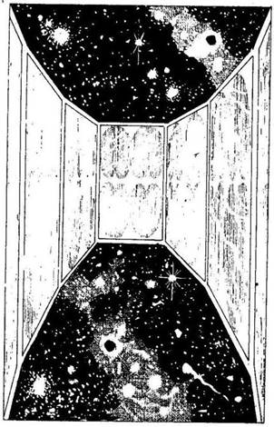
2 ÉLETERŐ pontot! Ha még mindig életben vagy, vérfagyasztó, dühödt ordítással csapod le katanád egyetlen suhintásával a tűzmester fejét. Most a többiek kerülnének sorra, de azok bemenekültek a közeli erdőbe. Eltaposod a lángokat, melyek fenyegetően csapkodnak körülötted. Megvédted a Sógun becsületét, és ezért 1 Becsület pontot nyersz, mielőtt tovább folytatnád az utadat. Lapozz a 195-re.
8.
Lassan kapaszkodsz felfelé a hegyoldalban, amikor hirtelen furcsa, szúró fájdalmat érzel a fejedben, mintha valami belecsípett volna az agyadba. Kénytelen vagy megállni. Amikor felnézel, tekintélyes külsejű alakot pillantasz meg magad előtt. Magas, izmos, emberformájú lény áll előtted, ezüsttel, arannyal díszített pompás palástban. Jóképűnek is mondhatnád, tekintete megnyerő és tiszta - de ez a tiszta tekintet az ördögé! Szeme lila tűzben ég, lényéből erő és rosszindulat árad. Ő a Dai-Oni, vagy más néven a felsőbbrendű démon.
- Nos, halandó, úgy látom, az Árnyak Urának, Ikirunak a birodalmába szeretnél bejutni - mondja dörgő hangon. - Ehhez az kell, hogy legyőzz engem a Síkok közt Lovagi Tornán! - A Dai-Oni mennydörgésszerűen visszhangzó őrült kacagásba kezd, és eltűnik a szemed elől. Hirtelen az űrben találod magad. Amerre nézel, csillagok tömkelegét látod, Oly sokat, hogy szinte beleszédülsz. Néhány perc múlva ajtók tűnnek fel a szemed előtt, s lassan magadhoz térsz az őrületből. Nyolc ajtó vesz körül, melyek egy nyolcszögletű szoba egy-egy falán helyezkednek el. A falak, a mennyezet és a padló teljesen átlátszóak.
Ekkor megszólal a Dai-Oni. Hangja a füledben cseng: - Ez a hely a Középpont. Minden egyes ajtó mögött hatalmas vadállatok rejtőznek, és ezeket kell megnyerned magadnak. Minél többet sikerül, annál jobb. Ha harcolni fogsz, veled lesznek majd és segítenek. Amikor készen állsz, meg kell küzdened velem és szövetségeseimmel a Csata Színhelyén. Élethalálharcot vívunk majd. Ha valamilyen csoda folytán te győzöl, bejutsz a Démonok Vermébe, s ott szembenézhetsz sorsoddal Ikiru hívei között. Akkor hát láss neki! Kívánom, hogy a szerencse soha ne kedvezzen neked, és ezer nyavalya szakadjon rád! - Hangja elhalkul. Nincs más választásod, harcolnod kell a Síkok közti Lovagi Tornán. Minden ajtón egy-egy tábla lóg. Melyik ajtón mész be elsőnek? A következő kiírások közül választhatsz:
A Legeslegnagyobb Magasság
Csúcsa Lapozz a 30-ra.
A Magasabb rangú Sík Lapozz a 68-ra.
A Kimondhatatlanul Nagy Szentség
Hegye Lapozz a 66-ra.
Akhon Végtelen Homok-
sivataga Lapozz a 78-ra.
Az Ősi Iszap Mocsárvidéke Lapozz a 98-ra.
Az Örökkévaló Torony Lapozz a 110-re.
Az Elvarázsolt Erdő Lapozz a 126-ra.
A Csata Színhelye Lapozz a 138-ra.
9.
Láncos buzogányoddal vadul csapkodva átverekszed magad a falun, és berohansz a sötét erdőbe. A Rokuro-Kubik, akik túlélték a rájuk mért vad támadást, futni hagynak. Túlélted az Élőholtak Városát. Nyersz 1 SZERENCSE pontot, és lapozz a 397-re.
10.
Hachiman földjén vándorolsz. Amerre csak mész, mindenki tisztelettel üdvözöl. Ez a tisztelet részben neked, a Sógun bajnokának, részben a Sógun pecsétjének szól. Ez a Konichihez közel fekvő vidék nyugodt, békés, amilyen mindig is volt. Néhány nap után a házak ritkulni kezdenek. Éppen Tsietsin nagyúr birtokán haladsz át, amikor gomolygó füstöt pillantasz meg a távolban. Amikor közelebb mész, látod, hogy egy falu lángokban áll. Szomorúan gondolsz a hachimani állapotokra, hiszen ott rablóbandák fosztogathatják uraik birtokait. Poros ösvény vezet az úttól a faluba. Ha be akarsz menni a faluba, hogy körülnézz - lapozz a 34-re. Ha úgy döntesz, hogy küldetésed ennél sokkal fontosabb, és inkább továbbmész - lapozz a 24-re.
11.
Azt mondod a véneknek, hogy néhány holmidat kinn hagytad a falu határában és elmész értük, de hamarosan visszajössz. Úgy látod, nem akarnak elengedni. Végül is erőszakkal törsz utat közöttük, és a házak mögött lopakodva, hogy ne vegyenek észre, elhagyod a falut. Lapozz a 15-re.
12.
- Úgy, hát eljutottál a Síkok közti Lovagi Tornára, halandó - mondja dörgő hangon a Tatsu. - Gratulálok! Elhatároztam, hogy segítek neked legyőzni a Dai-Onit, mert magam is Örömmel látnám holtan Ikirut, az Árnyak Urát. Amikor majd belépsz a Csata Színhelyére, én is ott leszek, és a te oldaladon fogok harcolni. - Miután mindezt közli veled, felröppen és elszáll. Nem tudsz mit tenni, vissza kell menned az ajtón a csillagok övezte Középpontba.
Jegyezd fel a Kalandlapodon, hogy megnyerted magadnak a Tatsut, majd lapozz vissza a 8-as pontra és válassz újra. Ne feledd, hogy csak olyasmit választhatsz, amit eddig még nem próbáltál ki.
13.
Egyszerre három, pikkelyes bőrű zöld szörny támad rád úszóhártyás karmaival, megpróbálnak lelökni a földhányás tetejéről. Meg kell küzdened velük.
ÜGYESSÉG ÉLETERŐ
Első Kappa 8 14
Második Kappa 8 12
Harmadik Kappa 7 13
Ha sikerül valamelyik Kappa ÉLETERŐ pontjait 4-re vagy még kevesebbre csökkentened - lapozz a 31-re.

14.
A kocsis behúzza a szekeret az istállóba, majd olyasmit dohog, hogy kiszáradt a torka a hosszú út után, és lassan kicammog az istállóból, te pedig szép nyugodtan lemászol a szekérről a földre. A palotaudvar túloldalán egy négyszögletes kőtorony áll, pagodára hasonlító tetővel és faragott díszekkel. Ez Tsietsin nagyúr palotája. De nem is a palota kelti fel a figyelmedet, hanem inkább az ajtót támasztó két őr. Shikomék ezek, rút emberszerű lények, de szőrösek, mint a majmok, karmuk van és agyaruk, meg félelmetes ormányos pofájuk. A Szamurájokéhoz hasonló páncélzatot viselnek, csakhogy az övék koszos, rongyos. Fegyverük azonban szemmel láthatólag kitűnő minőségű. A Shikomék jelenléte azt sugallja, hogy Tsietsin Ikirunak, az Árnyak Urának a szövetségese. Tsietsin biztosan bent tartózkodik a palotában, így még fontosabb, hogy megöld. Késő este van már, amikor úgy döntesz, hogy elérkezett a cselekvés ideje. Ha elsajátítottad a Kjudzsutszu tudományát, két villámgyors nyíllövéssel megpróbálhatod megölni mindkét őrt - lapozz a 46-ra. Ha ezt az ügyességfokozatot nem sajátítottad el, vagy nem akarod használni, egyszerűen odamehetsz hozzájuk, és hirtelen megtámadhatod őket - lapozz a 64-re; vagy elindulhatsz előre, mondván, hogy fontos üzenetet hoztál Tsietsin nagyúrnak - lapozz a 84-re; vagy magabiztosan elindulhatsz, tiszteleghetsz nekik, aztán ügyet sem vetve rájuk beléphetsz a palotába - lapozz a 100-ra.
15.
Az útelágazástól, ahonnan korábban bementél a faluba, most nagy sietve az ellenkező irányba indulsz. Senki nem veszi észre távozásodat. Fellélegzel, mert úgy érezted, volt valami természetellenes a falusiak viselkedésében. Hirtelen megpillantod az öreg faszénégetőt, aki előzőleg elvezetett a faluba. Amikor utoljára láttad a falu túlsó végében, halottnak hitted, hisz már nem is lélegzett, most meg ott vigyorog rád a fal túlsó oldaláról. Elindulsz felé, de hirtelen a földbe gyökerezik a lábad a látványtól - az öreg feje a törzsétől elválva felröppen a levegőbe. Rémülten veszed észre, hogy az öreg nem más, mint az egyik Rokuro-Kubi, vagyis olyan élőholt teremtmény, aki éjszakára megválik fejétől, amely vadászni indul. Fröcskölve, sziszegve fekete mérget okád ki rád. Haldokolsz. Vesztesz 2 ÉLETERŐ pontot! Meg kell küzdened a Rokuro-Kubival, mely gonoszul csattogtatja a fogait, úgy közelít feléd.
Rokuro-Kubi ÜGYESSÉG 7 ÉLETERŐ 8
Ha legyőzöd - lapozz a 153-ra.
16.
Hatalmas reccsenést hallasz a hátad mögül, mintha a menny dörögne. Amikor hátrafordulsz, látod, hogy egy rozsdás vasrács csapódik le mögötted. Nincs visszaút, csak előremehetsz. Egyszer csak iszonyatos bűz csapja meg az orrodat, és tejfehér fény villan előtted. Lapozz az 50-re.
17.
Három napig mész a vad vidéken, míg eljutsz a Póklápig. Szinte alig pihensz, mivel nem szeretnéd, ha elfognának Ikirunak, az Árnyak Urának lovas Szamurájai. Amikor elérsz a rettegett Póklápig, hirtelen szokatlanul fagyossá válik a levegő, de azzal biztatod magad, hogy így legalább jó mélyen behatolhatsz Ikiru földjére, még mielőtt az tudomást szerezne jelenlétedről. Jobbra egy macskaköves út vezet fel északnak, a deltáig. Kis idő múlva tavakkal és ingovánnyal szegélyezett gáton haladsz át. Lassan leszáll az éj, és a félhomályban már alig látsz tovább az orrodnál. Végül is egy útkereszteződéshez érsz. A ködös macskaköves út északkeletnek tart. Egy kitaposott földút viszont északnak visz, a „Lélek Forrása” feliratot viselő útjelző tábla mellett. Egy másik gát viszont a párába burkolózó tó partja mentén nyugatnak tart. Ha van nálad térkép, amelyen fel van tüntetve a bíborpagodába vezető út - lapozz a 107-re. Ha nincs, és északnak indulsz tovább - lapozz a 285-re; ha nyugatnak mész - lapozz a 125-re, ha pedig északkeletnek, lapozz a 249-re.

18.
Felszáguldasz a lépcsőn, és berontasz egy kis őrszobába. A bent lévő egy szál katona meglepetten néz rád. Felrohansz mellette a palota belseje felé vezető folyosón, de hirtelen felcsendül a riadó. Jókora távolságra vagy tőlük, de nem menekülhetsz Tsietsin palotájából, hiszen üldözőid követnek. Végül elkapnak. Bár hősiesen harcolsz, ők az erősebbek, és végeznek veled.
19.
A Tatsu csalódottnak látszik. - Igen, eltaláltad - mondja -‚ a helyes válasz: „a szél”, emberfajzat. - Majd felderül az arca, szemében kapzsi fény csillan. - Rendben van, de a következő találós kérdést vajon kitalálod-e, éleseszű halandó?
Nem teheted be a bankba,
Mégis kamat terem rajta.
Amíg tied, nem is tudod,
Milyen kincs a tulajdonod.
Pazarlod, vagy nem pazarlod,
Így is elfogy, úgy is elfogy;
Megöregszel, akkor tudod,
Milyen nagy volt a vagyonod.
Hasonlóan az első találós kérdéshez, ha tudod a helyes választ, most is gyűjtsd ki a válasz betűit, és add össze az alattuk feltüntetett számokat. A kapott összeg jelzi azt a pontot, ahová innen kell majd továbblapoznod. Ha a megfejtés nem jó, téves, illetve értelmetlen pontra lapozol - lapozz a 26-ra.
20.
A foglár haragosan dörren rád. Tedd próbára a SZERENCSÉDET! Ha SZERENCSÉD van - lapozz a 282-re. Ha nincs SZERENCSÉD - lapozz a 296-ra.

21.
A süvítő gömb nevű nyílvessző szélsebesen száguld célpontja, az egyik szörny mellkasa felé, de az éles hang, amit a gömb röptében kibocsát, semmilyen hatással nincs rájuk: Egy másik szörny odagereblyéz magához úszóhártyás mancsával, majd, miközben a sziklagátnál megpróbálsz harcolni a fehéren tajtékzó víz ellen, hatalmasat rúg rajtad. Vesztesz 3 ÉLETERŐ pontot! Egyre csúszol lefelé, a teljes megsemmisülésbe, amikor az egyik szörny ismét neked esik. Nem tudod tovább tartani magad, és úgy döntesz, beleugrasz az alattad tajtékzó folyó fehér vizébe. Lapozz a 49-re.
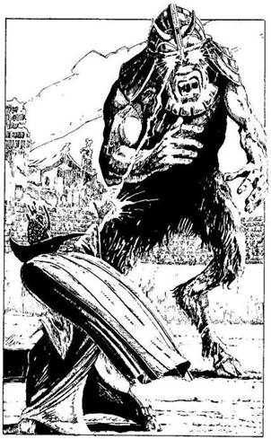
22.
Eleonóra előbbre lép, és ujjai közül kék villámnyalábot lövell ki Gargantuszra, akinek a villám az arcát éri, és rubinvörös szeme szinte szikrákat vet. Gargantusz iszonyatosat ordít fájdalmában, majd elterül a földön. Élettelen, akár egy bronzszobor.
Eleonóra hozzád fordul, és így szól: - Az adósságomat törlesztettem, és most megyek! Sok szerencsét, harcos! - Int, és eltűnik arra, amerről jött.
A Dai-Oni így szól: - Ügyes voltál, halandó, de most megöllek! - Jókora tüskés vasbuzogányt, egy Tetsubót lengetve közelít feléd. Ha Ki-Rin még mindig a szövetségesed, a Dai-Oni ellen küldheted - lapozz a 394-re. Ha ezt nem teszed, egyedül kell megvívnod a Dai-Onival - lapozz a 292-re.
23.
Wakizasiddal véded a fejedet, miközben egyre hátrálsz a levegőből sisteregve alázúduló tüzes parázsözön elől. Az egyik parázs belekap a zománcozott vértedbe, a másik lecsapja fejedről a sisakot. Csúnyán megégtél, és csaknem agyrázkódást szenvedtél. Vesztesz 5 ÉLETERŐ pontot! Ha még mindig életben vagy, vérfagyasztó, dühödt ordítással meglendíted katanádat, és egyetlen suhintással levágod a tűzmester fejét. A többieket is megtámadnád, de azok mind bemenekültek a közeli erdőbe. Nem törődsz tovább a lángokkal, amelyek majdnem felfaltak. Megvédted a Sógun becsületét, ezért nyersz 1 Becsület pontot, és tovább folytatod az utadat. Lapozz a 195-re.
24.
Továbbmész. A falu csakhamar eltűnik a szemed elől, amint elhagyod a környező szántóföldeket, utad egy alacsony dombnál elkanyarodik, s amikor megkerülöd a dombot, nem messze tőled egy erődítményt pillantasz meg. Felismered Tsietsin nagyúr, a helyi daimio (nemes) vagy báró lengedező zászlaját a bástya felett. Ha korábban már találkoztál Tsietsin nagyúr valamelyik alattvalójával - lapozz a 314-re. Ha még nem - lapozz a 326-ra.

25.
Vagy hat méterre süllyedsz a kút mélyén lévő jéghideg víz felszíne alá, ahová zománcozott vérted húzott le. Ha idejében meg tudnál szabadulni vértedtől, talán sikerülne két kardoddal felevickélni a víz felszínére, de a tüdőd már majd szétreped. Ha jelenlegi ÉLETERŐ pontjaid száma 12 vagy ennél kevesebb - lapozz a 353-ra, ha több mint 12 - lapozz a 313-ra.
26.
- Nem, te emberfajzat, a válasz nem helyes! - mondja mohón a Tatsu, és vészjósló láng lobban a szemében. - Most felfallak! - Hatalmas ordítással, fogait csattogtatva rád veti magát. Meg kell küzdened vele.
Tatsu ÜGYESSÉG 11 ÉLETERŐ 13
Ha legyőzöd - lapozz a 42-re.
27.
Valamilyen csoda folytán elég erőd van hozzá, hogy ellenállj Ikiru démona ördögi hízelgésének. Amint ezt látja, hirtelen eltűnik. Ikiru dühödten sziszegi: - Nem átallottál ellenállni nekem, te hitvány halandó! - Mielőtt odarohanhatnál, hogy magadhoz ragadd a Daloló Halált, Ikiru feláll trónusáról és utánad veti magát, helyesebben a föld fölött odalibben hozzád. Két keze csupa fekete karom. Felkészülsz a csatára, de mielőtt hozzád érne, kitárja a karját, és egy fekete villám pattan ki belőle, mely egyenesen beléd vág. Átka lesújtott rád. Megégsz, és szörnyű sérüléseket szenvedsz. Vesztesz 2 SZERENCSE, 4 ÉLETERŐ és 2 ÜGYESSÉG pontot! Ha még mindig életben vagy, Ikiru kezében vörösen izzó rúnajelekkel díszített fekete acélkard villan. Meg kell küzdened vele!
Ikiru ÜGYESSÉG 12 ÉLETERŐ 12
Amikor Ikiru eltalál, minden alkalommal Tedd próbára a SZERENCSÉDET! Ha SZERENCSÉD van - harcolj tovább. Ha nincs SZERENCSÉD - lapozz a 109-re. Ha sikerül legyőznöd - lapozz a 400-ra.
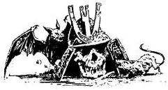
28.
Valaki hirtelen elkiáltja magát: - Hé, hát ez meg micsoda? Egy láb a szénakazalban! - Feltörő röhögés kíséri szavait. A szénát elnyalábolják, és lándzsájukat neked szegezve mindannyian ott állnak körülötted. - Úgy, szóval a Sógun bajnoka rejtőzik a szénakazalban, akár egy kondás! - mondja az egyik, kimonót viselő, kegyetlen arcú férfi. - Ieratsu vagyok, Tsietsin nagyúr hadnagya. Szeretettel vár a palotájában! - mondja savanyú képet vágva, majd jelt ad, és az őrök rád vetik magukat. Küzdesz, ahogy csak tudsz, de túl sokan vannak, és nem bírsz a túlerővel.
Belöknek a várbörtön egyik kis cellájába. A foglár, egy bivalytermetű pasas, viseltes bőrmellényben, gúnyosan így szól: - Holnap reggel Tsietsin Sógun elé visznek. - Ezzel rád csapja a nehéz vasveretű tölgyfa ajtót.
Egyedül maradtál. Elvették a kardjaidat, de jobban sért a katonák kegyetlen gúnyolódása és megalázó elfogatásod. Vesztesz 1 Becsület pontot! Nincs mit tenned, meg kell várnod a reggelt. Lefekszel a priccsre, és elalszol. Lapozz a 3 16-ra.
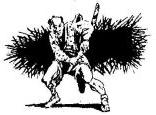
29.
A kelet felé vezető út, mely a nagy Hang-Yo folyót körülvevő síkságon át kanyarog, igen forgalmas. Itt a termékeny folyóvölgyben, ahol a Sógun Szamurájai teljesítenek járőrszolgálatot, sok ember mit sem tud azokról az izgalmakról, amelyek nyugtalanságot okoztak Hachiman határai közelében. A rizzsel megrakott szekerek és az üstfoltozók meg a házalók sebtében összeállított karavánjai, melyek egyik nagybirtokról a másikra fuvarozzák az árut, semmiben sem különböznek a kétszáz évvel korábban használt szekerektől, melyek a Keleti Szél Útján gördültek tova. Tulajdonosaik valamennyien alacsonyabb rangúak nálad, hiszen te Szamuráj vagy és a Sógun bajnoka, így igencsak vigyáznak, nehogy szekereik kereke kárt tegyen pompás vértedben. Mindnyájan fejét hajtanak, amikor elhaladsz mellettük. A magasabban fekvő hegyes vidékre vezető utad teljesen zavartalan, de amint elhagyod a folyónak a délutáni napban higanycsíkként csillogó utolsó kanyarulatát, hirtelen megváltozik a parasztok viselkedése veled szemben. Lapozz a 43-ra.

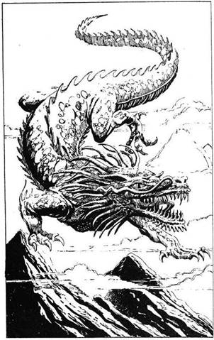
30.
Benyitsz a „Legeslegnagyobb Magasság Csúcsa” elnevezésű ajtón. Tűhegyes sziklacsúcs tetején találod magad, amely belenyúlik a furcsa, sárga színű égbe. Fejed fölött narancssárga nap ragyog. Mélyen alattad sötétvörös a föld. Amerre a szem ellát, ezer és ezer hasonló hegycsúcs erdejét látod, de az a legmagasabb, amelyiken te állsz. Mögötted egy ajtó csüng a levegőben, amely a világból a Középpontba vezet.
Egy folt jelenik meg az égbolton, és egyre nő, amint feléd közeledik. Egy Tatsu ez, vagyis szárnyatlan levegőjáró sárkány. Hatalmas, kígyószerű teste és négy, karmokban végződő lába van. Nem repül, hanem jár a levegőben. Ha már találkoztál a Tatsuval az Árnyak Erdejében - lapozz a 144-re. Ha még nem találkoztál vele - lapozz a 156-ra.
31.
A szörnyek pikkelyes zöld bőrét bíborvörös vér borítja el, ahol beléjük vágsz a kardoddal‚ és csakhamar rothadó gyümölcsre emlékeztet testük, de mégis úgy látod‚ hogy sebeik nem okoznak nekik különösebb gondot. Egyre több zöld lény ugrik ki a vízből és veti rád magát, s csakhamar bekerítenek. Valószínűleg nem lesz elegendő kardforgató tudományod ahhoz, hogy elbánj velük. Lapozz a 41-re.
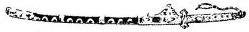
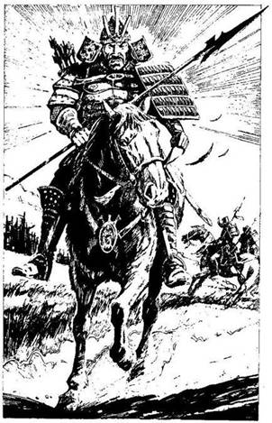
32.
Az élőholt harcos vészjósló csöndben küzd ellened. Utolsó ütésed szétzúzza csontvázkarját, erre ugrik egyet, és már nem éred el. Hirtelen teljesen láthatatlanná válik, s csupán a testét körvonalazó piros csík jelzi, merre mozog. Ismét támad. Tovább harcolsz ellene, de többé már nem alkalmazhatod a Dzsazsutszut, még ha elsajátítottad is ezt a tudományt. Vonj le magadtól 2 ÜGYESSÉG pontot, amíg ellenfeled láthatatlan. Mikor először találod el - lapozz az 58-ra.
33.
Ahogy a lapályos mocsáron haladva egyre közelebb kerülsz a folyó torkolatához, elered az eső. Teljes erőddel küzdesz a szakadó eső ellen, de csakhamar tetőtől talpig elnyel a sár. Két napon át zuhog, s úgy döntesz, visszafordulsz. A víz szintje egyre emelkedik, és úsznod kell. Amikor már több órája úszol, erőd elhagy, és a vízben leled halálodat.
34.
Elindulsz a poros ösvényen, de amikor a lángoló falu felől jajveszékelést hallasz, futásnak eredsz. Vágtázó lovasokat látsz; valószínűleg banditák, a menekülő falusiakat üldözik. Egy kis liget átmenetileg eltakarja előled a kilátást, de amikor megkerülöd a fákat, egy lovast, egy Szamurájt veszel észre az ösvényen, aki feléd tart. Egyik kezében hosszú dárdát tart, és Tsietsin nagyúr katonáinak zöldeskék, zománcozott páncél ját viseli. Tsietsin e vidék ura. Ha odarohansz a Szamurájhoz, megmutatod neki a Sógun pecsétjét, és magyarázatot kérsz arra, mi folyik a faluban - lapozz a 44-re. Ha inkább megvárod, hogy ő menjen oda hozzád - lapozz az 56-ra.
35.
Amikor a három zöldpikkelyes szörny odapattan hozzád és megpróbál lelökni a mélybe, nagyot ugrasz, egy fa tetejét megcélozva. Átlendülsz a szörnyek feje fölött, és mögöttük landolsz. Megfordulnak, és ismét rád akarnak rontani. Két választási lehetőséged van: elfuthatsz - lapozz a 173-ra, a hátadat egy fa törzsének támasztva harcolsz ellenük - lapozz a 183-ra. Mindenesetre, amikor átrepültél a fejük fölött, valami furcsát vettél észre. A lapos tetejű fejek valójában kis medencék, melyekben víz van. Azért egyensúlyoznak állandóan, hogy ki ne löttyenjen a víz a fejük tetején lévő medencéből.
36.
A Főnix tekintete kifejezéstelenné válik, a szemében égő lángok még lobbannak egyet, majd kihunynak. Élettelenül zuhan eléd. Néhány pillanattal később azonban ismét lángok borítják el testét, de ezúttal a madár a tűz martalékává válik, s csak hamu marad belőle. Ekkor szinte hihetetlen dolog történik. A hamuból egy másik, az előzőnél sokkal kisebb, hasonló madár röppen fel, a magasba tör, és legnagyobb megkönnyebbülésedre boldogan vijjogva eltűnik a szemed elől. Hitetlenkedve állsz egy ideig, elgondolkodsz a látottakon, majd megfordulsz, és kimész az ajtón. Ismét a Középpontban vagy. Menj vissza a 8-as pontra, és válassz újra, de ne feledd, csak olyasmit választhatsz, amit eddig még nem próbáltál ki.
37.
E szerencsétlen körülmények között igyekszel annyi tekintélyt szerezni magadnak, amennyit csak tudsz, és megparancsolod a parasztoknak, hagy szabadítsanak ki a csapdából. A faszénégetők egyenként közelítenek meg, mert félnek, hogy talán becsapod őket. Amikor szorongatott helyzetedben megpillantanak, kellemetlenül vigyorogva azon kezdenek tanakodni, mit is tegyenek veled, a csapdába esett Szamurájjal. A legnagyobb sikert az az ötlet aratja, hogy élve égessenek el az egyik faszénégető kemencében. Lehántják a közeli fák kérgét, hogy megkötözzenek. Ha elmondod nekik, milyen fontos a küldetésed - lapozz a 89-re. Ha figyelmezteted a parasztokat, hogy szellemek fogják kísérteni őket, amennyiben megölik a Sógun bajnokát - lapozz a 101-re.
38.
Hatalmas reccsenést hallasz a hátad mögött, mintha a menny dörögne, és kínzó fájdalom hasít beléd. Valami a hátadba vágódik, és elnyúlsz a földön. Vesztesz 3 ÉLETERŐ pontot. Ha még mindig életben vagy, egy rozsdás vasrács csapódik le mögötted, és elzárja a visszautat. Elindulsz előre. Egyszer csak iszonyatos bűz csapja meg az orrodat, és tejfehér fény villan előtted. Lapozz az 50-re.
39.
A háromágú szigony villás végei beleállnak a melledbe. A földre zuhansz, és vér önti el a szádat. A Kappák kezébe kerültél, ahonnan nincs menekvés. A folyó mélységes mély fenekére vonszolnak, bár már rég halott vagy.
40.
A foglár továbbmegy, és a többi foglyot is felébreszti. Fekete kenyeret és poshadt vizet ad be nekik a kis kémlelőablakon át. Miután ezzel végzett, azonnal visszatér hozzád, és kinyitja a cellád ajtaját. Ezúttal három katona is van vele. Ha azt színleled, hogy megsérültél, majd amikor kivezetnek a celládból, váratlanul felkapsz egy fegyvert és elrohansz - lapozz a 380-ra.
41.
Ha elsajátítottad a Karumidzsutszu tudományát, és arra használod, hogy átugorj ellenfeleid feje fölött - lapozz a 35-re. Máskülönben kénytelen vagy támadásukkal szemben védekezni. Kardoddal sebesen csapkodsz, azt a látszatot keltve, mintha valamiféle varázspajzsok vennének körül, de ellenfeleid egyre támadnak. Végül az egyiknek sikerül áttörnie a „védőpajzson”, és beléd mélyeszti a karmait. Vesztesz 2 ÉLETERŐ pontot! Ha még mindig életben vagy - lapozz a 129-re.
42.
A sárkány felfordul és kimúlik. Ekkor szinte hihetetlen dolog történik: a szemed láttára tűnik el a semmibe, mintha soha nem létezett volna. Körülötted az erdő elveszti titokzatos varázserejét. Továbbmész a tisztás túloldalán lévő ösvényen. Lapozz a 82-re.
43.
A megszokott tisztelet, amit a társadalomban elfoglalt helyeddel vívtál ki magadnak, sajnálatos módon hiányzik az első hegyilakókból, akikkel
találkozol. Ezek faszénégetők, a bőrüket sötétszürkére festette a korom. A legfiatalabb felismeri a hátad mögött lengedező zászlót, és gúnyosan így szól: - Nézzétek, barátaim, itt látható a törvénytelen király törvényes bajnoka! Hol van urad kardja? Hol van urad a kardja nélkül? Hasekawa kopasz fejére mondom, már nem Sógun többé! Nincs már urad, ronin vagy! - A ronin nem más, mint olyan Szamuráj, akinek nincs többé ura, és elvesztette az állását. A paraszt egyre csak gyaláz téged, meg a Sógunt. A többi faszénégető nyugalomra inti az ifjút. Megbünteted-e az ifjút? Ha igen - lapozz az 59-re, ha nem, és továbbmész, mint aki nem vett észre semmit - lapozz a 77-re.
44.
Kihei Hasekawa nevében megálljt parancsolsz a Szamuráj lovasnak, és megkérdezed, mi folyik itt. Odaüget hozzád, és azt kiáltja: - Fosztogató banditák! Megyek megvédeni Tsietsin nagyúr erődítményét! - Ekkor azonban lovát megsarkantyúzva meglepetésszerűen neked ront, és dárdájával mély sebet vág a karodba. Vesztesz 3 ÉLETERŐ pontot! Meg kell küzdened az áruló Szamurájjal.
Lovas Szamuráj ÜGYESSÉG 8 ÉLETERŐ 9
Ha legyőzöd - lapozz a 72-re.
45.
Egyre mész tovább a falu széle felé, amikor utadat düledező kis ház fala zárja el. Lehajtott fejjel nekirohansz a falnak, áttöröd, és a túloldalon száguldasz tovább, így időt nyersz a fejekkel szemben,
amelyek a háztetők fölött repülnek át. Csak néhány vár rád a falu határában. Ismét küzdened kell.
Rokuro-Kubik ÜGYESSÉG 8 ÉLETERŐ 8
Ha legyőzöd őket - lapozz a 9-re.
46.
Beilleszted „bélfürkészedet” az íjad húrjába, megcélzod a Shikome őröket, és amilyen gyorsan csak tudsz, lősz. Dobj két kockával! Ha a kapott összeg kevesebb, mint ÜGYESSÉG pontjaid száma, lapozz a 236-ra. Ha a kapott összeg Ugyanannyi vagy nagyobb, mint ÜGYESSÉG pontjaid száma - lapozz a 248-ra.
47.
A fekete rúnajelekkel díszített kard gyengíti életerődet. Vesztesz 1 ÜGYESSÉG és 1 SZERENCSE pontot! Menj vissza a 199-re, és folytasd a harcot.
48.
Az ifjú nő kihívóan néz rád. Melyik tárgyadat veszed elő?
A kürtöt? Lapozz a 86-ra.
A Tudás Vizét? Lapozz a 96-ra.
A Zavarodottság Sisakját? Lapozz a 114-re.
Ha egyik tárgy sincs a birtokodban - lapozz a 130-ra.
49.
Belevetetted magad az alattad tajtékzó folyóba, és legnagyobb rémületedre azt tapasztalod, hogy a szörnyek a folyó medrét telis-tele szurkálták kihegyezett végű karókkal. Vesztesz 7 ÉLETERŐ pontot! Ha még mindig életben vagy, nagy nehezen kikászálódsz a karók közül, amelyek sok helyen véresre sebezték a testedet, és holtfáradtan úszol a túlpart felé. Lapozz a 395-re.
50.
A bűz egyre elviselhetetlenebb. Egy hatalmas barlangba jutsz, amelyben halvány fény dereng, de a fény forrását nem látod. Csontok, réti rongyok és rozsdás fegyverek hevernek szanaszét a földön. Ekkor hirtelen megpillantod a fény forrását. Hatalmas, izzó alak közeleg feléd. Irdatlanul nagy fogakkal szegélyezett szája kinyílik, és be akar kapni. Két óriási, kimondhatatlanul sötét, korong nagyságú szeme rád mered - ősi gonoszság tükröződik benne. Szelvényes, csontos testét több száz fürge láb tartja. Ez a piszkos, fehér test bocsátja ki magából a halvány fényt. Ez a teremtmény a Mukade, egy körülbelül négy méter hosszú, óriás százlábú. Hozzád araszol abban a reményben, hogy ma te leszel tápláléka. Ha elsajátítottad a Kjudzsutszu tudományát, és még megvan íjad és nyílvessződ, két nyílvesszőt lőhetsz ki rá, mielőtt rád vetné magát. Ha megnyered a csatát, akkor sem tudod visszaszerezni a nyílvessződet.
Mukade ÜGYESSÉG 7 ÉLETERŐ 20
Ha legyőzöd - lapozz a 62-re.
51.
Látod, amint Ikiru még több árnyalakot gyűjt maga köré, és egyetlen intésére mindannyian rád támadnak. A képlékeny fekete tömeg be akar kebelezni. Egymás után tíz ilyen szörnnyel kell megküzdened. Amikor egyet kiütsz, a Daloló Halál minden alkalommal lüktető fényt bocsát ki magából, és végez vele. Minden Árny 9 ÜGYESSÉG és 1 ÉLETERŐ ponttal rendelkezik. Ha mind a tízet megölöd, megkerülöd a vermet, és szembefordulsz Ikiru ügyes, fekete arcával. Lapozz a 121-re.
52.
A Tatsu a meglepetéstől megdermed, és tehetetlen dühvel így szól: - A gyermekkori igen. Légy átkozott, halandó! - mennydörgi. Egy pillanatig azt hiszed, rád támad, de lecsillapodik. - Becsülettel elnyerted az engedélyt, hát mehetsz, szabad az itt! De előtte még hallgass meg. Ha majd ott leszel a Síkok közti Lovagi Tornán, és meg akarod ölni a Dai-Onit, ezekkel a szavakkal hívd segítségül Jizót a Démonok közül: Egy Sura van itt, Ó, Jizo. Jöjj, és hajtsd ítéletedet! - Miután e rejtélyes üzenetet elmondja, felröppen és eltűnik. Helyén egy sárkányt ábrázoló jáde-talizmánt találsz. Felveszed és alaposan megnézed. Ez a Váratlan Körülmények Talizmánja. Nyersz 2 SZERENCSE pontot! Elindulsz az erdőn át. Lapozz a 82-re.

53.
Háttal állsz a fehér víznek, és fölemeled nehéz kardodat, de az álnok nyálkán megcsúszol. Elveszted az egyensúlyodat. Kardod átröpül a szörny feje fölött, és az megragad erős karmaival. 4 ÉLETERŐ ponttól foszt meg. Ha még mindig életben vagy, a pikkelyes bőrű zöld szörny megragad, és mintha csak rongybaba lennél, behajít a gázló alattatok hömpölygő fehér hab jajba. Legnagyobb szerencsétlenségedre a szörnyek a gázló fenekét teleszurkálták hegyes végű karókkal, melyek felnyársalnak. Vesztesz 4 ÉLETERŐ pontot! Ha még mindig életben vagy iszonyú kínok közepette kiszabadítod magad a karók fogságából, melyek több helyen is átdöfték a vértedet, és kiúszol a túlpartra. Lapozz a 395-re.
54.
Végre legyőzted a Dai-Onit, s ott fekszik az Aréna homokos küzdőterén. Az utolsókat rúgja. A szellem-nézősereg eltűnik, az Aréna ismét kihalt. A Dai-Oni fájdalmas hangon így kiált fel: - Te győztél, halandó! Ám a Síkok közti Lovagi Torna szabályai, melyeket az Istenek hoztak, engem béklyóként kötnek. Most megengedem, hogy feltegyél egy kérdést. - Mit kérdezd tőle?
Mi a Daloló Halál titka? Lapozz a 206-ra.
Hogyan öljem meg Ikirut, az
Árnyak Urát? Lapozz a 188-ra.
Segíts, hogy megtaláljam és
megölhessem Ikirut Lapozz a 150-re.
55.
A varázsló ismét előre látja lépésedet. - Alighanem az az utolsó próbálkozásod - mondja. - Jól szerepeltél, ifjú Szamuráj! - A papnő remegni kezd, amikor a Tengeri Sárkány tátott szájához és tüskés uszonyához közeledsz. A Sárkány felkapja a fejit, amikor a varázsló ismét eltűnik, majd egy hatalmas forró vízsugár mindkettőtöket elborít. A papnő sikolya még a füledben cseng, amikor elveszted az eszméletedet, és a Tengeri Sárkány egészben lenyel.
56.
A lovas Szamuráj gúnyolódni kezd veled. Így kiált:
- Hát te vagy annak az úgynevezett Sógunnak, Kihei Hasekawának az a gyáva, hitvány talpnyalója! Éljen az új Sógun, Tsietsin-Sama! - Dárdáját feléd fordítja, és rád támad. Tsietsin nagyúr áruló lett. Ha mesterfokon tudod használni a nyilat, és kilövöd rá egyik nyílvessződet - lapozz a 80-ra. Ha nem, védd magad támadásával szemben, és lapozz a 92-re.
57.
A testetlen fejek iszonyúan ordítoznak, átkozódnak, miközben koponyájukkal a fejedet és karodat csapkodják. Hiába harcolsz ellenük, az ütésektől megtántorodsz, és nem tudod védeni magad. A Rokuro-Kubik megnyúznak. Jó vacsorájuk lesz ma este.
58.
A harcos újra a híd túlsó végében terem. Ismét láthatóvá válik, és furcsa jajveszékelésbe kezd. Rémülten látod, hogy hangjára a véres víz felszínén úszó csontvázak életre kelnek. Hatan közülük a hídra igyekeznek fölmászni. Ha elsajátítottad a Kjudzsutszu tudományát, és megpróbálod lelőni az élőholt Szamurájt - lapozz a 134-re. Ha nem, lapozz a 242-re.
59.
A faszénégetők, akik talán tízen lehetnek, alacsony, füstölgő fakupacok gyűrűjében állnak, amelyeknek a tetejét frissen vágott tőzeg borítja. A fakupacokból szürke füstcsíkok szállnak a magasba, és eltakarják a fát, melyből a nagy hő hatására faszén lesz. Kicsit távolabb számos, elégetésre váró fadarab hever, Ha meg- parancsolod a faszénégetőknek, hogy boruljanak térdre előtted - lapozz a 111-re. Ha nyilat röpítesz az ifjúba, amennyiben elsajátítottad a Kjudzsutszu tudományát - lapozz a 123-ra. Ha kardot rántasz - lapozz a 135-re. Ha viszont a Karumidzsutszu tudományával rendelkezel, hősiesen ugorj közéjük - lapozz a 147-re.
60.
Kardot rántva így kiáltasz: - Segítened kell, mert ha nem, viselned kell a következményeket! - Arca elfehéredik a rémülettől, de hirtelen rád mutat, és ekkor kék villám pattan ki a kezei közül, és a lábad előtt csapódik be. Az izzó kék villám fájdalmasan hasít beléd. Vesztesz 2 ÉLETERŐ pontot! Ha még mindig életben vagy, amikor feltekintesz, ő már nincs sehol. Ha meg akarod keresni - lapozz a 70-re. Ha nem, belépsz az ajtón, és visszamész a Középpontba. Ebben az esetben lapozz vissza a 8-as pontra és válassz újra, de ne feledd, hogy csak olyasmit választhatsz, amit eddig még nem próbáltál.
61.
A gázló közepén lábad megcsúszik a mélyben az alattomos nyálkán, és belepottyansz a tajtékzó, fehér habokba. Szerencsétlenségedre a Kappák - így hívják ugyanis a pikkelyes bőrű zöld lényeket - a gázló fenekén kihegyezett végű karókat helyeztek el. A karók felnyársalnak, és vérted védelme nélkül még csak reményed sincs rá, hogy kiszabadulj a fájdalmas csapdából.
62.
Kardodat mélyen belevágod az egyik fekete szemébe. Hátratántorodik, és élesen felsikolt. Haláltusájában vadul csapkod, így kissé hátrább kell menned. Hirtelen elhagyja az ereje, és holtan esik össze. Átkutatod a barlangot, amelynek a túlsó végében egy kijáratót találsz meg egy halom „kincset” - főleg csontokat és használhatatlan, régi fegyvereket. Ugyanakkor találsz 15 Aranytallért, egy díszesen megmunkált, fényesen csillogó ezüstsisakot, egy üvegcsében zöldesfekete színű, gusztustalan folyadékot meg egy csodás, vasból készült harci legyezőt, melyet a csatában a seregek jeleként használtak. A legyező belsejében émelyítő mintázatú csontberakás van. Mit teszel?
Felveszed a harci legyezőt és
kinyitod? Lapozz a 182-re.
Iszol egy keveset a folyadék-
ból? Lapozz a 196-ra.
A fejedre teszed a sisakot? Lapozz a 210-re.
Nem nyúlsz semmihez, és kimész
a barlangból? Lapozz a 222-re.
63.
A trónus felé hajítod a kardot. Úgy repül célpontja felé, akár egy nyílvessző. Amikor hozzáér a trónust körülvevő árnyak gyűrűjéhez, szikrázó fény csap ki belőle. A nagy fényességben mindannyian halálra égnek. Megpillantod Ikirut, amint a palástjába burkolódzva ül a trónusán, de egy pillanattal később az Árnyak Ura félreugrik a kard elől, és az a trónusába csapódik, és remegve megáll benne. A Daloló Halált kiengedted a kezed közül, nincs többé. Az erő, amelyet kölcsönzött neked, eltűnt. Vesztesz 4 ÉLETERŐ, 2 ÜGYESSÉG és 2 SZERENCSE pontot! Ikiru talpra szökken, és rekedt, érdes hangon így kiált: Te bolond! Lapozz a 260-ra.
64.
Elindulsz a Shikomék felé, akik avasvaj-szagot árasztva bárgyún, közönyösen néznek rád. Meglepetésszerűen rajtuk ütsz. Az egyikkel egy pillanat alatt végzel, de a másik félelmében vad ordításba kezd, mire a kastélyt szamurájok és Shikomék tömkelege özönli el, Megpróbálsz elmenekülni, de azonnal észrevesznek, és rád vetik magukat. Foglyul ejtenek, s közben gúnyos megjegyzéseket tesznek a Sógunra és annak bajnokára, azaz rád - szemmel láthatólag pontosan tudják, ki vagy. Belöknek a várbörtön egyik kis cellájába. A foglár egy bivalytermetű pasas, viseltes bőrmellényben, így szól:
- Holnap reggel Tsietsin Sógun elé visznek. - Ezzel rád csapja a nehéz, vasveretű tölgyfa ajtót.
Egyedül maradtál. Elvették a kardjaidat, de jobban sért a katonák kegyetlen gúnyolódása és megalázó elfogatásod. Vesztesz 2 Becsület pontot! Nincs
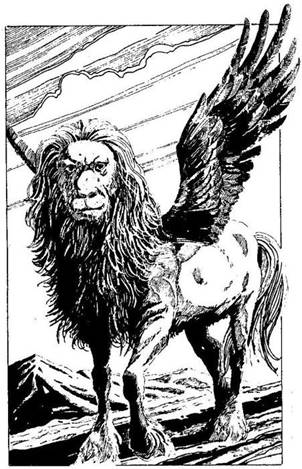
mit csinálnod, meg kell várnod a reggelt. Lefekszel a priccsre, és elalszol. Lapozz a. 316-ra.
65.
Kezd besötétedni, s te még mindig nem szabadítottad a lábadat a csapdából. Hátadon szúrós pillantásokat érzel: meggyőződésed, hogy a faszénégetők néznek téged, és várnak. Levelek susognak, apró madarak csivitelnek, mikor az éjszaka leszáll, s ekkor hirtelen néma csönd támad körülötted. A szél elcsitult, és az állatok mind elhallgattak, csupán egyetlen vadállat nehézkesen lopakodó lépteit hallod. Nyomodat kutatva közeledik feléd az ösvényen, amikor hatalmas ordítás hallatszik, s egy madárraj sikoltva felröppen. Úgy gondolod, ez nem lehet más, csak Shako-Gurubi, az erdei párduc. Szinte teljesen tehetetlen vagy: mozdulni sem tudsz a csapdából. Ha katanáddal levágod a lábadat a térded alatt, hogy végre kiszabadulj és megvédhesd magad - lapozz a 119-re. Ha vadul hadonászni kezdesz a kardoddal, abban a reményben, hogy a vadállat nem támad rád - lapozz a 139-re.
66.
Belépsz a „Kimondhatatlanul Nagy Szentség Hegye” elnevezésű ajtón. Egy magas hegycsúcs lábánál állsz - a csúcsra könnyű lesz felkapaszkodnod, de hosszadalmas és fárasztó út előtt állsz. Az életnek semmi jelét sem látod errefelé, így nincs más választásod, fel kell másznod a csúcsra.
Mikor végre felérsz, viszonylag sík vidék tárul a szemed elé. Tátva marad a szád a meglepetéstől, amikor egy pompás termetű, különös teremtmény toppan eléd. Erőt és méltóságot sugároz magából,
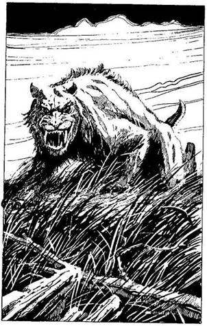
szeme, mint két tüzes golyó. Teste akár a lóé, feje mint az oroszláné, két hatalmas szárnyát toll borítja. Ez maga a Ki-Rin, az istenek szolgája, bölcs teremtmény, a törvény és a jóság képviselője és harcosa. Egy szempillantás alatt végigmér. Ha Becsület pontjaid száma 5 vagy több - lapozz a 340-re. Ha kevesebb, mint 5 - lapozz a 352-re.
67.
A háromágú szigony átütötte a vértedet és eltörte két bordádat. Vesztesz 4 ÉLETERŐ pontot! Ha még mindig életben vagy, rájössz, hogy az előrelátás sokkal fontosabb a merészségnél, és eltűnsz a gázló környékéről. Lapozz a 335-re.
68.
Belépsz a „Magasabb rangú Sík” elnevezésű ajtón. Lélegzetelállító síkság terül el előtted, füves, dimbes-dombos sztyeppe, ameddig a szemed ellát. A levegő szokatlanul friss, tiszta. Nem messze tőled különös, primitív kinézetű szarvas szökken tova. Közvetlenül mögötted egy ajtó csüng a levegőben - a Középpontba visszavezető út.
Egyszer csak hatalmas állat jelenik meg előtted: egy óriási kardfogú tigris! Mereven néz, majd felugrik, és vágtázni kezd. Mit teszel? Ha előveszed a Főnixes Rubint - amennyiben van ilyen a birtokodban -‚ lapozz a 214-re; ha nyilat röpítesz a tigrisbe - amennyiben a nyíllövés tudományát elsajátítottad -‚ lapozz a 224-re; ha belefújsz a kürtödbe - ha van kürtöd -‚ lapozz a 234-re. Ha visszalépsz az
ajtóból, lapozz vissza a 8-as pontra és válassz új ajtót, de ne azt, amelyikkel már előzőleg próbálkoztál.
69.
A testetlen, fejek iszonyúan ordítanak és átkozódnak, miközben a fejedhez meg a karodhoz csapódnak. Hiába harcolsz ellenük, az ütésektől megtántorodsz és nem tudsz védekezni. Zavarodban rosszul lépsz, és vagy húsz métert zuhansz a kút hideg vizébe. Lapozz a 25-re.

70.
Bemész a nő után az erdőbe, de az ösvény egyszer csak nyomtalanul eltűnik a lábad alól. Tanácstalanul nézel körül, de utat semerre sem látsz - eltévedtél. Olyan érzésed van, mintha minden folyton változna, mozogna körülötted. Arra vagy ítélve, hogy örökkön örökké az Elvarázsolt Erdőben vándorolj. Talán majd egy szép napon belebotlasz az ifjú nőbe. Kalandod itt véget ér!
71.
Egy középkorú asszony az első falubeli, akivel találkozol. Fejét ócska selyemkendő fedi. Úgy látod, búskomorságban szenved, de meghív rozoga faházába, melynek egyik zsaluja szegletében lyukat látsz. Kapsz egy szalmazsákot, amelyen alhatsz, meg egy tál meleg zabkását. Ha megjavítgatod a nő házát - lapozz a 215- re, ha megeszed a zabkását, és utána lefekszel aludni - lapozz a 203-ra.

72.
Egyetlen hatalmas suhintással mély sebet ejtesz a lovas lábán. Fájdalmában felordít, és kizuhan a nyeregből. Mielőtt földet érne, katanáddal lekaszabolod a fejét. Most már biztosan tudod, hogy Tsietsin nagyúr áruló: vagy tíz Szamurája garázdálkodik a faluban, fosztogatnak, gyilkolnak a védtelen otthonokban. Ha úgy döntesz, hogy sorsára
hagyod a megtámadott falu lakosait, és inkább folytatod az utat, mert a számodra fontosabb küldetést akarod teljesíteni - lapozz a 104-re. Ha inkább a faluba sietsz, és ledöföd az első utadba kerülő Szamurájt - lapozz a 116-ra. Ha berohansz a faluba és elkiáltod magad, hogy te vagy a Sógun bajnoka, és bárkivel kiállsz egy tisztességes párbajra - lapozz a 128-ra. Ha elsajátítottad a Kjudzsutszu mesterfogásait, és házról házra járva végzel a fosztogatókkal - lapozz a 140-re.
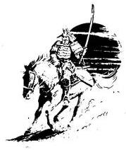
73.
Óvatosan lépkedsz a kőgáton, amely alig néhány centire húzódik a víz alatt. A köveket borító zöld nyálka igen veszélyes. Két, pikkelyes bőrű, zöld szörny bukkan fel a zöld mélységből, és fürgén felmászik a kőgátra. Nem sok jót ígérő úszóhártyás karmaik vannak, és szemmel láthatólag nem
izgatja őket túlzottan a lábuk alatt lévő csúszós nyálka. Ha beleveted magad az alattad tajtékzó fehér vízbe - lapozz a 49-re. Ha inkább visszafordulsz a gázlótól, és biztonságosabb átkelőt keresel a folyón - lapozz a 105-re; ha viszont elsajátítottad a Kjudzsutszu tudományát, megpróbálhatsz rájuk ijeszteni a süvítő gömb nevű nyílvesszővel - lapozz a 21-re.

74.
Végre legyőzted a Dai-Onit, s ott fekszik az Aréna homokos küzdőterén. Az utolsókat rúgja. A szellem-nézősereg eltűnik, az Aréna ismét kihalt. A Dai-Oni fájdalmas hangon így kiált: - Te győztél, halandó! Ám a Síkok közti Lovagi Torna szabályai, melyeket az Istenek hoztak, engem béklyóként kötnek. Most feltehetsz egy kérdést. - A Dai-Oni varázsereje kissé meggyengült, miután vereséget szenvedett. Nyersz 1 ÜGYESSÉG, 1 SZERENCSE vagy 2 ÉLETERŐ pontot, ha küzdelmed során vesztettél volna belőlük. Mit kérdezel a Dai-Onitól?

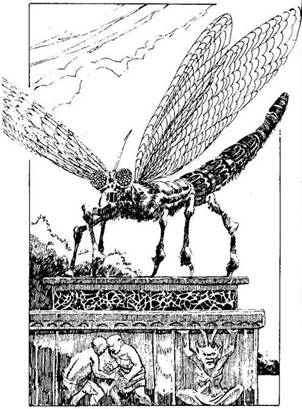
Mi a Daloló Halál titka? Lapozz a 206-ra.
Hogyan öljem meg Ikirut, az
Árnyak Urát? Lapozz a 188-ra.
Segíts, hogy megtaláljam és megölhessem
Ikirut Lapozz a 150-re.

75.
Ahogy közelebb mész Hammurabinak, a Legyek Urának szobrához, a varázsló ismét megjelenik. A szobor életre kel, s a légy közel hétméteres szárnyai megfeszülnek. Csillogó összetett szeme mintha téged nézne. Iszonyatos zümmögés hallatszik. A varázsló ismét eltűnik, és ekkor a szemedet meg a bőrödet rovarok hada támadja meg. Ezek Hammurabi szolgái, akik a védelmére siettek. Csakhamar szoros gyűrűbe fognak, de ekkor a papnő elbűvölő altatódalba kezd. Ez a Hemzsegő Bogarak Dala. A rovarok elálmosodnak, s fokozatosan lepotyognak köréd a földre. A papnő egyre csak énekel, s látod, amint Hammurabi lágyan ringatózni kezd a dalára. A papnő a Legyek Ura kultuszának hűséges követője. Tisztelettel meghajol Hammurabi előtt, és ekkor megnyílik előtted a szökőkúthoz vezető út. Lapozz a 95-re.
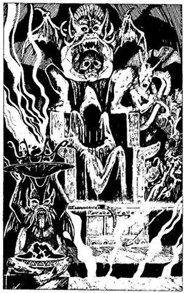
76.
Az Aréna falai remegő fénnyel halványodni kezdenek, majd eltűnnek. Helyüket valami más: egy fekete, sötét palota foglalja el. Egy hosszú, fekete márvány oszlopcsarnok végében találod magad. Az izzó szén titokzatos fénnyel parázslik, árnyak cikáznak egymást kergetve a padlón. A csarnok végében hatalmas verem tátong, veszélyes füst kígyózik belőle a magasba. A verem mögött furcsa, fekete kőből vésett trónus emelkedik. Egészen különleges faragások díszítik: apró csúcsok, tornyok, vízköpő sárkányok és más groteszk alakzatok. A trónuson csuklyás alak ül. Úgy látod, mintha meredten nézne valamit maga előtt. A trónus előtt lévő állványon egy nodacsi, egy kétmarkolatú, szépen megmunkált kard hever csillogó aranyhüvelyben. Nem illik ebbe az árnyékkal teli, homályos, ördögi gonoszságot árasztó oszlopcsarnokba elismered benne a Daloló Halált, a Szamuráj Kardját, és nagyot dobban a szíved.
A csuklyás fej egyszer csak meglepetten rád néz. A csuklya alatt a mély, üres sötétségen kívül semmi sincs. Sziszegő hang szólít meg:
- Ki merészeli megzavarni Onikarunak, a Verem Démonának nyugalmát, és magára vonni Ikirunak, az Árnyak Urának haragját?
Ha ismered a Daloló Halál titkát lapozz a 152-re.
Ha nem ismered lapozz a 94-re.

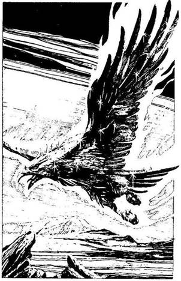
77.
Gyorsan elhaladsz a tőzegborította fakupacok, meg a faszénégetők mellett, akik hangosan gúnyolnak, amiért elhagytad a Sógunt és elmenekültél Hachimanból, mert attól féltél, hogy a Sógun megbukik és kegyenceit kivégzik. Igaz, ami igaz, nem is számíthatsz semmi jóra, hiszen nemegyszer a te feladatod volt, hogy megöld urad ellenségeit és az árulókat, amit azok családja soha nem fog neked megbocsátani. Furdal a lelkiismeret, mert nem tudtad megvédeni a Sógun jó hírét. Vonj le magadtól 1 Becsület pontot! Lapozz a 93-ra.
78.
Belépsz az „Akhon Végtelen Homoksivataga” elnevezésű ajtón. Iszonyatos forróság vesz körül, és hirtelen verejtékcseppek ütnek ki a homlokodon. A sárga égbolt alatt, melyen eddig még soha nem látott méretű, óriási nap ragyog, ameddig a szem ellát, hatalmas kiterjedésű sivatag terül el! Akhon végtelen homoksivataga. Mögötted egy ajtó lóg a levegőben - a Középpontba visszavezető út. Hirtelen éles, fülsiketítő sikoltás hallatszik. Különös madár csap le az égből. Hatalmasabb, mint a legnagyobb sas, amit eddig láttál, a szeme vörös tüzű lángban ég, és fémes aranytollazata van. Testét furcsa sárga lángok veszik körül, de csodálatos módon nem tesznek kárt benne. Ez a Főnix. Ha van a birtokodban egy Főnixes Rubin - lapozz a 348-ra. Ha nincs - lapozz a 360-ra.

79.
Kisvártatva újabb Karolópók támad meg. Épp akkor mászik elő az odújából, amikor egy hosszú lábú vízipók araszol oda hozzád, hogy rád vesse magát. Mindkettőjükkel meg kell küzdened!
ÜGYESSÉG ÉLETERŐ
Karolópók 10 12
Vízipók 8 10
Ha legyőzted őket - lapozz a 87-re.

80.
A lovas Szamurájon vastag harci vért feszül. A „vértfúró” nyílvesszőt kell használnod ellene. Kétszer lőhetsz rá, mielőtt odaérne hozzád. Dobj két
kockával minden egyes lövésnél: ha a kapott összeg kevesebb, mint ÜGYESSÉG pontjaid száma, a nyílvessző megsebzi ellenfeledet, kiserken a vére, és veszít 2 ÉLETERŐ pontot. Egyre közelebb jön hozzád, és dárdáját a torkodnak szegezi. Lapozz a 92-re, de ne feledd a Kalandlapodon jelölni, hány ÉLETERŐ pont veszteséget okoztál nyílvessződdel a Szamurájnak.

81.
Folytatod a küzdelmet. Amikor egy akkorát csapsz, hogy az minden normális embert nyugodtan a másvilágra küldene, az ezüst Szamuráj térdre hullik előtted, és fölényedet elismerve életét a kezedbe ajánlja. Nem vagy képes bántani, és megparancsolod, hogy álljon fel. - Bátran, hősiesen küzdöttél - mondja. - A te oldaladon fogok harcolni, ha szükséged lesz rám az Elvarázsolt Kertben. - Ha innen azon az ösvényen indulsz el, amely a papnő és a démon szobrához vezet - lapozz a 185-re. Ha azon az ösvényen mész, amely Hammurabihoz, a Legyek Urához vezet - lapozz a 165-re.
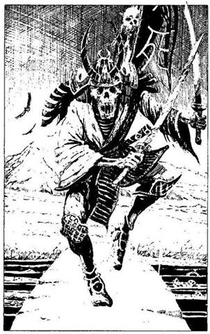
82.
Végül kiérsz az Árnyak Erdejéből. Előtted az ösvény úttá szélesedik, mely egy folyón átívelő, ősrégi hídon visz át. Ez a Hiang-Kiang folyó és a Hagakure híd. Mögötte a távolban feltűnnek a Shios’ii hegyek.
Miközben a híd felé tartasz, minden megváltozik körülötted, mintha másik világba léptél volna. Tulajdonképpen minden a régi: a híd, a hegyek, a környező táj, csak az ég sokkal sötétebb. A híd alatt a folyó vize vértől vörös, és csontvázak, koponyák, lábszárcsontok és egyéb végtagok úsznak a felszínén.
Undorító kísértet állja el az utadat, egy Szamuráj harcos, csakhogy már nem él, hanem rég halott. Vigyorgó koponya húzódik meg a sisakja mögött, és mindkét csontkezében egy-egy kardot tart. Koponyákkal díszített, hátához erősített zászlóján ez olvasható: „Gonosz Halál”. Az élőholt harcos nagyot ugrik a levegőbe, és előtted ér földet. Meg kell küzdened vele!
Élőholt Harcos ÜGYESSÉG 9 ÉLETERŐ 11
Ha sikerül ÉLETEREJÉT 5-re vagy még kevesebbre csökkenteni - lapozz a 32-re.
83.
Abban reménykedve, hogy elkezdheted a csatát, mielőtt a zöld emberek lerántanák a vértedet a sötét mélységbe, átrohansz a kőgáton, mely alig néhány centire húzódik a víz felszíne alatt. Szerencsétlenségedre a gátat borító zöld nyálka igencsak csúszós. Tedd próbára a SZERENCSÉDET!, de a kockával dobott összeghez adj hozzá 1-et,
amiért hanyatt-homlok próbálsz átkelni a gázlón. Ha SZERENCSÉD van - lapozz a 97-re. Ha nincs SZERENCSÉD - lapozz a 61-re.
84.
Átvágsz az udvaron, és odamész a Shikomékhoz. Avasvaj-szagtó] bűzlenek, és bárgyú tekintettel szemlélnek. - Fontos üzenetet hoztam Tsietsin nagyúrnak - mondod, s igyekszel magabiztosnak, határozottnak látszani. Egyikük rád mordul: - Jelszót! - Rájössz, hogy a jelszót nem tudod, és elbizonytalanodsz. - Nos? - dörren rád a Shikome, és előrántja a kardját. Ha elsajátítottad a Dzsadzsutszu tudományát - lapozz a 252-re. Ha nem - lapozz a 268-ra.
85.
Apró darabokra zúztad egy csomó helyi vénnek a fejét, de egyre több és több nyüzsög körülötted. Menekülnöd kell. Tedd próbára a SZERENCSÉDET! Ha SZERENCSÉD van - lapozz a 45-re. Ha nincs SZERENCSÉD - lapozz az 57-re.
86.
Ajkadhoz illeszted a kürtöt, és hatalmasat fújsz bele. Fülsiketítő hangja hallatán a nő sikítva a füléhez tapasztja két kezét, és berohan az erdőbe. Ha utánaeredsz - lapozz a 70-re. Ha nem, bemész az ajtón, és visszatérsz a Középpontba. Ebben az esetben lapozz vissza a 8-as pontra, és válassz valami mást, de ne olyasmit, amit már kipróbáltál.
87.
Nincs több pók, mely az utadba állna, és így előbbre mehetsz. Az eső kezd kissé csöndesedni, s a víz színe alól kivillan egy hosszú gát, amely a Pókok Kerítésétől északra tart. A gát elvezet egészen a Shios’ii hegység előhegyeihez, ahol apró csapásokon mész tovább, hogy utadat lerövidítsed. Végül elérsz az egyik magasabb hegyig, elindulsz fölfelé. Lapozz a 8-ra.
88.
Elkapod az őr kardforgató kardját és kicsavarod. Ennek következtében az őr a falhoz csapódik, és eszméletlenül esik össze. Ha akarod, elveheted az egyik kardját, ebben az esetben ÜGYESSÉG pontjaid száma visszaáll az eredeti értékre, de a fickónak nincs sem wakizasija, sem rövid kardja: Ha el is sajátítottad a Ni-to-Kendzsutszu tudományát, addig nem tudod alkalmazni, míg nem szereztél magadnak egy újabb rövid kardot. De a Kjudzsutszut sem alkalmazhatod addig, amíg újabb nyilat nem szerzel. A folyosó egy lépcsőfordulónál ér véget. Fölfelé és lefelé is mehetsz. Ha fölmész a lépcsőn - lapozz a 108-ra; ha lemész - lapozz a 122-re.
89.
Miközben a Sógun bölcsességét ecseteled, beszélsz nekik küldetésed céljáról. Sajnos ezek a parasztok mát nem hűségesek uradhoz és remélik, hogy sohasem szerzi vissza a Daloló Halált. Egy szekérderékra való égő faszenet hoznak az egyik kemencéből, és rád borítják… Nem menekülhetsz a fájdalmas, de gyors haláltól.
90.
A Dai-Oni elektromos energianyalábot bocsát ki vasbuzogányából, közben a másik kezével varázsol. Vesztesz 2 külön ÉLETERŐ pontot! Ha még mindig életben vagy, menj vissza a 292-re, és küzdj tovább.

91.
A barlangban egy gyönyörű nő fekszik egy kőpárkányon. Gonosz fény villan a szemében, amikor meghív, vacsorázz vele... egy kis friss emberhúst. Azt feleled, hogy te tiszteletre méltó Szamuráj vagy, és a közelébe sem mész. A gyönyörű nő a szemed előtt változik ár hatalmas, démoni disznóvá. Ő Nushi, egy olyan szörny, mely fiatal nő képében jelenik meg, és az összes vadállatot odúja köré tudja gyűjteni, hogy óhajait teljesítsék. - Meg
kell küzdened a kis háziállataimmal, Szamuráj! - mondja. - Ezt követően fuvolázó hangon elkiáltja magát, és állatai máris a barlang bejárata előtt nyüzsögnek: három óriáspók, egy karolópók, mely csaknem a fejedre lép, egy hatalmas földi pók, meg egy hosszú lábú vízipók. Kettővel még csak-csak elbánnál, de egyszerre hárommal már nem. Kalandod itt véget ér!

92.
A dárda hegye egyre közelebb ér hozzád. Dobj két kockával: ha a kapott összeg kevesebb vagy ugyanannyi, mint ÜGYESSÉG pontjaid száma, sikeresen kivéded a szúrást. Ha a kapott összeg ennél magasabb, a dárda hegye belefúródik a válladba, és 3 ÉLETERŐ pontot vesztesz! Bárhogy alakul is a dolog, a Szamuráj megfordul lovával, és megpróbál ledöfni, amikor te a nyeregből igyekszel kiütni őt.
Szamuráj Harcos ÜGYESSÉG 8 ÉLETERŐ 9
Ha legyőzöd - lapozz a 72-re.
93.
Amikor befordulsz az erdő szélén vezető úton, ahol a faszénégetők a szénnek való fát termelik ki, a szél feléd hozza gúnyos szavaikat. Száraz faágak reccsennek, s ekkor négy parasztra figyelsz fel, akik husángokat suhogtatva rohannak feléd rejtekhelyükről. Már a többi faszénégető is a közeledben van, ők az erdőn vágtak át, hogy lerövidítsék az útjukat. Hátadat egy fának támasztod, Így egyszerre kettőnél többen nem tudnak megtámadni. Harcolnod kell!

ÜGYESSÉG ÉLETERŐ
Első Faszénégető 6 10
Második Faszénégető 7 9
Ha megölöd az első támadódat, és te magad nem sérülsz meg közben - lapozz a 347-re. Ha megsérülsz, miközben összecsapsz első ellenfeleddel - lapozz a 365-re.

94.
Elszántan mész végig a csarnokon, készen arra, hogy megöld Ikirut. A trónuson ülő alak halk, démoni kacagásba kezd. Borsózik tőle a hátad. Kezével jelt ad, erre legnagyobb rémületedre egy árny úszik elő a veremből, és előtted ölt alakot. Emberszerű lény ugyan, de a fején szarvak vannak, és a mancsán hatalmas karmok. Ez maga az Árnydémon, egy részben test, részben légnemű alvilági szörny. Meg kell küzdened vele!
Árnydémon ÜGYESSÉG 9 ÉLETERŐ 10
Valahányszor eltalálod, dobj két kockával. Ha a kapott szám páros, ellenfeled veszít 2 ÉLETERŐ pontot! Ha a kapott szám páratlan, csapásod nem találja el igazán, csupán anyagtalan testét éri, s ezért csak 1 ÉLETERŐ pontot vonhatsz le tőle. Ha legyőzöd - lapozz a 260-ra.

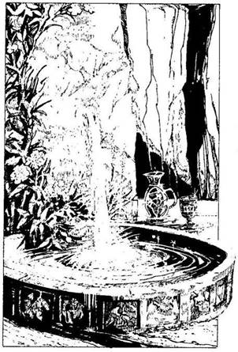
95.
A Legyek Urának pompásan csillogó testét megkerülve odamész a szökőkúthoz. Egy hatalmas fehér szikla közepéből vastag sugárban ömlik a víz egy márványszegélyű medencébe. Futónövények tükröződnek az alázúduló víz sugarában, ott csillognak-villognak az örök nedvet adó vízben. Az egyik márványlapon, a medence szélén egy ezüstkancsó és egy kehely áll. A víz tiszta, hideg. Ha inni akarsz a medence vizéből - lapozz a 161-re. Ha úgy döntesz, hogy megtöltöd vízzel az ezüstkancsót - lapozz a 243-ra.
96.
Úgy látod, mintha a nő agyát valami megzavarta volna. Talán a Tudás Vize segít majd kitisztítani az elméjét. Átnyújtod neki az itallal teli üveget, melyet gondolkodás nélkül, közönyös arccal átvesz és egy szuszra kihörpint. Hirtelen megdermed, szemében megpillantod az értelem sugarát.
- Eleonóra vagyok, a boszorkány - szólal meg halk hangon. - Ikiru varázsolt el, és ő zavarta meg az elmémet! Tudok rólad, és küldetésed célját is tudom. A Csata Színhelyén ott leszek melletted, és segíteni foglak - mondja hálás tekintettel. Meghajol előtted, és elhagyja a tisztást. Jegyezd fel a Kalandlapodon, hogy Eleonóra, a Boszorkány a szövetségesed. Most pedig az ajtón át vissza kell térned a Középpontba. Menj vissza a 8-as pontra, és válassz újra, de ne feledd, hogy csak olyasmit választhatsz, amit eddig még nem próbáltál ki.
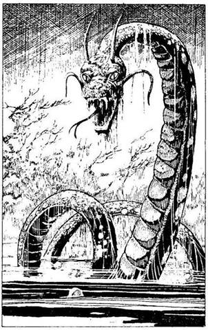
97.
A gázló közepén megcsúszik a lábad az alattomos iszapban. Már majdnem belezuhansz a tajtékzó fehér habokba, amikor lábaddal megkapaszkodsz egy hatalmas vízikígyóban, visszanyered az egyensúlyodat, és végigmész a túlpartra. Sajnos nem vagy elég fürge, és a kígyóknak sikerül lekapniuk rólad és a vízbe dobniuk a vértedet. Rád támadnak. Az első hárommal csapsz össze. Undorító úszóhártyás karmaik vannak, melyek ahányszor csak megtámadnak, 3 ÉLETERŐ pont veszteséget okoznak majd neked, mivel nem védi vért a testedet.
ÜGYESSÉG ÉLETERŐ
Első Kappa 8 14
Második Kappa 8 12
Harmadik Kappa 7 13
Ha sikerül valamelyik Kappa ÉLETERŐ pontjainak a számát 4-re vagy kevesebbre csökkentened - lapozz a 31-re.
98.
Egy alacsony földhányás tetején állsz. Körülötted hatalmas mocsár terül el, bugyborékolva fortyog bűzös iszap és sártenger. Torz alakú fák és növények igyekeznek kiszabadulni fogságukból. Egy ajtó lóg mögötted a levegőben - út vissza a Középpontba.
Hirtelen hatalmas kígyó emelkedik ki előtted a mocsártengerből. Rád emeli fekete gyémánthoz hasonló szemét, és fejét előrehajtva készen áll a támadásra, hogy kettéharapjon. Ha megvívsz vele - lapozz a 246-ra. Ha inkább valamelyik tárgyadat használod fel ellene - lapozz a 258-ra.
99.
Becsület pontjaid végképp elfogytak. Ahogy visszapörgeted az agyadban az eseményeket, attól a pillanattól kezdve,, hogy elindultál megkeresni a Daloló Halált, világossá válik előtted, hogy csaknem minden alkalommal tisztességtelenül jártál el. Becsület nélkül semmi sem vagy, életed mit sem ér. Egyetlen becsületes dolgot tehetsz. Szeppukut kell elkövetned, azaz önkezeddel kell véget vetned életednek. Minden bátorságodat összeszeded, és beledőlsz a katanádba. Legalább most az egyszer úgy viselkedtél, mint egy valódi Szamuráj!
100.
Peckesen mész át a palota udvarán, akár egy frissen kinevezett tábornok. A Shikomék bűzös avasvaj-szagot árasztva bárgyú tekintettel néznek. Amikor elmész mellettük, átnézel rajtuk, mintha Ott sem volnának, és felmutatod a Sógun jelvényét, abban reménykedve, hogy nem ismerik fel. Merész, gőgös viselkedésed teljesen megbolondítja a Shikomékat, és kecsesen tisztelegve beengednek a palotába. Lapozz a 158-ra.
101.
A szemtelen ifjú azt tanácsolja a többieknek, hogy varrják be a szádat, a füledet meg az orrodat, mielőtt megölnének, és Így szellemed nem tud majd kiszabadulni, hogy kísértsd őket. De a többiek úgy megijednek attól, amit a szellemek kísértéséről mondtál nekik, hogy szabadon engednek. Az ifjú vészjósló pillantásodat látva távozik. Apja, az öreg, görbe lábú faszénégető, a csontjaiban érzett fájdalomtól nagyokat nyögve, térdre borul előtted, és bocsánatodért esedezik fia sértő magatartása
miatt. A többiek is követik a példáját. Az öreg felajánlja, hogy elvezet egy biztonságos közeli faluba, ahol megszállhatsz éjszakára. Ha rákényszeríted őket, hogy hűségnyilatkozatot tegyenek, mielőtt továbbmennél - lapozz a 163-ra. Ha megparancsolod az öregnek, hogy vezessen a falu szentélyébe - lapozz a 179-re.
102.
A Dai-Oni felnevet, és hátralép. Misztikus szavakat mormolva Szerencsétlenség Varázslatot alkalmaz veled szemben. Vesztesz 1 SZERENCSE pontot! Menj vissza a 292-re, és küzdj tovább!
103.
Egy pillanatra minden elnémul körülötted, ahogy hason fekszel a kőpárkányon, majd hirtelen tompa morajlás hangzik fel a mélyből, és a föld ismét megremeg. Az erős rengés hatására a Sziklahegy oldala hangos reccsenéssel széthasad. A barlang nagy robajjal beszakad, és szürke szikladarabok röppennek szanaszét. Ha a barlangban kerestél volna menedéket, most a szikladarabok agyonzúztak volna. Lapozz a 273-ra!

104.
Megfordulsz, és visszamész a főútra. A környék elhagyatott szántóföldjei a védtelen falusiak jajkiáltásaitól zengenek. Vesztesz 1 Becsület pontot szívtelen viselkedésedért. Lapozz a 24-re.
105.
Nem üldöznek tovább, amikor sietve elhagyod a gázlót. Mivel nincs vérted, nélküle 2 helyett minden alkalommal 3 ÉLETERŐ pontot fogsz veszteni, amikor eltalálnak a harc során. A Sógun bajnokának férfiasabban, bátrabban kellett volna viselkednie. Vérted nélkül kevesebb reményed van rá, hogy siker koronázza küldetésedet és elvesztése miatt szégyent hoztál urad, a Sógun fejére, mert a vértet tőle kaptad. Vonj le magadtól 2 Becsület pontot, és lapozz a 263-ra.
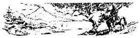
106.
Amikor kiértek a völgyből, hatalmas, félelmetes erdő széléhez értek. Az út úgy tűnik el benne, akár a kő a vízben. Azonnal rájössz: ez az Árnyak Erdeje, és keresztül kell mennetek rajta. Moichi halványan elmosolyodik, és így szól: - Mióta a Daloló Halált ellopták, csak rosszat hallottam erről az erdőről, uram! Mit gondol, muszáj nekünk…? - Te bólintasz, és csak ennyit mondasz: - Muszáj, Moichi - és egyenesen elindulsz az erdőbe. Lapozz a 124-re.
107.
A térkép szerint a bíborpagodába vezető ösvény a párafelhőben lévő tó mentén futó gát mellett visz nyugatra. Ha megpróbálsz az ösvényen a bíborpagodába menni - lapozz a 317-re. Ha nem - lapozz a 17-re, és válassz újra.
108.
Egy kis raktárhelyiséghez érsz. Egy ajtó a palota udvarára nyílik, egy másikon pedig be lehet jutni a palotába. Ha bemész a palotába, és megkeresed Tsietsint - lapozz a 158-ra. Ha magadra öltöd az őr vértjét, akit az imént öltél meg, és ezzel a csellel próbálsz kijutni a palotából a főkapun át - lapozz a 168-ra.
109.
Ikiru kardjából hirtelen sötét árnynyaláb csap ki, s úgy döfi át a testedet, akár a tű az anyagot. Bárhol ér, kínzóan éget. Hátratántorodsz, és üvöltesz a fájdalomtól, amikor a sötét nyaláb szitává szabdalja a testedet, és kioltja az életedet.
Amikor már halott vagy, testedet a Démonok Vermébe vetik, ahol Ikiru szolgájaként fogsz tovább létezni. Gazdád bármikor szólíthat, ha szüksége lesz rád.

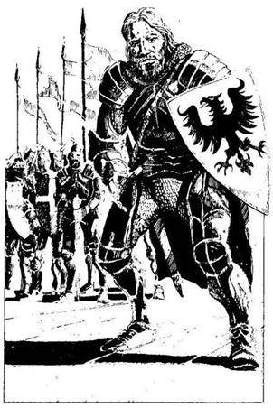
110.
Belépsz az „Örökkévaló Torony” elnevezésű ajtón. Hirtelen minden megváltozik körülötted. Egy erődítmény tetején állsz, harcosok vesznek körül. A környezet egyfolytában változik, az erdőt síkság váltja fel, a kék ég vörösbe borul, és így tovább. Olyan érzésed van, mintha a Torony egyik helyről a másikra egyik világból egy másikba hajózna át. Előtted egy jól megtermett harcos áll. Szakállas arca harcokban edzett, érett férfira vall. Páncélzata, mely tetőtől talpig beborítja, furcsa és ismeretlen számodra. Mögötte nyolc társa áll, arcukat lehúzott sisakrostély takarja. Vértjük aranyból van, fehér zubbonyukat kék karikák díszítik.
A férfi így szól: - Üdvözöllek az Örökkévaló Toronyban, versenyző. Az Aranyszázad lovagjai vagyunk, és ha azt akarod, hogy segítségedre legyünk a Síkok közti Lovagi Tornán, felelned kell a következő kérdésre. Visszaadod-e nekünk királyunk harci legyezőjét?
Ha van nálad egy harci legyező, melyen kilenc arany nyílvessző képe látható egy fehér alapon kék karikában - lapozz a 186-ra. Ha nincs ilyen legyeződ - lapozz a 200-ra.
111.
A legidősebb faszénégető, egy görbe lábú öregember a csontjaiban érzett fájdalomtól nyögve, nehézkesen térdre ereszkedik előtted, és alázatosan bocsánatodért esedezik, amiért a fia megsértett. Miközben felajánlja, hogy elvezet a közeli faluba, ahol biztonságban töltheted az éjszakát, társai mindannyian térdre borulnak előtted. Zord arckifejezésedet látva az öreg arra kér, vidd
magaddal a fiát rabszolgának, és tanítsd alázatra, csak meg ne öld. Ha rákényszeríted őket, hogy hűségesküt tegyenek, mielőtt továbbmennél - lapozz a 163-ra; ha megparancsolod az öregnek, hogy vezessen el a falu szentélyébe - lapozz a 179-re.
112.
Keskeny erdei ösvényen mész, mely az Árnyak Erdejének sűrűjében tekereg. A fák Oly közel nőttek egymáshoz, hogy a nap sugarai csak nagy nehezen tudnak áttörni a sűrű lombok között. Apró porszemek úsznak lassan a napsugár fénynyalábjaiban. Úgy érzed, mintha ébren álmodnál, csak távolról érzékeled az erdei hangokat. Hirtelen napfényben úszó tisztásra érsz. Megrázod a fejedet, hogy magadhoz térj, amikor furcsa hangra leszel figyelmes. Amikor felnézel, a fejed fölött egy hatalmas sárkányt veszel észre. Éppen feléd röpül. Hosszú, kígyószerű, tekergőző teste van, melyhez négy, hatalmas karmokban végződő láb társul. Nincs szárnya, és úgy látod, mintha járna a levegőben. Ez a Tatsu, a szárny nélküli sárkány, mely levegőben, földön, vízen egyaránt képes járni. Épp előtted landol, néhány méterrel a föld felett. Borostyánkő szeme jóindulatot tükröz, majd mély, zengő, erőt és tudást sugárzó hangon így szól:
- Üdvözöllek az erdő szívében, halandó! Én vagyok itt a gondnok, és néhány égi törvény kötelez. - Úgy látod, mintha rád mosolyogna, ha a sárkányok képesek egyáltalán mosolyogni! - Két találós kérdésre kell válaszolnod. Ha jól felelsz, átmehetsz az erdőn. Ha nem, akkor… akkor megeszlek. És nem menekülhetsz el előlem. Senki sem mehet át ezen az erdőn biztonságban, csak akkor, ha előbb felel a kérdéseimre. - Ismét felnevet, mintha mi sem lenne ennél természetesebb. Lapozz a 2-re.
113.
Síri csend vesz körül, a köd még a hatalmas köveket nyaldosó víz hang ját is elnyomja Egyik kőről a másikra ugrálva alig távolodsz el a gáttól, amikor úgy látod, mintha a víz szintje egyszer csak emelkedni kezdene a közeli bazalttömbök között. A vízből hirtelen egy elképesztően nagy vadállat bukkan fel, s az általa felkorbácsolt habok lesodornak téged a kövekről. A Kraken kiemelkedik a vízből, és hatalmas csápjaival, melyek olyan vastagok, mint a tested, elkap, és begyömöszöl kitátott csőrébe. Csak az óriások merik használni az ehhez hasonló, óriás méretű töltéseket, de még ők is hoznak egy-két embert, hogy csillapítsák a Kraken étvágyát.
114.
Előveszed a sisakot. Úgy látod, mintha az ifjú nő valamilyen oknál fogva megzavarodott volna. Talán e sisak segít majd meggyógyítani. Felajánlod neki, hogy tegye a fejére, de összeszűkül a szeme a félelemtől. - Nem! - kiáltja rettegve, majd berohan a fák közé. Ha utánaeredsz - lapozz a 70-re. Ha nem, visszatérhetsz az ajtón át a Középpontba. Ebben az esetben lapozz vissza a 8-as pontra, és válassz újra, de ne feledd, csak olyasmit választhatsz, amit eddig nem próbáltál ki.

115.
Apró darabokra zúztad egy csomó helyi vénnek a fejét, de egyre több és több nyüzsög körülötted. Menekülnöd kell. Tedd próbára a SZERENCSÉDET! Ha SZERENCSÉD van - lapozz a 69-re. Ha nincs SZERENCSÉD - lapozz az 57-re.

116.
Berohansz a faluba. Az embereket rettegésben tartják Tsietsin Szamurájai, és néhány ház lángokban éli. Nem messze tőled zöldeskék zománcozott vértezetben egy Szamuráj épp ledöfött áldozatát fosztja ki. Ez szégyenletes lázadás, és a Szamurájok viselkedése undort kelt benned. Odalépsz a fosztogatóhoz, és borotvaéles kardod egyetlen suhintásával kettéhasítod. Nagyot jajdulva kileheli a lelkét. Az áruló Szamurájok közül néhányan felkapják a fejüket jajkiáltására, és hárman odarohannak hozzád. Egyikük felismer, és így szól: - A Sógun, azaz bocsánat, az ex-Sógun bajnoka vagy, ugye? Öljétek meg a rühes kutyát! - A Szamurájok, kardjukat vadul lengetve, rád vetik magukat. Egyszerre kell megküzdened mindhármukkal! Ha elsajátítottad a Karumidzsutszu tudományát, mind-
egyikük Támadóerejéből levonhatsz 1-et, de csak ennek a csatának az időtartamára. Nagyot ugorva átvetődsz rajtuk, miközben megpróbálod kivédeni kardcsapásaikat.
ÜGYESSÉG ÉLETERŐ
Első Szamuráj 6 7
Második Szamuráj 8 8
Harmadik Szamuráj 7 6
Ha mindhárommal végzel, lapozz a 154-re.

117.
Kardoddal belehasítasz a vízbe, hogy keresztülvágd a hálót, de a szörny sokkal gyorsabb, mint te vagy. A válladra hajítja a hálót, és leránt a nyálkás, csúszós szikláról, amelyen eddig is elég bizonytalanul billegtél. A kardodat már semmire sem tudod használni a víz alatt, ahol gyűrűbe zárnak a pikkelyes bőrű, zöld szörnyek. Már nem tehetsz semmit. A Kappák karmai közé kerültél, ahonnan nincs menekvés!
118.
A Dai-Oni örömében felüvölt, és Zavarodottság Varázslatot alkalmaz ellened. Vesztesz 1 ÜGYESSÉG pontot! Menj vissza a 292-re, és küzdj tovább.
119.
Hatalmasat ordítasz, amikor végre sikerül levágnod a lábadat, és kiszabadulsz fogságodból. A fájdalomtól majdnem eszméletedet veszted, s bódultan egy zsineget tekersz érszorítóként a lábad köré, hogy megakadályozd a további vérzést. Vesztesz 7 ÉLETERŐ pontot! Ha túlélted mindezt, az éjszaka hátralévő része iszonyú rettegések közepette telik el, mert a vérszag egy vadállatot csalt oda hozzád. A hajnali fényben rájössz, hogy tévedtél: nem erdei párduc, hanem egy olyan hiéna volt, amelyik a macskahangot utánozza. Teljesen értelmetlenül csonkítottad meg magadat, és most szégyenszemre vissza kell fordulnod, hisz kalandod itt véget ér.

120.
Iszonyatos patadübörgésre figyeltek fel, mely valahonnan kintről jön. Megállsz, majd épp akkor, amikor a dombra akarnál felrohanni, Tsietsin nagyúr húsz-egynéhány fős járőrcsapata bukkan fel előtted. Amikor megpillantanak, valaki elkiáltja magát, és elindulnak feléd. Elmenekülni már nem tudsz, és kezdetét veszi a csata. Hősiesen
harcolsz, sokat a másvilágra küldesz közülük, de nagy a túlerő. Moichit legnagyobb rémületedre kapásból megölik, mondván, hogy áruló - de te jól tudod, hogy ő közöttük az egyetlen igazán hűséges ember. Kisvártatva jó erősen megkötöznek, és egy ló hátára szíjaznak. Tsietsin nagyúr örülni fog majd ennek a kis zsákmánynak - jegyzi meg egyikük csípősen.
Abba a palotába visznek, amely mellett már egyszer elhaladtál utad során. A palota udvarára vezetnek, ahol Tsietsin nagyúr számos csatlósa gúnyolódva vesz körül. Kinevetnek. Szinte azonnal belöknek a várbörtön egyik kis cellájába. A foglár, egy bivalytermetű pasas, viseltes bőrmellényben, gúnyosan így szól: - Holnap reggel Tsietsin Sógun elé visznek. - Ezzel rád csapja a nehéz, vasveretű tölgyfa ajtót.
Egyedül vagy. Elvették a kardjaidat, de jobban sért a katonák kegyetlen gúnyolódása és megalázó elfogatásod. Vesztesz 1 Becsület pontot! Nincs mit csinálnod, meg kell várnod a reggelt. Lefekszel a priccsre, és elalszol. Lapozz a 316-ra.

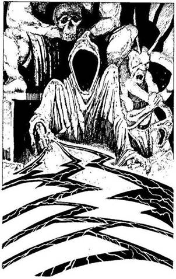
121.
Ott állsz Ikiru trónja előtt. Ellenfeled úgy emelkedik fel, akár egy árnyék. Benézel csuklyája alá, de csak a nagy űrt látod, a gonoszságot az arcán. Ikiru rád mutat, s ekkor sötét villám pattan ki az ujjai közül, és egyenesen feléd tart. Ha Becsület pontjaid száma 6 vagy ennél több - lapozz a 189-re. Ha Becsület pontjaid száma 5 vagy kevesebb - lapozz a 131-re.
122.
A lépcső aljában egy nyirkos, sziklába vájt alagutat veszel észre, melynek vége a sötétbe vész. Tedd próbára a SZERENCSÉDET! Ha SZERENCSÉD van - lapozz a 16-ra. Ha nincs SZERENCSÉD - lapozz a 38-ra.
123.
Pontosan annyi idő kellett hozzá, hogy nyiladat kiröpítsd az ifjú felé, amennyi idő alatt egy harkály kétszer megkoppantja a fa törzsét. A fiúnak nincs ideje félreugrani. Dobj két kockával! Ha a kapott összeg kevesebb, mint ÜGYESSÉG pontjaid száma, nyilad célba talált - lapozz a 207-re. Ha a kapott összeg ugyanannyi vagy nagyobb, mint ÜGYESSÉG pontjaid száma - lapozz a 351-re.
124.
Amikor beléptek az erdőbe, hirtelen nagyon magányosnak érzed magad. Hátrafordulsz, és Moichit nem látod sehol. Visszamész az úton, amerről jöttél, és ekkor megpillantod a völgy felé rohanó Szamurájt. Szemmel láthatólag az erdőtől való félelme túlnőtt irántad való hűségén. Átkozva gyávaságát továbbmész, befelé az erdőbe. Lapozz a 112-re.
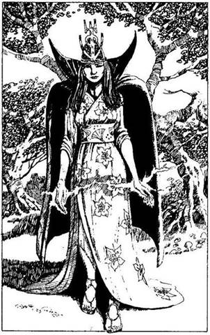
125.
A több kilométer hosszú kőgátat a deltában élt ősi civilizáció építette akkor, amikor e vidéket még nem borította be az örökkévaló köd. Egy idő múlva kanyargós ösvényhez érsz, mely a mocsár felé tart. Ha ezen az ösvényen mész tovább - lapozz a 339-re. Ha a kőgáton mész tovább - lapozz a 387-re.
126.
Benyitsz az „Elvarázsolt Erdő” elnevezésű ajtón, és bemész. Erdei tisztáson találod magad. Olyan néma csönd honol itt, mintha egyetlen erdei élőlény sem lakna erre. Szinte érzed a levegőben a varázslat illatát. Jól tudod, ha elindulnál ebben az erdőben, percek alatt eltévednél benne - lehet, hogy örökre. Mögötted egy ajtó lóg a levegőben, melyen át a Középpontba lehet jutni, s elhatározod, hogy megjegyzed magadnak. Ebben a pillanatban díszes zöld palástban gyönyörű ifjú nő jelenik meg előtted a tisztáson. Szépsége elbűvöl, de tekintete üres, közönyös, amikor rád néz, s ami a legfurcsább: villámhoz hasonló sistergő kék fénynyaláb cikázik két keze között. Arra kéred, mondja meg, ki ő, és megkérdezed, hogy megvéd-e a Dai-Oni ellen.
- Hogy ki vagyok én? - kérdezi vissza. - Azt én már nem tudom. Ami pedig a segítségemet illeti, azt nem könnyű kivívni - mondja, szemöldökét zavartan összehúzva, mint akinek nehezére esik a beszéd. Ha megtámadod, és rákényszeríted, hogy segítsen neked - lapozz a 60-ra. Ha inkább valamelyik tárgyad segítségével próbálod meg elérni a célodat - lapozz a 48-ra.
127.
Miközben a gázló széle felé tartasz, három pikkelyes bőrű zöld alak emelkedik ki a folyó vizéből, és nehézkesen kimászik a partra, éppen ott, ahol vérted egyes darabjait hagytad. Nagyobbak az embernél, fejük furcsán lapos, és járás közben úgy tesznek, mintha valami láthatatlan súlyt egyensúlyoznának a fejük tetején. Amikor megállsz, közvetlenül melletted két újabb szörny bukkan fel a vízből. Ha továbbrohansz, és biztonságosabb átkelőhelyet keresel magadnak - lapozz a 105-re. Ha lassan végigmész a kőgáton - lapozz a 73-ra. Ha odarohansz, ahol a pikkelyes bőrű szörnyek szedegetik össze a vérted darabjait - lapozz a 83-ra.
128.
Berohansz a faluba, és akkorát kiáltasz, amekkorát csak tudsz. Sok Szamuráj sereglik köréd. Nagyot néznek, amikor megmondod, ki vagy. Egyikük így szól: - Mi nem vagyunk többé Kihei Hasekawa szövetségesei! Az új Sógun, Tsietsin a mi urunk, az ő Szamurájai vagyunk. Rajta, párbajozz velünk! - Ott áll előtted, torkodnak szegezett kivont karddal. Három Szamurájjal kell megvívnod, akik egyenként állnak ki ellened. A Szamurájok tisztességesen küzdenek, de mégiscsak az ellenségeid.
ÜGYESSÉG ÉLETERŐ
Első Szamuráj 7 9
Második Szamuráj 9 8
Harmadik Szamuráj 7 9
Ha végzel mind a hárommal - lapozz a 190-re.
129.
Elkeseredett kísérleteket teszel, hogy kivédd a pikkelyes bőrű zöld szörnyek halálos csapását. Ha a kénköves trükkel próbálkozol - lapozz a 231-re; ha kitalálod különös, lapos fejükben megbújó gondolataikat - lapozz a 255-re, ha azt a látszatot kelted, hogy valamilyen varázslatot fogsz alkalmazni ellenük - lapozz a 277-re.

130.
Úgy látod, mintha a nő agyát valami megzavarta volna, de nem tudod, miképpen lehetne segíteni rajta. Ha megpróbálod erőszakkal rávenni, hogy segítsen neked - lapozz a 60-ra. Ha nem, visszamehetsz a hátad mögött lévő ajtón át a Középpontba. Ha azt teszed, lapozz vissza a 8-as pontra, és válassz újra, de ne feledd, csak olyasmit választhatsz, amit eddig még nem próbáltál ki.
131.
A villámok beléd vágnak, megperzselnek, megsebesítenek és rontást hoznak rád. Vesztesz 1 ÜGYESSÉG, 1 SZERENCSE és 4 ÉLETERŐ pontot! Ha még mindig életben vagy, megtántorodsz, és Ikiru boldogan szisszen fel. Rövid idő múlva azonban visszanyered eszméletedet, és a Daloló Halált lengetve rárontasz. Lapozz a 199-re.

132.
A folyosó elején valaki elkiáltja magát: - Hida, te vagy az? - Ám, amikor nem válaszolsz, az illető halkan káromkodik, és hallod rohanó léptei zaját. A fáklya fényében egy őr jelenik meg, és döbbenten néz rád. - Megszöktél? De hát hogyan…? - kérdezi, de a mondatot nem tudja befejezni, mert közben rátámadsz.
Őr ÜGYESSÉG 7 ÉLETERŐ 9
Ha legyőzöd - lapozz a 142-re.
133.
Egyre hallod a kattogást, amikor a falu elöljárójának feje elválik a nyakától és felröppen a levegőbe. A többi falusi feje az elöljáróé után száll. Rémülten
jössz rá, hogy ezek a Rokuro-Kubik, olyan élőhalottak, akiknek a feje éjszakánként a nyakuktól elválva vadászatra indul. A repülő fejek, állkapcsukat vadul csattogtatva, neked esnek. Úgy kell megküzdened velük, mintha egy sokfejű szörnnyel csapnál össze.
Rokuro-Kubik ÜGYESSÉG 11 ÉLETERŐ 17
Ha legyőzöd őket - lapozz a 115-re.
134.
Ha van egy fehér sastoll végű nyílvessződ, melyet Tsunewara készített, és ki is akarod lőni - lapozz a 192-re. Ha nincs, vagy nem akarod kilőni, egy közönséges nyílvesszőt veszel elő és azt lövöd ki - lapozz a 164-re.

135.
Az egyik faszénégető nedves tőzeget ránt elő a közeli faszénégető kemencéből, és hatalmas füstfelhő csap fel a felszított tűzből. Tedd próbára a SZERENCSÉDET! Ha SZERENCSÉD van - lapozz a 293-ra. Ha nincs SZERENCSÉD - lapozz a 307-re.
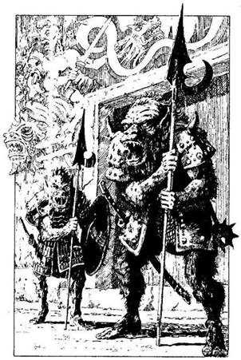
136.
Körülnézel. A falak mentén kaszárnyák, istállók és egyéb épületek sorakoznak. A palotaudvar túloldalán négyszögletes kőtorony áll, pagodára emlékeztető tetővel és faragott díszekkel. Ez Tsietsin nagyúr palotája. De nem is a palota, hanem inkább az ajtót támasztó két őr kelti fel a figyelmedet. Az őrök Shikomék, vagyis rút, emberszerű lények, de szőrösek, minta majmok, karmuk van, agyaruk és ormányos, félelmetes pofájuk. A Szamurájokéhoz hasonló páncélzatot viselnek, csakhogy a páncéljuk koszos, rongyos, fegyverük azonban szemmel láthatólag kitűnő minőségű. A Shikomék jelenléte azt sugallja, hogy Tsietsin Ikirunak, az Árnyak Urának a szövetségese. Tsietsin biztosan bent tartózkodik a palotában, és még soha nem volt ilyen fontos számodra, hogy megöld. Mit teszel most? Ha beöltözöl annak az őrnek a vértjébe, akit épp az imént tettél ártalmatlanná, majd Moichival odamész hozzájuk, és azt mondod, hogy üzenetet hoztál Tsietsin nagyúrnak - lapozz a 148-ra. Ha úgy teszel, mintha Moichi foglya lennél, és ő épp Tsietsin elé visz téged - lapozz a 160-ra. Ha elsajátítottad a Kjudzsutszu tudományát, próbáld meg elnémítani az őröket, olyan gyorsan és olyan halkan, amennyire csak lehet - lapozz a 170-re.
137.
Ünnepi köntösbe öltözött férfi, az udvari varázsló lép eléd az egyik rózsabokor mögül, és sugárzó arccal köszönt az Elvarázsolt Kertben. Közli veled, hogy csak akkor találsz vissza Hachiman földjére, ha iszol a forrásvízből. - Mindvégig az ösvényeken kell haladnod - teszi hozzá. - Itt a gonosz leselkedik rád, de ha célba érsz, jutalmad nem marad el. -
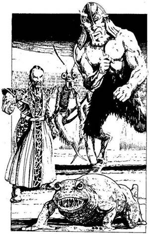
Amint e szavakat kimondja, füstfelhő veszi körül, és eltűnik. Ha az ezüst Szamuráj felé vezető ösvényt választod - lapozz a 379- re. Ha azon az ösvényen mész tovább, amelyik a papnő és a démon felé visz - lapozz 349-re.
138.
Elhatároztad, hogy szembeszállsz a Dai-Onival és szövetségeseivel. Kinyitod a „Csata Színhelye” elnevezésű ajtót, és belépsz rajta. Hatalmas aréna kellős közepén találod magad, de a lelátók üresek, és úgy érzed, mintha évezredek óta üresek lennének. Amikor megjelensz, a lelátókon szellemszerű tények kelnek életre, elmúlt korok emberei, férfiak és nők egyaránt. Csevegnek, hadonásznak, fogadásokat körnek a harc kimenetelére, mintha egy örökkévalóság óta, még halálukban is erre a pillanatra vártak volna. Az aréna homokos talaján állsz, s szövetségeseid, akiket Kalandlapodon előzőleg föltüntettél, valamennyien felsorakoznak mögötted. Egytől egyig bátorítanak, szavakkal vagy csak némán adják tudtodra segítőkészségüket. Ha nem tudtál magadnak szövetségeseket szerezni, egyedül kell kiállnod.
Előtted áll a Dai-Oni - lenyűgöző látvány, bár az arca iszonyú gonoszságot áraszt. Mögötte három szörny sorakozik: a szövetségesei. Az első egy irdatlan nagy, nyálkás, ragyás varangyos békához hasonló lény, amelynek a szája csaknem akkora, mint a feje. A másik egy hatalmas rovar, olyan mint egy óriás Imádkozó Sáska. Kitinpáncél feszül a testére, rágóit szörnyűségesen csattogtatja. A harmadik egy hatalmas termetű, két méternél magasabb, bronztestű, kecskelábú férfi. Zöld bőrét
ragyásra marta az idő. Vörös lánggal égő szeme erőt sugároz.
Dai-Oni tébolyultan kacag fel, és így szól: - Végre eljutottál a Csata Színhelyére, halandó, de élve nem kerülsz ki innen! Ők az én démon barátaim - mutat a mögötte állókra. - Graalsch, kapd be! - kiáltja. Az irdatlan nagy varangyos békához hasonló lény nagyokat ugorva indul el feléd. A szellemtömeg ordítva helyesel.
Ha nincsenek szövetségeseid - lapozz a 254-re. Ha vannak, azok parancsodat várják. Valahogyan megsejted, hogy az Aréna szabályai szerint egyszerre csak két lény csaphat össze. Kit küldesz a varangy ellen? (Természetesen csak azok közül választhatsz, akiket Kalandlapodon szövetségesként jelöltél!)
A Ki-Rint? Lapozz a 146-ra.
A Kardfogú Tigrist? Lapozz a 172-re.
Eleonórát, a Boszorkányt? Lapozz a 162-re.
Az Aranyszázadot? Lapozz a 184-re.
A Főnixet? Lapozz a 194-re.
A Tatsut? Lapozz a 208-ra.
A kígyómintás botot? Lapozz a 228-ra.

139.
Néhány percnyi heves kardcsörtetés után a vadállat csendben eltűnik, de te nem mersz elaludni, mert arra gondolsz, hátha visszatér. Az álmatlan éjszakáért veszítesz 2 ÉLETERŐ pontot. Lapozz a 151-re.
140.
Veszítesz 1 Becsület pontot ezért a nem igazán hőshöz méltó döntésért. Bemész a faluba, és íjadat készenlétben tartva, a fal mellett kúszva megközelíted az egyik házat. Kilesel a falu főterére, ahol menekülő falusiakat látsz, meg egy Szamurájt, aki épp egy halott öregembert foszt ki. Úgy döntesz, hogy a fűzfalevél nyílvesszőt lövöd ki rá. Dobj két kockával: ha a kapott összeg kevesebb, mint ÜGYESSÉG pontjaid száma - lapozz a 226-ra. Ha a kapott összeg ugyanannyi vagy nagyobb, mint ÜGYESSÉG pontjaid száma - lapozz a 240-re.
141.
Fejest ugrasz a folyóba, fogaid közé szorítod wakizasid pengéjét, de semmi hasznát nem veszed azon túl, hogy nálad van. Hirtelen hatalmas termetű, zöld színű, emberszerű lények vesznek körül. Ezeknek a hitvány pikkelyes szörnyeknek jókora úszóhártyás, karmokban végződő mancsuk van, mellyel megragadják a testedet, és a mélybe rántanak. Tehetetlen vagy. A Kappák kezébe kerültél, ahonnan nincs menekvés.
142.
Kardod lesújt, kettéhasítja az őr vállát, kulcscsontját és mellét, majd a szívébe hatol. Ellenfeledet vér borítja el, és azonnal kimúlik. Továbbfutsz. A
folyosó egy lépcsőfordulóban végződik, ahonnan lefelé is, fölfelé is mehetsz. Ha fölfelé mész - lapozz a 108-ra, ha lefelé - lapozz a 122-re.
143.
Végvonaglásában a pók tehetetlenül a hátára fordul. Mögötte ott feszül a hatalmas háló, és tátongó üregeket látsz. Jobb felől egy barlang, a hátad mögött az egyfolytában emelkedő vízszint. Ha belépsz a barlangba - lapozz a 91-re. Ha keresztültörsz a pókhálón - lapozz a 79-re.
144.
A Tatsut az erdőben nyerted meg magadnak. Felismer, és megáll előtted. Ha van egy sárkányformájú jade-amuletted - lapozz a 12-re. Ha nincs - lapozz a 166-ra.
145.
Menekülés közben észreveszed, hogy a falu elöljárójának a feje elválik a törzsétől, és lebegni kezd, csakúgy, mint minden más fej a faluban. Rémülten ismered fel, hogy ezek a Rokuro-Kubik, akik egyáltalán nem halottak, de a fejük éjszakánként elválik a törzsüktől, és vadászni indul. A repülő fejek feléd tartanak, rettenetes fogcsikorgás hallatszik. Noha már áttörtél a vének gyűrűjén, hamarosan a falubeli fejek tömegével kerülsz szembe. Föl kell venned a harcot velük, mintha egyetlen, sokfejű szörnnyel állnál szemben.
Rokuro-Kubik ÜGYESSÉG 11 ÉLETERŐ 17
Ha te győzöl, lapozz a 85-re.
146.
Megparancsolod a Ki-Rinnek, hogy támadjon. Felröppen, majd lecsap a varangyra, patája szikrákat vet. Graalsch, a varangyhoz hasonló lény, hatalmas szemét a Ki-Rinre mereszti. Szájat hirtelen nagyra tátja, felpattan a levegőbe, és kettéharapja a Ki-Rint, mielőtt az elmenekülhetne előle. A varangy visszaugrik a földre, és elégedetten majszolja a húst. A Dai-Oni vad nevetésben tör ki. Húzd ki Kalandlapodon a Ki-Rin nevét a szövetségeseid sorából! Nincs időd siránkozni elvesztése miatt: a varangyhoz hasonló lény most feléd tart. Ha nincs több szövetségesed - lapozz a 254-re. Ha van, melyiket küldöd most a varangy ellen?
(Természetesen csak azok közül választhatsz, akiket Kalandlapodon szövetségesként jelöltél.)
A Kardfogú Tigrist? Lapozz a 172-re.
Eleonórát, a Boszorkányt? Lapozz a 162-re.
Az Aranyszázadot? Lapozz a 184-re.
A Főnixet? Lapozz a 194-re.
A Tatsut? Lapozz a 208-ra.
A kígyómintás botot? Lapozz a 228-ra.
147.
Úgy teszel, mintha egy ruganyos lépéssel közelebb mennél a parasztokhoz, de izmaid hirtelen megfeszülnek, és legnagyobb megdöbbenésükre hatalmasat ugrasz előre. A legbátrabb épp fel akar ragadni egy dorongot a mellette lévő boksából, de kardod hegye beleáll a tőzegbe, és megakadályozza ebben. A faszénégetők rémülten állnak meg. A legidősebb, egy görbe lábú öregember, a csontjait szaggató fájdalomtól nagyokat nyögve
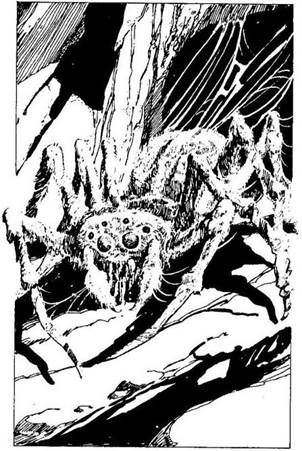
nehézkesen térdre ereszkedik előtted, és alázatosan a bocsánatodért esedezik, amiért a fia megsértett. Felajánlja, hogy elvezet a közeli faluba, ahol biztonságban töltheted az éjszakát. Zord arckifejezésedet látva arra kér, vidd magaddal a fiát rabszolgának, és tanítsd alázatra, csak meg ne öld. Ha rákényszeríted őket, hogy hűségesküt tegyenek, mielőtt továbbmennél - lapozz a 163-ra; ha megparancsolod az öregnek és a fiának, hogy vezessenek a falu szentélyébe - lapozz a 179-re.
148.
Az őr vértjébe öltözve Tsietsin nagyúr katonájának adod ki magad, és Moichival odamész a Shikomékhoz. Rezzenéstelen arccal hallgatják végig a mesédet. Egyikük horkant egyet és elvonul, hogy három társával térjen vissza. Odavakkantja neked, hogy Tsietsin nagyúr elé vezetnek. A három Shikome folyosókon és szobákon át vezet végig a palotában. Ha megtámadod az őröket - lapozz a 256-ra. Ha hagyod, hogy Tsietsin nagyúr elé vezessenek - lapozz a 180-ra.
149.
Csupán néhány göcsörtös fa és itt-ott egy-két mély gödör töri meg az esőáztatta föld egyhangúságát. Két, egymástól majdnem tíz méter lévő fa között furcsa háló feszül, és az utadat állja. Egy hatalmas üreg mélyéről hirtelen lapos, kör alakú sziklakő gurul feléd, majd egy óriási karolópók veti rád
magát. Magasabb, mint te vagy, és állkapcsa úgy csattog, mint az olló. Meg kell küzdened az életedért.
Totate Kumo ÜGYESSÉG 10 ÉLETERŐ 14
Ha te győzöl, lapozz a 143-ra.
150.
A Dai-Oni gonoszul mosolyog. - Mi sem egyszerűbb ennél, halandó! - mondja, és minden varázserejét összeszedve elrebegi a Szerencse Varázslat varázsigéjét. Nyersz 2 SZERENCSE pontot! - Szükséged lesz a szerencsére, de még az sem lesz elegendő - mondja, és meghal. Ha van egy Tatsut ábrázoló jade-talizmánod - lapozz a 220-ra. Ha nincs - lapozz a 270-re.
151.
Wakizasiddal reggel még mindig a csapda fogságában vagy, amikor a hátad mögül kiáltást hallasz. A faszénégetők jöttek vissza. Minden tekintélyedet összeszedve - már amennyire ebben a helyzetben ez lehetséges - megparancsolod nekik, hogy szabadítsanak ki. Meghányják-vetik egymás között, hogy mit csináljanak a fogságba esett Szamurájjal. A legnagyobb sikert az az ötlet aratja, hogy égessenek el élve az egyik faszénégető boksában. Az egyik közeli fát lehántolják, szemmel láthatólag azért, hogy legyen mivel megkötözni téged. Ha elmondod nekik, milyen fontos a küldetésed - lapozz a 89-re. Ha figyelmezteted a faszénégetőket, hogy egy életen át szellemek fogják kísérteni őket, ha megölik a Sógun bajnokát - lapozz a 101-re.
152.
Pillanatnyi habozás nélkül elkiáltod magad: - Harmónia! - Hangod úgy zeng, akár a trombitaszó, az árnyak csarnokának nyugodt félhomályában. Ikiru rémülten pattan vissza trónusára. - Nem! - kiáltja reszelős hangon, mintha kréta csikorgott volna egy palatáblán. A sötétben fénycsóva pattan ki a kardból, és Ikiru hirtelen még jobban csuklyája mögé rejti eddig is láthatatlan arcát. A fény olyan hirtelen hunyt ki, amilyen gyorsan felvillant. A Daloló Halál méltóságteljesen emelkedik a levegőbe, és iszonyú gyorsasággal röpül feléd, egyenesen kinyújtott kezedbe, majd, mintha csak üdvözölne, a markodba simul. Szinte abban a pillanatban érzed a hatását: testedet erő járja át, majd kicsattansz az egészségtől. Nyersz 2 SZERENCSE, 2 ÜGYESSÉG és 4 ÉLETERŐ pontot, még akkor is, ha ezek az extra pontok túlszárnyalják a Kezdeti értékeket. Egy percig mereven állsz, amíg a testedben szétárad az életerő. Ekkor a csuklyás alak egyetlen intésére egy árny úszik elő a veremből, és a szemed láttára kezd alakot ölteni. Emberformájú ugyan, de fején szarvak vannak, és vastag karmokban végződik a mancsa. Ez maga az Árnydémon, egy alvilági lény, amelynek a teste részben anyag, részben köd. Ha Becsület pontjaid száma 5 vagy ennél több - lapozz a 274-re. Ha 5-nél kevesebb - lapozz a 174-re.
153.
A Rokuro-Kubi koponyájának apró szilánkjai körülötted hevernek. Bár az éjszaka sötét, mégis elég jól látsz ahhoz, hogy elmenekülj az Élőholtak Falujából. Növeld SZERENCSE pontjaid számát 1-gyel, amiért megmenekültél a faluból. Lapozz a 397-re.
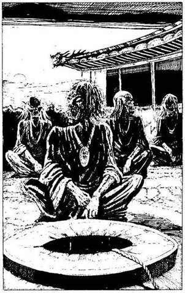
154.
Az utolsó is holtan esik össze előtted. - Na gyerünk, hadd végezzek mindnyájatokkal! - kiáltod merészen. Amikor a Szamurájok látják, hogy három társuk holtan hever a Sógun elszánt bajnokának lábai előtt, sarkon fordulnak és elmenekülnek. Lapozz a 176-ra.
155.
Amikor a nap végre lebukik a dombok mögött, és sötétedni kezd, az idősebbek beszéde egyre értelmetlenebbé válik számodra. Furcsa csattogásra ébredsz, mintha kasztanyetta hangját hallanád. Észreveszed, hogy az elöljárók nyitogatják féktelen gyorsasággal állkapcsukat. A csattogás egyre erősödik, már mindenfelől hallod. Ha rémülten elmenekülsz - lapozz a 145-re. Ha megvárod, míg elhalkul a különös ének, mely előcsalta őket - lapozz a 133-ra.

156.
A különös teremtmény, vészjósló sárga fénnyel a szemében, lecsap melletted, és nagyra tátott szájából keskeny lángnyelv lövell ki rád. Lehajolsz, de közben elveszted az egyensúlyodat, és lezuhansz a csúcsról. Vesztesz 4 ÉLETERŐ pontot! Ha még mindig életben vagy, a Tatsu újabb támadásba lendül. Mivel ebből a helyzetből képtelen vagy harcolni ellene, úgy döntesz, hogy odamész a
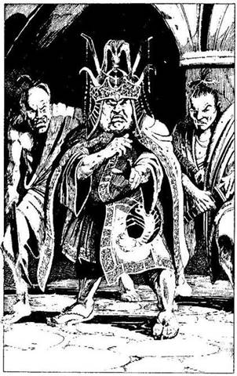
mögötted csüngő ajtóhoz és visszatérsz a Középpontba. Lapozz vissza a 8-as pontra, és válassz újra, de ne feledd, hogy csak olyasmit választhatsz, amit eddig még nem próbáltál ki.
157.
Tengernyi sok hosszú, vékony sás nő ott, ahova visszamentél. Egy ideig még tudtál haladni közte a mocsárban, de most már végképp elvesztened a tájékozódó képességedet, és fogalmad sincs, merre lehet az ösvény. Rossz irányba mész, és elnyel a mocsár. Minél jobban harcolsz ellene, annál mélyebbre süllyedsz az ingoványban. Ikiru fog uralkodni Hachimanban.
158.
Végigrohansz a palota egyik hosszú folyosóján, és csakhamar eltévedsz a többnyire üres folyosók és szobák útvesztőjében. Csupán a szolgák és rabszolgák teszik a dolgukat, és döbbenten merednek rád. Amint befordulsz az egyik sarkon, az eléd táruló látványtól a földbe gyökerezik a lábad. Egyenesen Tsietsin nagyúrba botlottál, aki egy-egy Szamurájával az oldalán totyogva közeledik feléd a folyosón. Tsietsin testes, köt vér ember, dagadt, párnás pofazacskója, lefittyedő, hatalmas szája van. Két malacszemét felháborodottan mereszti rád. Többrészes kimonó van rajta, fölötte hatalmas aranylevelekkel díszített palást. Fején büszkén viseli a Sógun rangját jelképező fejdíszt.
Mikor fölismer, ijedten zihálva jelt ad testőreinek, sarkon fordul, és eldübörög. A Szamurájok kardot rántanak, meghajolnak előtted, és rád támadnak. Lapozz a 302-re.
159.
Egyre gyorsabban lépkedsz, s lábad megcsúszik a veszélyes zöld nyálkán. Tedd próbára a SZERENCSÉDET!, de adj hozzá 1-et a dobott számhoz, mivel a gázlón megfontolás nélkül kelsz át, nem számolva a veszéllyel. Ha SZERENCSÉD van - lapozz a 283-ra. Ha nincs SZERENCSÉD - lapozz a 323-ra.
160.
- De uram, ki hinné el, hogy fogságban tarthatnék egy olyan tiszteletre méltó személyt, mint Ön! - kiált fel Moichi. Gyanakodva nézel rá, aztán megparancsolod, hogy tegye a dolgát. Átadod neki a fegyvereidet. A nyakadnál és a lábadnál fogva megragad, majd elindul veled. Nem tudsz mit tenni, de érzed, hogy Moichi örömét leli a dologban. A két Shikome bután néz rád, miközben Moichi elmeséli nekik a történetedet. Az egyik őr morog valamit, majd félelmetesen rád vigyorog, mielőtt elcsoszogna. Három barátjával fér vissza; egyik rondább és büdösebb, mint a másik. Ezek hárman vezetnek a palotába. Az egyik odamorogja Moichinak: - Még egy kis sport a mesternek - majd gonoszul a bordáid közé rúg. Vesztesz 2 ÉLETERŐ pontot! - Az biztos, hogy jól meg fogják kínozni! - feleli Moichi, rád kacsintva. Ha megvárod, míg Tsietsin elé vezetnek - lapozz a 180-ra. Ha megparancsolod Moichinak, hogy engedjen szabadon, és közös erővel támadtok Shikomékra - lapozz a 204-re.
161.
Kiszáradt szájjal hajolsz a frissítő vizű medence fölé, és nagyot kortyolsz a Tudás Vizéből. Agyad megvilágosodik. Hirtelen mindenre tudod a választ, mintha te lennél az isten. Fenséges érzés, ezért képtelen vagy megállni, hogyne igyál még többet a vízből. A tudástól egészen megrészegülsz. Mindent tudsz, amit egy alkimistának, az udvar legbölcsebb tudósának és más szakembernek tudnia kell. Tudásszomjad kiolthatatlan, és egyre csak iszol, iszol; s még mindig nem elég: beleveted magad a medencébe, és elmerülsz a tudás vizében, melytől megmámorosodsz, és végül ott leled a halálodat.
162.
Megparancsolod Eleonórának, hogy álljon ki a varangy ellen. Nekilendül, ujjai között kék villám cikázik, de a Varangy Démon iszonyatos gyorsasággal pattan fel, mielőtt a nő bármit is tehetne, majd hatalmas száját nagyra tátva bekapja és lenyeli. Rémülten hátrálsz. Húzd ki a Kalandlapodon Eleonóra nevét a szövetségeseid névsorából. Ha már nincs több szövetségesed - lapozz a 254-re. Ha még vannak segítőid, kit küldesz a Varangy Démon ellen? (Csak azokat küldheted, akiket a Kalandlapodon szövetségesként jelöltél!)
A Ki-Rint? Lapozz a 146-ra.
A Főnixet? Lapozz a 194-re.
A kígyómintás botot? Lapozz a 228-ra.
163.
Miután az emberek hűségesküt tesznek, közlöd velük, hogy a Sógun akaratának megfelelően kegyelemben részesíted őket, nem oltod ki az életüket. Növeld Becsület pontjaid számát 1-gyel. Ha
megparancsolod az öregnek, hogy vezessen el a falu szentélyébe - lapozz a 179-re. Ha inkább egyedül folytatod az utadat - lapozz a 195-re.
164.
A nyílvessző egyenesen beleáll a csontvázba. Hátratántorodik, de más nem történik vele. Újabb nyílvesszőt lősz ki, de az elszáll a két lába, azaz két lábszárcsontja között. A többi csontváz már majdnem felmászott a hídra. Nincs több időd. Lapozz a 242-re.
165.
Mielőtt elindulnál a Hammurabi szobrához vezető ösvényen, tanácsot kérsz az ezüst Szamurájtól, de az néma marad, egy szót sem szól. A varázsló ismét előbukkan a levegőből, és a Legyek Urának szobra húszméteres szárnyait meghajlítva rád emeli óriási, csillogó, összetett szemét. Hatalmas zümmögés támad körülötted, és legyek tömkelege támadja meg a szemedet és bőrödet. Hammurabi szolgái jöttek, hogy megvédjék urukat. A legyek egyre sűrűbb tömegben támadnak, már majd megfulladsz tőlük, amikor Hammurabi lecsap rád. Szemmel láthatólag úgy döntött, hogy a fejed finom falat lesz a számára, és már nem állíthatod meg…

166.
A Tatsu mennydörgő hangon így szól: - Azt hitted, megölhetsz, mi? De az én hatalmam sokkal nagyobb, mintsem gondolnád, halandó! - Szemében vészjósló narancssárga fény villan, közelebb röppen hozzád, nagyra tátja a száját, és tüzet akad rád. Lehajolsz, de elveszted az egyensúlyodat, s miközben jól megperzselődsz, lezuhansz a csúcsról. Vesztesz 4 ÉLETERŐ pontot! A Tatsu újabb támadásba lendül. Felméred lehetőségeidet, és úgy döntesz, hogy ebből a helyzetből nincs értelme tovább küzdeni. Kinyitod a hátad mögött a levegőben lógó ajtót, és visszatérsz a Középpontba. Menj vissza a 8-as pontra, és válassz újra, de ne feledd, csak olyasmit választhatsz, amit eddig még nem próbáltál ki.
167.
Két perc sem kell hozzá, és megszabadulsz a vértedtől. Minden erődet megfeszítve darabonként kihajigálod a túlsó partra. Legnagyobb meglepetésedre egy pikkelyes bőrű zöld kar emelkedik ki a vízből, és röptében elkapja a mellvértedet, majd óvatosan lehúzza a víz alá. Elvesztetted a mellvértedet. Ha beleveted magad a folyóba, hogy visszaszerezd - lapozz a 141-re. Ha a kőgáthoz futsz, a fehér víz mentén - lapozz a 127-re.
168.
Kilépsz a szikrázó napfényre. Az udvar tele van sürgő-forgó emberekkel - kereskedőkkel, kézművesekkel, katonákkal és másokkal -‚ de ügyet sem vernek rád, amint lassan a kapu felé sétálsz. Úgy vágsz át az udvaron, mint akinek határozott célja
van, így senki nem fog gyanút. Áldod a szerencsédet, és sietve indulsz el a főút felé, ahol északnak fordulsz, az Árnyak Erdeje felé. Csakhamar egy erdő borította dombok között meghúzódó völgybe érsz. Lapozz a 386-ra.
169.
Tengernyi sok hosszú, vékony sás nő ott, ahová visszamentél. Egy ideig még tudtál haladni közte a mocsárban, de most már végképp elvesztetted a tájékozódó képességedet, és fogalmad sincs, merre lehet az ösvény. Merészen nekivágsz az egyik sássornak, és csakhamar egy esőfüggöny mögött rejtőző alacsony domb tűnik fel előtted. Amikor a talaj emelkedni kezd a lábad alatt, és egyre inkább magad mögött hagyod a vizet, akkor veszed észre, hogy a mocsár összes teremtménye - patkányok, mocsári szalamandrák, Sőt még az óriás sárkánygőte is, mely, Úgy látszik, fél bekapni téged - Ugyanazon az ösvényen menekül a dagály elől, amelyiken te. Lapozz a 149-re.
170.
Úgy döntesz, hogy a bélfürkész nevű nyílvesszőidet használod, mert ezek a leghatásosabbak. Előveszel egyet, és megcélzod vele a hozzád legközelebb álló Shikomét. Dobj két kockával! Ha a kapott összeg kevesebb, mint ÜGYESSÉG pontjaid száma - lapozz a 232-re. Ha a kapott összeg ugyanannyi vagy több, mint ÜGYESSÉG pontjaid száma - lapozz a 244-re.
171.
Az utolsó pillanatban kardoddal a zöld vízbe suhintasz, és átvágod a hálót, majd hihetetlen gyorsasággal ismét döfsz. Kardod hegye beleáll a pikkelyes bőrű zöld szörny arcába, mely bíborvörössé válik, és elmerül a véresen bugyborékoló vízben. A másik tovább kutat a gázló vizében, és minden lépésedre ügyelve épphogy sikerül kiérned a túlpartra. Lapozz a 395-re.
172.
A tigris vészjósló hangon üvöltve nekilendül. A varangyhoz hasonló lény elbizonytalanodik, és hátraugrik. Graalsch, a Varangydémon előreszegett fejjel támad, hatalmas pofáját kitátva a tigris után kap, de az hihetetlen fürgeséggel elugrik előle, és karmokban végződő hatalmas mancsával kettétépi a jajveszékelő varangyot. Miután elvégezte a feladatát, a tigris felszökken a levegőbe, és eltűnik a szemetek elől, mintha egy másik síkra ugrott volna át. Húzd ki a nevét a Kalandlapodon feltüntetett szövetségeseid sorából. A Dai-Oni dühösen felordít majd így kiált: - K’rllk - öld meg ezt az emberfélét! - mire az Imádkozó Sáska Démon rohanvást elindul feléd. Ha már csak egyedül vagy - lapozz a 266-ra. Ha még vannak segítőid, kit küldesz a Démon ellen? (Csak azokat küldheted, akiket Kalandlapodon szövetségesként jelöltél!)
A Ki-Rint? Lapozz a 278-ra.
Az Aranyszázadot? Lapozz a 304-re.
A Tatsut? Lapozz a 294-re.
173.
Amikor menekülni próbálsz, az egyik pikkelyes bőrű zöld szörny háromágú szigonyt röpít feléd. Tedd próbára a SZERENCSÉDET! Ha SZERENCSÉD van - lapozz a 225-re. Ha nincs SZERENCSÉD - lapozz a 257-re.
174.
Le kell győznöd az Árnydémont. Nem úgy fest, mintha a Daloló Halált zavarná, hogy a démon testetlen - ő nemcsak húst aprít, hanem árnyakat is.
Árnydémon ÜGYESSÉG 9 ÉLETERŐ 10
Ha legyőzted, lapozz a 212-re.
175.
Az asszony nem válaszol. Megfordulsz és ránézel. Furcsán, Zavartan bámul rád. Fogai vacognak a félelemtől, mintha beszélni próbálna, de nem tud. Végül kinyögi: - Menj. Menj el a faluból. - Ha úgy véled, ennyi hála kevés azért, amiért segítettél neki, s ott maradsz, hogy megedd a kását és lepihenj - lapozz a 203-ra. Ha mégis elmész a faluból - lapozz a 15-re.
176.
A falusiak kirohannak a házaikból és rejtekhelyeikről. Néhányan boldogan kiáltoznak, mások siratják elvesztett barátaikat és rokonaikat. Miközben sok falusi hozzálát a tűzoltáshoz, a vének csoportja közeledik feléd. Egyikük mélyen meghajolva ezt mondja: - Én vagyok Ninji, a falu elöljárója. Szeretnénk hálásan megköszönni nemes cselekedetedet. Hachimanra rossz idők járnak, de szerencsére akadt valaki, aki úgy viselkedett, ahogy egy Szamurájhoz illik. Uram, fogadd el tőlem ezt az ajándékot. - Ezzel átnyújt neked egy selyemből készült vörös fejkendőt, melyen egy fekete, háromküllős kerék képe látható. - Ez Shinmennek, Hachiman legendás hősének a fejkendője. Shinmen a mi
falunkból származott el. A kendőt évszázadok óta őrizzük. - Úgy érzed, óriási megtiszteltetés ért, hiszen Shinmen valóban nagy hős volt. Nyersz 1 Becsület és 1 SZERENCSE pontot.
Ebben a pillanatban menet indul el felétek a közelből: haragos, gyűlölködő kiáltásokat hallani. A falusiak egy csoportja rábukkant egy sebesült Szamuráj támadóra, és most feléd vonszolják. Azt kiabálják, hogy „Öld meg, öld meg, öld meg!”. Az elöljáró meghajol előtted, és így szól: - Kérlek, szabadíts meg bennünket ettől a gonosz gyilkostól, uram! - A Szamuráj védtelenül hever előtted. Vékonydongájú fiatalember, a homlokát véres kötés fedi. Dacosan néz rád. Eltökélte, hogy nem mutat félelmet. Ha megölöd a Szamurájt, ahogy azt a falusiak kívánják - lapozz a 238-ra. Ha nem bántod - lapozz a 250-re.
177.
Ahelyett, hogy éjszakára nyugovóra térnél, kisétálsz a házból, és bemész a faluba. A vének találkozója éppen most kezdődik a falu elöljárójának a házában. Sötétedik. Ha távozol a faluból - lapozz a 15-re. Ha csatlakozol a vénekhez - lapozz a 319-re.

178.
- Ne ölj meg, nagy harcos, ne ölj meg! - rimánkodik Tsietsin. - Ikiru kényszerített rá, hogy a törvényes Sógun ellen forduljak. Bocsáss meg. Mostantól fogva hűséges alattvalója leszek. - Mindez átlátszó hazugság. Amint lenézel rá, csak megvetést és gyűlöletet érzel iránta. Tsietsin szeme ősszeszűkül, arcára ravasz gonoszság ül ki. Jobb keze meglendül, és egy tűhegyes tőrt repít a combodba. Vesztesz 3 ÉLETERŐ pontot. Ha még életben vagy, meglepetten hőkölsz hátra, erre ő kardot ránt. - Légy átkozott, te disznó! - üvölti, és rád támad. Le kell győznöd Tsietsin nagyurat.
Tsietsin Nagyúr ÜGYESSÉG 7 ÉLETERŐ 11

Ha legyőzöd - lapozz a 322-re.
179.
Megparancsolod az öregnek, hogy vezessen a faluba, és elindulsz vele ki, a faszénégetők erdejéből. Elbúcsúzik a fiától, és alázatosan indul el veled a kacskaringós ösvényen, melyen csakhamar eljuttok a Kanshuro völgyébe. Gyönyörű vidék ez, az erdővel borított fennsíkokat békés völgyek szövik át, melyek szinte észrevétlenül húzódnak meg
a folyók vájta mészkősziklák között. Alkonyatkor egy ösvényen leereszkedtek a Tinshu völgyébe, egy kicsiny, festőien szép faluba. Épp odafordulsz az öreghez, hogy megtudakold a falu nevét, amikor az összeesik és elterül a földön. Megpróbálod magához téríteni, de a szíve felmondta a szolgálatot. Az öreg meghalt. Lapozz az 5-re.

180.
A palota fogadótermébe visznek, ahol nyomban rájössz, hogy hibáztál. Tsietsin nagyúr, ez a kövér, disznóhoz hasonlító ember szemben ül veled, de a falak mentén körben Szamuráj harcosok sorakoznak. Több mint hatvanan vannak, sokan közülük Shikomék. Az egyik rád ismer: a faluban látott. A szamurájkardok pillanatok alatt széthasítanak Moichival együtt.

181.
A vízszint egyre magasabb lesz, és mind nehezebben tudod követni a mocsaras vidéket átszelő biztonságos ösvényt. Bármikor elvétheted a lépést, és elnyelhet a bűzös mocsár. Tedd próbára a SZERENCSÉDET. Ha SZERENCSÉD van - lapozz a 169-re. Ha nincs SZERENCSÉD - lapozz a 157-re.

182.
Szétteríted a vaslegyezőt. Gyönyörű kép bontakozik ki a szemed előtt: egy jelvény, amelyet a legyező lapjaira festettek, s amelyet nem ismersz ugyan fel, de tudod róla, hogy nagyot régi. Fehér alapon kilenc arany nyílvessző mutat egy kék kör belseje felé. Talányosnak véled az egészet, összecsukod a legyezőt, és elteszed a hátizsákodba. Ha a fejedre teszed a sisakodat, amennyiben még nincs rajtad - lapozz a 210-re. Ha iszol az üvegből, amennyiben eddig nem ittál volna - lapozz a 196-ra. Ha kimész a barlangból - lapozz a 222-re.
183.
Hátadat a fa törzsének támasztva ismét támadásba lendülsz. Elkeseredetten kell küzdened, hogy kivédd a pikkelyes zöld szörnyek halálos csapásait. Ha a kénköves trükköt alkalmaznád - lapozz a 231-re, ha valamire rájöttél volna furcsa, lapos fejük láttán, lapozz a 255- re. Ha úgy teszel, mintha valamilyen varázslatot alkalmaznál ellenük - lapozz a 277-re.
184.
Az Aranyszázad Lovagjai hangos csatakiáltást hallatva katonás rendben indulnak rohamra. Egyenes kardjaik és buzogányaik egyszerűen lepattannak a Varangy Démon bőrszerű páncéljáról. Graalsch kegyetlen pontossággal csap le: fejét rendkívül gyorsan mozgatva, percek alatt harapja ketté a lovagokat. Mind elpusztulnak. Döbbenten állsz hihetetlen ereje láttán. Húzd ki Kalandlapodról a lovagokat! Graalsch feléd fordul, és hatalmas ugrásokkal feléd tart. Ha már csak egyedül vagy, szövetségesek nélkül - lapozz a 254-re. Ha még vannak segítőid, kit választasz? (Csak azok közül választhatsz, akik kalandlapodon szerepelnek!)
A Tatsut? Lapozz a 208-ra.
A Kardfogú Tigrist Lapozz a 172-re.
A Ki-Rint? Lapozz a 146-ra.

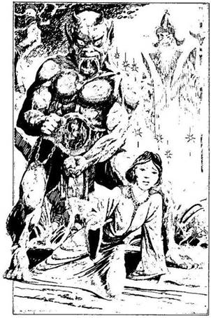
185.
Az ezüst Szamuráj eltökélten lépdel melletted a démon és a fogoly papnő ikerszobra felé. A varázsló ismét előbukkan a semmiből, és a szobor - a fekete bőrű, vörös szarvú démon meg a sápadt papnő - életre kel. A papnő a lábad elé veti magát, és térden állva könyörög, hogy mentsd meg őt a Démonok Verméből, de fogvatartója kegyetlenül ránt egyet a láncon, és a nő a földre zuhan. Az ezüst Szamuráj a Régmúlt Idők Csatakiáltását hallatja, és a démont elfogja a rémület. Óriási harc alakul ki kettejük között, de még a démon ördögi hatalma sem ér semmit a cikázó Szamurájjal szemben. A démon elpusztul. A lánc eltűnik, és az ezüst Szamuráj kicsiny ezüstcsomóvá zsugorodik össze. A papnő a kezedbe teszi a kezét. - És most merre, bátor megmentőm? - Merre indulsz? Ha a Tengeri Sárkány szobra felé mész - lapozz az 55-re. Ha Hammurabinak, a Legyek Urának a szobra felé indulsz el - lapozz a 75-re.

186.
Előveszed a harci legyezőt. A lovagnak elakad a lélegzete a meglepetéstől. - Hát nálad van! - kiáltja, és térdre borul előtted, amikor átadod neki a legyezőt. Társai követik a példáját.
- Ha majd a Csata Színhelyére érsz, mi is ott leszünk, és segítünk neked a harcban - mondja. - Régóta keressük ezt a csodálatos legyezőt!
Hirtelen a Középpontban találod magad, ahol csillagok vesznek körül, és nyolc ajtó. Kalandlapodon
jelöld, hogy az Aranyszázad Lovagjai a szövetségeseid! Lapozz vissza a 8-as pontra, és válassz újra, de ne feledd, hogy csak olyasmit választhatsz, amit eddig még nem próbáltál ki!
187.
Sietve indulsz el, de most ellenkező irányba, mint amerről a faluba jöttél. Ügy látod, senki sem vette észre, hogy távozol, és mindjárt felszabadultabban lélegzel. Hirtelen megpillantod az öreg faszénégetőt, aki korábban a faluba vezetett. Eddig azt hitted róla, hogy meghalt, hiszen élettelen testét a falu másik végén hagytad, de íme itt van, és rád vigyorog egy fal mögül. Elindulsz felé, de nyomban megállsz, mert látod, hogy a feje elválik a törzsétől, és felröppen a levegőbe. Még egy Rokuro-Kubi! A fej fekete méreggömböket köpköd, amelyek zúgva és füstölve csapódnak az arcodhoz. Elveszíted az eszméletedet. Veszítesz 2 ÉLETERŐ pontot. Harcba kell szállnod a Rokuro-Kubival, miközben az csapongva szálldos a légben.
Rokuro-Kubi ÜGYESSÉG 7 ÉLETERŐ 8
Ha legyőzöd - lapozz a 153-ra.
188.
A Dai-Oni gonoszul elmosolyodik. Egyszerűen győzd le egy csatában - mondja, és vad kacagásba kezd, de hirtelen elhallgat, s a szemed láttára múlik ki. Ha van egy Tatsut ábrázoló jáde-amuletted - lapozz a 220-ra. Ha nincs - lapozz a 270-re.
189.
A Daloló Halál hirtelen még egyet villan, és a fekete villám eltűnik, kioltja a nagy fényesség. Ikiru hátratántorodik, de a fény olyan gyorsan hunyt ki, amilyen gyorsan felvillant. Lapozz a 199-re.
190.
Az utolsó holtan zuhan a lábad elé. Számítasz rá, hogy egy másik lép a helyére, de egyik Szamuráj sem mozdul. A falusiak házaikban lapulnak, rémülten és reménykedve szemlélik az eseményeket. Egy-két Szamuráj kényszeredetten elsompolyog. Kardforgató tudományod elijesztette őket. Egyikük így szól: - Valóban a kard nagymestere vagy, és nagy tiszteletet vívtál ki magadnak errefelé. Mivel jól harcoltál, mi most elmegyünk, megkíméljük az életedet. - Szavai udvariasak ugyan, de érzed, hogy nem azért távoznak, mert annyira tisztelnek, hanem inkább azért, mert félnek tőled. Oly gyorsan tűnnek el, amilyen gyorsan csak tudnak, és te túl fáradt vagy ahhoz, hogy kövesd őket. Nyersz egy Becsület pontot, mert szembeszálltál velük és megvédted a falut - lapozz a 176-ra.

191.
Az asszonya válladra teszi a kezét, rámutat a zabkására és a matracra, majd besiet a saját kis hálószobájába, miközben a lenyugvó nap vörösre festi az eget. Ha el akarod hagyni a házat, miután befejezted a javítást - lapozz a 177-re. Ha eszel, majd lefekszel aludni - lapozz a 203-ra.
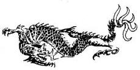
192.
A nyílvessző egyenesen a mellébe fúródik. Az élőholt Szamuráj iszonyút sikolt, és a földre zuhan, ahol a nyílvesszővel együtt elporlad. Csak hamu marad belőlük. Ezt követően valamennyi csontváz visszahúzódik a folyóba, és alámerül a vízbe. A vörös vér eltűnik a folyó felszínéről, és az ég kivilágosodik.
Átsétálsz a hídon, és alaposan átvizsgálod a hamutömeget. Egy elefántcsontból készült kürtöt találsz a hamvak között, amelyet egy kardfogú ezüsttigris képmása díszít. Magadhoz veszed a kürtöt, és továbbsétálsz. Lapozz a 211-re.

193.
Amint jobban szemügyre veszed, látod, hogy a folyó, amelyhez az út elvezetett, nagyon mély, és nehéz vértedben képtelen leszel átkelni rajta. Ha a vértedet át akarod hajítani a túlpartra, mielőtt a vízbe veted magad, lapozz a 167-re. Ha mégis úgy döntesz, hogy gázlót keresel, s ott kelsz át, ahol a víz fehéren habzik - lapozz a 213-ra. Ha a folyó felső folyásánál mentél át a zöld mélység fölött, ahol most állsz - lapozz a 201-re.
194.
Megparancsolod a Főnixnek, hogy támadja meg Graalscht, a Varangy Démont. A Főnix felröppen, és egyenesen a varangyszerű lény felé tart. Furcsa, de a Graalsch meg sem moccan, még akkor sem, amikor a Főnix tüzet okádó testével szinte rászáll. Csak akkor látod, amikor a lángok kialszanak, hogy Graalsch teljesen sértetlen, mintha a tűz egyáltalán nem fogna rajta. A varangyszerű lény hatalmasra tátja a száját, és átharapja a bűvös madár torkát. Egy szempillantással később az egész madár eltűnik a szájában. A Főnix nem létezik többé! Húzd ki a nevét a Kalandlapodon a szövetségeseid közül. Ha már nincs több szövetségesed - lapozz a 254-re. Ha még vannak segítőid, kit választasz? (Csak azok közül választhatsz, akik a Kalandlapodon szerepelnek!)
A Ki-Rint? Lapozz a 146-ra.
Eleonórát, a Boszorkányt? Lapozz a 162-re.
A kígyómintás botot? Lapozz a 228-ra.
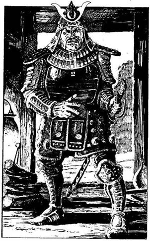
195.
Az út kettéágazik a faszénégetők erdeje mögött. Úgy döntesz, hogy balra mész tovább. Erről az útról egy erdővel borított kis völgyre látsz le. Leereszkedsz, és az alkonyi fényben egy kecskepásztor háza előtt barátságosan lobogó tüzet veszel észre. Amikor közelebb mész, hogy megnézd, vajon megszállhatsz ott éjszakára, a Szamurájok fényes páncélruhájába öltözött férfi jelenik meg az alacsony ajtónyílásban, és a tűz felé tart. A lángok megvilágítják aranyfényű páncélzatát és büszke arcát, melyet száz közül is felismernél. A harcos nem más‚ mint Yoro Ginsei, Toda nagyúr kivégzett őrségének egykori vezére. Toda szervezte az összeesküvést a Sógun ellen. Kegyvesztett Szamurájai inkább szeppukut követtek el, azaz öngyilkosok lettek, de nem vállalták a megszégyenítést. Ginsei azonban úgy döntött, hogy roninként tovább folytatja az életét, azaz olyan Szamuráj lesz, akinek nincs ura. Mindenki tudja róla, hogy gyűlöli a Szamurájokat. Lapozz a 209-re.
196.
Amikor ajkadhoz emeled az üveget, rettenetes bűz csapja meg az orrodat. A folyadék izétől émelyegsz, de lenyeled az italt. Frissítő és élénkítő hatású, sőt a sebeidet is gyógyítja. 3 pontot visszaszerzel elveszített ÉLETERŐ pontjaidból. Még egy jókora kortynyi ital maradt az üvegben, amit bármikor kiihatsz, hogy mind az 5 ÉLETERŐ pontot visszanyerd. Ha kinyitod a harci legyezőt, amennyiben eddig még nem tetted volna - lapozz a 182-re. Ha a fejedre teszed a sisakot, amennyiben még nem lenne rajtad - lapozz a 210-re. Ha kimész a barlangból - lapozz a 222-re.
197.
Egyetlen hatalmas szökkenéssel sikerült elugranod az Óriás Mormota éles karmai elől a mögötte lévő kőpárkányra. Ha berohansz a barlangba - lapozz a 265-re. Ha felmászol a dombtetőre és elmenekülsz - lapozz a 259-re.
198.
A lovagok katonás rendben törnek előre. Gargantusz szemeiből két rubinszerű villám lövell ki és eltalálja az egyik lovagot, aki legalább tíz métert repül a levegőben, majd meghal. A többi lovag nem használja a kardját és a dárdáját; ehelyett köteleket lengetnek. Gargantuszt elkapja a lasszó; kötél tekeredik mindkét karjára és az egyik lábára, de ekkor már két lovag hever holtan. Aztán az életben maradt lovagok valamennyien húznak egyet a köteleken, és Gargantusz lassan előrebukik. Mielőtt végleg a földre zuhanna, kétségbeesetten üvölt egy hatalmasat. Hangja akár a morajló vízesés. Amint földet ér, kialszik a tűz a szemében. Tehetetlenül fekszik, nem más, mint hatalmas bronzszobor. Az Aranyszázad vezére közli veled: - Teljesítettük a kötelességünket, nemes uram, aki a harci legyező tulajdonosa vagy. Isten veled. - A szó szoros értelmében eltűnnek a semmiben. A Dai-Oni így szól: - Jól szerepeltél, halandó, de most megöllek! - Tesz egy lépést előre, kezében hatalmas tüskés vasbuzogányt, egy Tetsubót lóbál. Ha a Ki-Rin még mindig a szövetségesed, harcba küldheted a Dai-Oni ellen - lapozz a 394-re. Ha már nem az, magadnak kell megküzdened a Dai-Onival - lapozz a 292-re.
199.
Az izzó rúnajelekkel díszített fekete acélkard megvillan Ikiru árnyszerű markában, és összecsaptok egymással - a sötétség a fényességgel. Ahányszor csak eltalálod, vonj le ÉLETERŐ pontjaiból a megszokott módon, de Tedd próbára SZERENCSÉDET is. Ha SZERENCSÉD van - lapozz a 235-re. Ha nincs SZERENCSÉD, harcolj tovább. Valahányszor Ikiru talál el, nemcsak ÉLETERŐ pontokat veszítesz az ismert szabályok értelmében, de a rúnajeles kardból kipattanó erő azzal fenyeget, hogy végképp legyőz. Dobj két kockával: ha a kapott összeg nagyobb, mint ÉLETERŐ pontjaid száma - lapozz a 47-re. Ha nem nagyobb, folytasd a küzdelmet!
Ikiru ÜGYESSÉG 12 ÉLETERŐ 12
Ha legyőzted - lapozz a 400-ra.
200.
A lovag arca megnyúlik, amikor látja, hogy fogalmad sincs, miről beszél. - Egy újabb vándor, aki nem hozta el nekünk azt, amire szükségünk van! - morogja. - Menj! Nem segítünk neked! Nyeljen el a Démonok Ura! - Amint ezt kimondja, a Középpontban találod magad. Csillagok vesznek körül, és a nyolc ajtó. Lapozz vissza a 8-as pontra és válassz újra, de ne feledd, hogy csak olyasmit választhatsz, amit eddig még nem próbáltál ki.

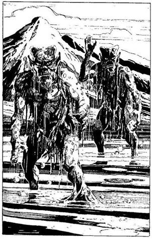
201.
A zöldes mélység fölött egyensúlyozva óvatosan elindulsz a túlpart felé a gázló szélén. A sziklagát, amelyen lassan, körültekintően haladsz, néhány hüvelyknyivel a folyó felszíne alatt húzódik. A mindent beborító zöld nyálka nagyon csúszós. Egyszerre két alak emelkedik ki méltóságteljesen a mélyből. Testüket zöld pikkelyek borítják, fejük furcsán lapos, és úgy mozognak, mintha valamit egyensúlyoznának rajta. Mancsukat úszóhártya borítja, ujjaik végén pedig hatalmas, veszélyesnek látszó karmok nőttek. Miután kiemelkedtek a vízből, a gázló felé indulnak. Ha a közelebbibe vágod bele a kardodat - lapozz a 33-ra. Ha megpróbálsz kijutni a partra, mielőtt odaérnek hozzád - lapozz a 159-re.

202.
Az egyik Szamuráj észreveszi társa holttestét, és odakiált a többieknek. Azonnal fedezékbe bújsz de már késő, észrevettek, és három Szamuráj vágtat feléd. Az egyik felismer, és felkiált: - A Sógun, vagyis a volt Sógun bajnoka! Öljük meg a rühes kutyát! - Kardjukat fenyegetően lóbálva egyszerre rontanak rád. Egyszerre kell megküzdened mindegyikkel. Ha elsajátítottad a Karumidzsutszu
tudományát, ebben a harcban levonhatsz 1 pontot a Támadóerejükből, mert akrobatikus ugrásaiddal megpróbálod elkerülni támadásaikat.
ÜGYESSÉG ÉLETERŐ
Első Szamuráj 6 7
Második Szamuráj 8 8
Harmadik Szamuráj 7 6
Ha megölted mind a hármat, lapozz a 154-re.
203.
A faluban minden csöndes és nyugodt. Leveszed a vértedet, és a priccsen álomra hajtod a fejedet. A lábadba nyilalló éles fájdalomra ébredsz. Azonnal felülsz, és a hold fényénél rémülten látod, amint egy levágott fej a lábadba mélyeszti a fogait. A fej a parasztasszonyé. A nyakán egyetlen csepp vért sem látsz, és a szívedbe mar a félelem, mikor rájössz: ez egy Rokuro-Kubi, egy élőhalott, amelynek a feje éjszakáként elválik a testétől, és vadászni indul. Veszítesz 3 ÉLETERŐ pontot! Katanádat megragadva támadsz a lebegő, vadul vicsorgó fejre.
Rokuro-Kubi ÜGYESSÉG 8 ÉLETERŐ 8
Ha legyőzted, lapozz a 187-re.
204.
Elveszed a kardjaidat Moichitól, és együtt támadtok a Shikomékra. Azok úgy meglepődnek, hogy két fordulón át képtelenek viszonozni a támadást. Míg Moichi eggyel küzd, neked kettővel kell végezned.
ÜGYESSÉG ÉLETERŐ
Első Shikome 6 6
Második Shikome 7 5
Ha még hat forduló után is életben vannak - lapozz a 218-ra. Ha előbb megölöd őket - lapozz a 336-ra.
205.
Minden rendben megy mindaddig, amíg be nem préseled magad a barlangnyíláson. Ekkor hirtelen tompa morajlás hallatszik, és a föld újra megmozdul a lábad alatt. A remegés egyre erősödik, és a fejed fölött hangos csattanást hallasz. Amint fölnézel, látod, hogy több száz tonnányi szikla zuhan feléd. Nincs menekvés: a kövek halálra zúznak.

206.
A Dai-Oni arca eltorzul a dühtől és a fájdalomtól. -. Légy átkozott, halandó! - hörgi. - Hogy mi a titok? A Harmónia. Ha ezt a Szót kiejted a Daloló Halál előtt, az életre kel és a kezedbe száll, de csak akkor, ha a szíved nemes. Ikiru épp ezért nem is tudta eddig használni - teszi még hozzá kaján mosollyal. Ezzel a teste meghal. Ha van egy Tatsut ábrázoló jáde-amuletted - lapozz a 220-ra. Ha nincs - lapozz a 270-re.
207.
Milyen vesszővel lőttél az ifjúra? Ha fűzfalevelűvel - lapozz a 223-ra. Ha bélfürkésszel - lapozz a 239-re.
208.
Megparancsolod a Tatsunak, hogy támadjon. A sárkány a levegőbe emelkedik, és Graalsch már harcra készen pattanna fel, amikor a Tatsu mindent elsöprő lángtengert okád rá. Ám amint a lángok kialszanak, a Varangy Démon sértetlenül lép elő. A sárkány meglepetten áll meg egy pillanatra. Ezt a pillanatot használja ki Graalsch: hatalmas ugrással a levegőbe szökken, és tőből leharapja a Tatsu fejét. Az óriás sárkánytest egy szempillantás alatt semmivé foszlik. Húzd ki Tatsu nevét szövetségeseid listájáról! A Dai-Oni gúnyosan rád mutat, és utasítja a Varangy Démont, hogy támadjon. Ha nincs már több szövetségesed - lapozz a 254- re. Ha még van, melyiküket küldöd a varangy ellen? (Csak azok közül választhatsz, akiket a Kalandlapodon szövetségesként jelöltél!)
A Ki-Rint? Lapozz a 146-ra.
Az Aranyszázadot? Lapozz a 184-re.
A Kardfogú Tigrist? Lapozz a 172-re.
209.
A ronin már messziről fölfedez, és kezét a katanája markolatán tartva büszkén feléd indul. Ginsei áruló és urad ellensége, ám ugyanakkor páratlan kardvívó. Ha elbújsz a fák között - lapozz a 221-re. Ha megvárod, mit tesz Ginsei - lapozz a 241-re.
210.
Óvatosan a fejedre húzod az ezüstsisakot. Egy ideig semmi sem történik, de aztán gyötrő fájdalom hasít az agyadba. Felüvöltesz a kíntól, és letéped a sisakot a fejedről. Az agyad azonban eltompult, mintha nem lennél egészen magadnál. A Zavarodottság Sisakja volt a fejeden. Veszítesz 1 ÜGYESSÉG pontot. A sisakot magaddal viheted, ha akarod. Ha még nem tetted, ihatsz az üvegből - lapozz a 196-ra, vagy kinyithatod a harci legyezőt - lapozz a 182-re, vagy kimehetsz a barlangból - lapozz a 222-re.
211.
A hegyekhez vezető úton haladsz Ikiru barlangja felé. A nap eseménytelenül telik el, az éjszakát a csillagos ég alatt töltöd. Másnap reggel kipihenten ébredsz. Nyersz 2 ÉLETERŐ pontot. Továbbindulsz, majd letérsz az útról, és csakhamar a Shios’ii hegyek lábához érsz. Keskeny csapás vezet fel az egyik legnagyobb csúcshoz, és úgy döntesz, arra mész. Lapozz a 8-ra.
212.
Az Árnydémon elpusztult. Ikiru sziszeg a dühtől és a félelemtől. Sietve magasra emeli a kezét, és különös sikolyt hallat. Árnyalakok emelkednek ki a veremből, és köré sereglenek, mintegy védőfalat alkotva körülötte. Ha előrelépsz, és a Daloló Halált a verembe hajítod - lapozz a 312-re. Ha kivárod, mi lesz, bármi történjék is - lapozz az 51-re. Ha megkerülöd a vermet, és egyenesen átsétálsz az árnyalakokon - lapozz a 298-ra. Ha a Daloló Halált Ikiruba vágod, mint egy lándzsát - lapozz a 63-ra.
213.
A tajtékozó fehér víz fölött egyensúlyozva óvatosan elindulsz a túlpart felé, a gázló szélén, a kőgáton, amely néhány hüvelyknyivel a folyó felszíne alatt húzódik. A mindent beborító zöld nyálka nagyon csúszik, igencsak oda kell figyelned, hogyne veszítsd el az egyensúlyodat. Egyszer csak két hitvány, zöld testű, pikkelyes alak emelkedik ki a folyó zöldes mélyéből, és a gázló felé indul. Karmaik között úszóhártya feszül, fejük furcsán lapos. Ha megpróbálod elérni a túlpartot, mielőtt ideérnek - lapozz a 159-re. Ha visszafordulsz a gázlóról, és biztonságosabb helyet keresel, ahol átkelhetsz - lapozz a 245-re. Ha megküzdesz velük a gázlón - lapozz a 315-re.
214.
Magasra emeled a rubint, az megcsillan a napfényben, de a kardfogú tigris továbbra is feléd rohan, aztán rád veti magát. Meg kell küzdened vele.
Kardfogú Tigris ÜGYESSÉG 10 ÉLETERŐ 12
Ha legyőzted, itt már nincs több keresnivalód, így visszalépsz az ajtón át a Középpontba. Lapozz vissza a 8-ra, és válassz útra! Persze csak olyasmit választhatsz, amit eddig még nem próbáltál ki.

215.
Csakhamar találsz egy megfelelő deszkát, és beszögezed az ablakot. Így legalább valamivel melegebb lesz a házban. Legnagyobb megrökönyödésedre a hallgatag öregasszony nagyon izgatottá válik, mialatt dolgozol, és vacogni kezd a foga. Ha vállat vonsz, és tovább dolgozol - lapozz a 191-re. Ha megkérdezed, mi baja - lapozz a 175-re.
216.
Teljes észrevétlenül háztól házig lopakodsz. Nyiladdal sikerül egy újabb Szamurájt leterítened. A többi döbbenten néz körül, de sehol sem látják titokzatos ellenfelüket. Folytatod a nyilazást, nemsokára már négyet lőttél le közülük, és még mindig nem fedeztek fel. Nem bírják tovább idegekkel: a többi Szamuráj inkább elmenekül. Megkeresed a kilőtt nyilakat. Néhányat épségben találsz, de elvesztettél 1 fűzlevelűt, 1 páncéltörőt és 1 bélfürkészt. Lapozz a 176-ra.
217.
Az ösvény továbbkanyarog a ködben. Biztos, hogy már jó néhány mérfölddel többet tettél meg, mint
amennyit a térkép alján számítani lehetett, és még mindig nem látod a bíborpagodát. Ha visszafordulsz az óriások útja felé - lapozz a 113-ra. Ha nem, lapozz a 369-re.

218.
A csatazaj felkeltette a többiek figyelmét. Egy csapatnyi Szamuráj és Shikome jelenik meg, és a túlerő hamarosan győzelmet is arat fölöttetek. Moichi a küzdelemben meghalt, téged pedig fogságba ejtenek. Közben egyre-másra gúnyt űznek a Sógunból és bajnokából - szemmel láthatóan tudják, ki vagy. Ráadásul hű csatlósod elvesztése szomorúsággal tölt el.
Belöknek a várbörtön egyik cellájába. A foglár, egy bivalytermetű pasas viseltes bőrmellényben, gúnyosan így szól: - Holnap reggel Tsietsin Sógun elé visznek! - Ezzel rád csapja a nehéz vasveretű
tölgyfa ajtót. Egyedül maradtál. Elvették a kardjaidat, de jobban sért a katonák gúnyolódása és megalázó elfogatásod.
Vesztesz 1 Becsület pontot. Nincs mit tenned, meg kell várnod a reggelt, így hát lefekszel a sarokban álló priccsre és elalszol. Lapozz a 316-ra.

219.
A legöregebb faszénégető nemsokára utolér, és hízelegve arra kér, engedd meg, hogy elvihessen egy biztos helyre: ne mondhassák, hogy az ő családja nem adta meg a tiszteletet egy Szamurájnak. Kanyargós ösvényen indultok el, mely Kanshuro völgyei felé vezet, ahol az erdős fennsíkon gyönyörű, békés völgyek húzódnak meg észrevétlenül. Napszálltakor leereszkedtek Tinshu völgyébe, egy festői kis faluba. Mikor az öreghez fordulsz, hogy a falu nevét megkérdezd, az a földre zuhan. Megpróbálod magához téríteni, de a szíve megállt, az öreg meghalt. Lapozz az 5-re.

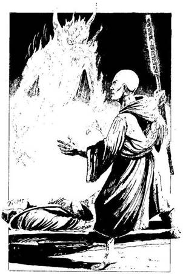
220.
Szörnyű dolog történik. A Dai-Oni testéből egy kísértetalak, egy démoni szellemalak száll fel, anyagtalan karmokkal. Ez egy Shura, vagyis harcos kísértet: a Dai-Oni szelleme eljött hogy bosszút álljon haláláért. Te azonban emlékszel a Tatsu szavaira, és megidézed a Démonok Jizóját: - Egy Shura van itt, ó Jizo - mormolod. - Jöjj és teljesítsd kötelességedet! - Amint az utolsó szót kimondod, egy lény jelenik meg előtted. Ruházatából ítélve harcos szerzetes lehet, kezében pedig egy izzó rúnákkal ékesített botot tart. A puszta látványtól is tisztelettel vegyes félelem tölt el. A Jizo rád se hederít, hanem botjával a szellemalakra sújt. A kísértet egyetlen sikollyal semmivé foszlik. A Jizo, anélkül hogy egyetlen pillantásra is méltatna, szintén eltűnik. Lapozz a 76-ra.
221.
Ginsei fennhangon kihív párbajra, de nem tudja, hol rejtőzöl. Arrébb kúszol, mert látod, hogy igencsak kemény küzdelem lenne vele harcolni. Félelem mar a szívedbe. Nem merted elfogadni urad ellenségének kihívását. Eljátszottad a becsületedet, és úgy érzed, nem vagy érdemes rá hogy a Sógun bajnoka légy. Veszítesz 2 Becsület pontot. Lassan leszáll az éj. Alkalmas helyet keresel az erdőben, ahol álomra hajthatod a fejed. Lapozz a 371-re.
222.
A barlangfolyosó egyre emelkedik, mígnem egy fénykört pillantasz meg a végében. A kijáratot találtad meg, mely a domboldalban, egy sziklakiszögellés alatt nyílik. A dombok sekély völgyet fognak
közre. A völgyben kanyarog azaz út, amelyet követned kell északnak, hogy eljuss Onikaruhoz és Ikiruhoz. Lapozz a 386-ra.
223.
A fűzlevelű nyílvessző süvítve repül a levegőben, és az ifjú oldalába áll. Az felsikolt, és kínjában összecsuklik. Az egyik faszénégető a botjához kap, de két másik lefogja. A legidősebb a lábaid elé veti magát, úgy rimánkodik, hogy ne öld meg a fiát. Felpillant, és komor tekintetedet látva fölajánlja, hogy elvezet egy faluba, ahol biztonságban töltheted az éjszakát. Ha ráparancsolsz, hogy vezessen a faluba - lapozz a 253-ra. Ha egyedül mész tovább - lapozz a 195-re.
224.
Célzol és lősz. Ha lövésed talál, a nyílvessző sebzőértékét levonhatod a tigris 12 ÉLETERŐ pontjából. Összesen három vesszőt tudsz kilőni, mielőtt elérne, aztán meg kell küzdened vele.
Kardfogú Tigris ÜGYESSÉG 10 ÉLETERŐ 12
Ha legyőzted, itt már nincs semmi keresnivalód, ezért visszalépsz az ajtón át a Középpontba. Lapozz vissza a 8-ra, és válassz újra! Persze csak olyasmit választhatsz, amit eddig még nem próbáltál ki.
225.
A szigony egy alacsony ágba fúródik, és te szerencsésen megmenekülsz. Lapozz a 245-re.
226.
Íjadba illeszted a nyílvesszőt és lősz: a nyílvessző a nyakát üti át. A Szamuráj holtan esik össze. Ezt a nyílvesszőt nem tudod visszaszerezni, ezért húzd ki a Kalandlapodról! Tedd próbára a SZERENCSÉDET! Ha SZERENCSÉD van - lapozz a 216-ra. Ha nincs SZERENCSÉD - lapozz a 202-re.
227.
Egy folyóhoz érsz. Közvetlenül a víz felszíne alatt kőgát húzódik, amely felduzzasztja a folyót, és az a gát túloldalán vízesésként zuhan a mélybe. A zuhatag alján a víz fehér tajtékot vet, fölötte zöldes a színe. Mély és nyugodt. A kőgát tízlábnyi széles lehet, és furcsa zöld nyálka borítja. Hol vágsz át a gázlón? Ha a fehér, tajtékos víznél - lapozz a 213-ra. Ha a zöldes, mély résznél - lapozz a 201-re. Ha akarod, át is úszhatod a folyót a zuhatag fölött - lapozz a 193-ra.
228.
A varangy elé veted a kígyómintás botot. A kígyóminta hirtelen életre kel, és Graalsch, a Varangy Démon rémülten hőköl vissza. A kígyó támadásba lendül, erős farkával megragadja a varangyot, és acélos erővel szorítja, miközben éles fogaival bele-belemar. A Varangy Démon vérfagyasztó üvöltést hallat, amint a kígyó kiszorítja belőle a lelket. Amikor ellenfeled végleg elpusztul, a kígyó eltűnik, mintha csak átcsúszott volna egy másik létsíkra, Húzd ki a nevét a Kalandlapodról!
A Dai-Oni üvölt dühében. - K’rllk, pusztítsd el ezt az emberfajzatot! - A Sáska Démon előlép. Ha
nincs már több szövetségesed, lapozz a 266-ra. Ha még van, melyiket küldöd ellene? (Csak azok közül választhatsz, akik a Kalandlapodon szerepelnek.)
A Ki-Rint? Lapozz a 278-ra.
A Főnixet? Lapozz a 320-ra.
Eleonórát, a Boszorkányt? Lapozz a 330-ra.
229.
A vízszint egyre magasabb és magasabb, de amerre csak nézel, a lápot sás borítja. Kénytelen vagy úszni, és sok kilométernyi úszás után, teljesen kifáradva lassan a víz alá süllyedsz, és a lápban leled a halálodat.
230.
Berohantok a palotába, végigszáguldotok egy hosszú folyosón, és csakhamar eltévedtek a szobák és folyosók útvesztőjében, melyek többsége most üres, csupán a szolgák és rabszolgák teszik dolgukat, akik döbbenten merednek rátok. Amint az egyik sarkon befordultok, az elétek táruló látványtól földbe gyökerezik a lábad. Egyenesen Tsietsin nagyúrba botlottatok, aki egy-egy Szamurájjal az oldalán totyogva közeledik felétek a folyosón. Tsietsin nagy testű, kövér ember: dagadt, párnás pofazacskója, lefittyedő, hatalmas szája van. Két apró malacszemét felháborodottan mereszti rátok. Többrészes kimonó van rajta, fölötte hatalmas, aranylevelekkel díszített palást. Fején büszkén viseli a Sóguni rangot jelképező fejdíszt. Mikor felismer, ijedten zihálva jelt ad a testőreinek, sarkon fordul, és eldübörög. A Szamurájok kardot rántanak, meghajolnak előttetek, és rátok támadnak. Moichi azonnal nekiugrik az egyiknek. Neked a másikkal kell megküzdened.
Tsietsin Testőre ÜGYESSÉG 9 ÉLETERŐ 8
Ha legyőzted, lapozz a 354-re.
231.
Sajnos nincs nálad kénkő, amivel megtámadhatnád, vagy megfélemlíthetnéd a szörnyeket. Lassan visszaszorítanak a folyópartra. A kardoddal ügy csapkodsz, hogy azt a látszatot kelted, mintha egy mágikus pengefal venne körül, de elszánt védekezésed ellenére az egyik szörny eltalál. Ütése leterít, és a folyóba vonszolnak. A Kappák karmai közé kerültél, ahonnan nincs menekvés.
232.
Két pontos, gyors lövéssel leterítetted mindkét Shikomét, akik némán csuklanak össze a palota kapuja előtt. Moichi álla leesik a csodálkozástól. - Milyen pompás lövés, nagyuram. Te valóban a kard és az íj mestere vagy! - Most már nem érzel gúnyt a hangjában. Amilyen csöndesen csak tudtok, gyorsan besiettek a palotába, ahol üres szobák és folyosók útvesztője vár. Lapozz a 230-ra.

233.
Amint kardot rántasz, a pikkelyes zöld szörny sárga szemében gonosz fény csillan, és egy lépést hátrál a mélybe. Ha elsajátítottad a Dzsadzsutszu tudományát - lapozz a 357-re. Ellenkező esetben a szörny vastag hálót emel ki a víz alól, és megpróbálja elfogni a kardodat, amikor megtámadod. Dobj két kockával, és adj kettőt az összeghez, mert a csúszós, nyálkás sziklán nehezen egyensúlyozol. Ha a kapott összeg kisebb, mint ÜGYESSÉG pontjaid száma - lapozz a 171-re. Ha a kapott összeg nagyobb vagy ugyanannyi, mint ÜGYESSÉG pontjaid száma - lapozz a 117-re.
234.
A szádhoz emeled az ősi kürtöt, és belefújsz. Fülsértő hangot ad, amely még sokáig visszhangzik a fennsíkon. A tigris hirtelen megdermed, majd lassan, inkább kíváncsian, mint éhesen, hozzád sétál. Akkora, mint te magad, de nem bánt, csak gyengéden megnyalja az arcodat. Úgy érzed, a tigris azt hiszi, valaki más vagy, talán a kürt eredeti tulajdonosa, de erről már csak a legendák mesélhetnének. Most már tudod, hogy segíteni fog téged a Csata Színhelyén. Jegyezd fel a Kalandlapodra! A tigris természetfelettien intelligens tekintettel követ, mikor átlépsz az ajtón, vissza a Középpontba. Lapozz a 8-ra, és válassz újra, de ne feledd, csak olyasmit választhatsz, amit még nem próbáltál ki.
235.
Ikiru felszisszen a fájdalomtól, mikor a Daloló Halál az oldalába vág. A pengéből hirtelen cikázó villám csap Ikiru csuklya mögé rejtett arcába. A fekete
rúnakard hatalmas mennydörgés kíséretében eltűnik. Ikiru végleg elpusztult, nyoma sem maradt a teremben. Lapozz a 400-ra.
236.
A lövések pontosak és halálosak. Pillanatok alatt, néma csöndben végeztél a két Shikoméval. Nincs rá idő, hogy a nyílvesszőket visszaszerezd, berohansz a palotába. Lapozz a 158-ra.
237.
Kényelmesen vágsz át a Hosszú dombokon, és két nap múlva eléred a nagy Hiang-Kiang folyó mellett lévő egyik hűbérbirtok völgyét. Zöldellő dombok között haladsz a folyó felé a környék csak úgy zeng az énekes-rigók csicsergésétől. A folyóhoz egyenes út vezet, melyet kétoldalt fehérre meszelt mérföldkövek szegélyeznek. Úgy döntesz, erre mész tovább. Lapozz a 227-re.
238.
Előrelépsz, és kardodat kihúzva egyetlen gyors mozdulattal lecsapod az áruló Szamuráj fejét. - Ezt érdemelte, amiért elárulta a Sógunt, és gyújtogatásra, fosztogatásra vetemedett - teszi hozzá a falu elöljárója. A többi falusi ismét köszönetet mond, hogy ilyen bölcsen ítélkeztél, és újabb ajándékot adnak - hat Aranytallért. Kisebb ünnepség után továbbindulsz utadon. Lapozz a 24-re.
239.
A bélfürkész süvítve száll a levegőben, és beleáll az ifjú oldalába. Az felsikolt, és a kíntól összecsuklik. Aztán köhögni kezd, és görcsös rángások
futnak végig a testén. A fordítottan recézett nyílhegy mélyen a húsába fúródott, és most kétségbeesetten erőlködik, hogy kihúzza. Az egyik barátja odalép segíteni, és az ifjú újból felsikolt kínjában, amint a másik kitépi a nyílhegyet. A tátongó sebből ömleni kezd a vér. A hátrafelé álló tüskék miatt igen nehéz eltávolítani az ilyen nyílvesszőt, amely most valószínűleg egy verőeret talált el, és a szerencsétlen fiú elvérzik. A többi faszénégető dühösen kiáltozva néz feléd. Egyikük kiránt egy nagy darab nedves tőzeget a füstölgő boksából, míg mások botokat ragadnak, és fenyegetően indulnak feléd. Ha elmenekülsz - lapozz a 269-re. Ha harcolsz - lapozz a 281-re.

240.
A nyílvessző elzúg a Szamuráj nyaka mellett, és a harcos meglepetten ugrik fel. Megpróbál fedezékbe bújni, de észrevesz, és odakiált a többieknek. Az áruló Szamurájok közül néhányan felfigyelnek rá, és hárman elindulnak feléd. Az egyik felismer, és így kiált: - A Sógun, vagyis a volt Sógun bajnoka! Öljük meg a rühes kutyát. - Kardjukat fenyegetően lengetve egyszerre rontanak rád. Egyszerre
kell megküzdened velük. Ha értesz a Karumidzsutszu tudományához, ebben a harcban levonhatsz 1 pontot a Támadóerejükből, mert akrobatikus ugrásaiddal megpróbálod elkerülni támadásaikat.
ÜGYESSÉG ÉLETERŐ
Első Szamuráj 6 7
Második Szamuráj 8 8
Harmadik Szamuráj 5 6
Ha megölted mind a hármat - lapozz a 154-re.
241.
Ginsei rád villanja gyilkos mosolyát, amint előhúzza katanáját hüvelyéből. - A Sógun bajnoka. Különös, hogy valaki így, fiatalon a Sógun legjobb vívója legyen. Bizonyára azért van ez így, mert már csak a gyávák és a karonülő csecsemők Hasekawa megtört hatalmának alázatos hívei. Kihívlak hát párviadalra. Élethalálharcot vívunk! - Tudja, hogy a sértést nem nyeled le. Meg kell ölnöd. A katanáján kívül más fegyvere nincsen. Ha elsajátítottad a Dzsadzsutszu tudományit, és alkalmazni is akarod - lapozz a 275-re. Ha jártas vagy a Kjudzsutszuban és alkalmazod - lapozz a 289-re. Egyébként lapozz a 301-re.
242.
Az életre keltett csontvázak lassan felmásznak a hídra. Ha jártas vagy a Karumidzsutszu tudományában, és megkísérelsz nekifutásból átugrani az élőholt Szamuráj fölött, a túlpartra - lapozz a 262-re. Ha nem kockáztatod meg az ugrást, lapozz a 358-ra.
243.
Megmeríted az ezüstkancsót a vízben, aztán lecsukod a fedelét. Jegyezd fel a Kalandlapodra! Töltesz egy keveset a kehelybe, és óvatosan megkóstolod. A Tudás érzése fut át rajtad - egy pillanatig mintha isteni hatalmad lenne. A Tudás Vizéből ittál egy kortyot. Nyersz 1 SZERENCSE pontot, mert megízlelted az istenek tudását. Az Elvarázsolt kert lassan a távolba vész, mint egy látomás, majd végleg eltűnik. Egy hegy lábánál találod magad, amelyre keskeny csapás visz fel. Kétségtelen, hogy a Shios’ii hegyek között vagy, nem messze Ikirutól, így hát gyorsan nekivágsz a meredek útnak. Lapozz a 8-ra.
244.
Az első nyilad az egyik Shikome szemébe fúródik, és azonnal megöli, a másik viszont célt téveszt, és beleáll a várfalba. Az életben maradt őr meglepetésében és félelmében fölüvölt, és riadóztatja a többieket. A palotában pillanatokon belül elszabadul a pokol: mindenfelé Szamurájok és Shikomék kutatnak a merénylő után. Megpróbáltok elmenekülni, de észrevesznek benneteket, és nem telik bele sok idő, legyőz a túlerő. Moichi a küzdelemben meghal, téged pedig fogságba ejtenek. Közben egyre-másra gúnyt űznek a Sógunból és bajnokából - minden kétséget kizáróan tudják, ki vagy. Ráadásul hű csatlósod elvesztése szomorúsággal tölt el. Belöknek a várbörtön egyik cellájába. A foglár, egy bivalytermetű pasas, viseltes bőrmellényben, gúnyosan így szól: - Holnap reggel Tsietsin Sógun elé visznek! - Ezzel rád csapja a nehéz vasveretű tölgyfa ajtót.
Egyedül maradtál. Elvették a kardjaidat, de jobban sért a katonák gúnyolódása és megalázó elfogatásod. Vesztesz 1 Becsület pontot! Nincs mit tenned, meg kell várnod a reggelt, így hát lefekszel a sarokban álló priccsre, és elalszol. Lapozz a 316-ra.
245.
Gyorsan magad mögött hagyod a gázlót. Nem üldöznek, de neked, mint a Sógun Szamurájának, gondoskodnod kellene az utak és gázlók biztonságosságáról. Nem teljesítetted ezt a kötelességedet, ezért veszítesz 1 Becsület pontot. Lapozz a 263-ra.

246.
A hatalmas, favastagságú kígyó megpróbálja leharapni a fejedet; Nincs más választásod, meg kell küzdened vele.
Óriáskígyó ÜGYESSÉG 10 ÉLETERŐ 10
Ha legyőzted, lapozz a 72-re.
247.
Az ezüst Szamuráj hangja messze cseng az Elvarázsolt Kertben: - Nincs becsületed, nem vagy Szamuráj! - Nemsokára a démon és a papnő szobrához érsz. A varázsló újra megjelenik, és a két szobor, a fekete bőrű, vörös szarvú démon meg a sápadt papnő életre kel. A nő a lábaid elé veti magát, és térden állva könyörög, hogy mentsd meg őt a Démonok Verméből, de fogvatartója durván megrántja a láncot, és a nő a földre zuhan. Aztán a démon hozzád vágja a láncot, és elmormolja a Kővé-változás varázslat igéit. Kővé dermedsz, és a démon helyébe kerülsz. Ő most már szabad. Kíváncsian nézel a földön fekvő papnőre, aki újból szoborrá vált. Amíg egy bátor utazó be nem téved a vörös pagoda falai közé, nem lehet részed az életben.
248.
Az első nyilad az egyik Shikome szemébe fúródik, és azonnal megöli, a másik viszont célt téveszt, és beleáll a várfalba. Az életben maradt őr meglepetésében és félelmében fölüvölt, és riadóztatja a többieket. A palotában pillanatokon belül elszabadul a pokol: mindenfelé Szamurájok és Shikomék kutatnak a merénylő után. Megpróbálsz elmenekülni, de észrevesznek, és nem telik bele sok idő, legyőz a túlerő. Fogságba ejtenek, közben egyre-másra gúnyt űznek a Sógunból és bajnokából - nyilvánvalóan tudják, ki vagy. Belöknek a várbörtön egyik cellájába. A foglár, egy bivalytermetű pasas, viseltes bőrmellényben, gúnyosan így szót: - Holnap reggel Tsietsin Sógun elé visznek! - Ezzel rád csapja a nehéz, vasveretű tölgyfa ajtót.
Egyedül maradtál. Elvették a kardjaidat, de jobban sért a katonák gúnyolódása és megalázó elfogatásod. Veszítesz 1 Becsület pontot! Nincs mit tenned, meg kell várnod a reggelt, így hát lefekszel a sarokban álló priccsre, és elalszol. Lapozz a 316-ra.
249.
Egyre jobban lejt az ösvény, amelyen eddig jöttél a Pókláp felé, s már a mocsár vízszintje alatt vezet. A vizet kétoldalt magas agyagfalak fogják vissza. Könnyen haladsz, és úgy gondolod, hamarosan eléred a Hiang-Kiang folyó torkolatának déli oldalát. Ha visszamész a láp szélére, és másfelé indulsz - lapozz vissza a 17-re, és válassz újra. Ha folytatod az utadat a torkolat felé - lapozz a 33-ra.
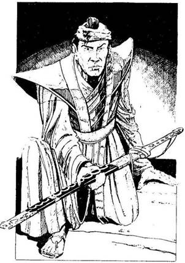
250.
- Nem ölhetem meg hidegvérrel ezt a Szamurájt - mondod fennhangon, erre mindenhonnan csalódott kiáltások hangzanak. - Lakolnia kell bűneiért! - kiabálják mindenfelől. - Bosszú! Bosszú! - A fogságba esett Szamuráj meglepetten ül fel, aztán mélyen meghajol előtted, és a kardját nyújtja. - Köszönöm, uram. Szívem mélyén még él a hűség Hasekawa Sógun iránt, de Tsietsin szolgálatában lévén ezt nem fedhettem fel. Mostantól megtagadom az áruló Tsietsint, és zálogul neked ajánlom a kardomat, uram. Fogadj hű szolgádul. - Ha magaddal viszed a Szamurájt - lapozz a 276-ra. Ha úgy gondolod, hazudik, és visszaküldöd Tsietsinhez - lapozz a 264-re.

251.
A rézkulcsot tekergő sárkánygyíkok ékesítik, de fogalmad sincs, hogy mire lehetne használni. A pergamen azonban a Hiang-Kiang folyón túli Pókláp térképe. Biztonságos utat mutat a láp elhagyatott vidékén át, továbbá egy ösvényt, amely egy kétszintes bíborpagodához vezet. Elteszed a kulcsot meg a pergament, és körülnézel az erdőben egy száraz hely után, ahol megpihenhetsz. Lapozz a 371-re.
252.
Azonnal cselekszel. Kardodat egyetlen gyors mozdulattal előrántod, és átvágod az egyik Shikome őr torkát. Az hörögve zuhan a földre, és meghal. A másik döbbenten hőköl hátra, amikor felé indulsz, hogy megtámadd.
Shikome Őr ÜGYESSÉG 8 ÉLETERŐ 7
Ha legyőzöd, lapozz a 280-ra.
253.
Az öreg egy kanyargós ösvényen vezet, mely a Kanshuro völgyei felé visz, ahol az erdős fennsíkon észrevétlenül húzódnak meg a gyönyörű, békés völgyek. Napszálltakor lefelé mentek a Tinshu völgyébe, egy festői kis falu felé. Mikor az öreghez fordulsz, hogy megtudd tőle a falu nevét, az összeesik, és elterül a földön. Megpróbálod magához téríteni, de a szíve megállt, az öreg meghalt. Lapozz az 5-re.
254.
Egyedül kell kiállnod ellene. A varangy előreugrik, és óriási csata alakul ki. Elpusztítod Graalscht, a varangyot, sőt a sáskát is, de a harc végére nagyon legyengülsz. A Bronzember hozzád lép, és cafatokra szaggat a Dai-Oni gúnyos kacaja közepette. Kalandod itt véget ér.
255.
Nekirontasz az egyik szörnynek, és kardoddal kibillented az egyensúlyából. Nagy adag víz ömlik ki a feje tetején lévő kis medencéből. Kezével a
fejéhez kap, és olyan hangot ad, mintha köhögne vagy fuldokolna, majd hirtelen visszaugrik a folyóba. Rádöbbensz, hogy azért van a fejükön a víz, mert annak segítségével lélegeznek. Ettől kezdve úgy támadod meg őket, hogy elveszítsék az egyensúlyukat, és a víz kiloccsanjon. Kénytelenek visszavonulni a folyóba, te pedig fáradtan bár, de győztesen állsz a parton. Lapozz a 393-ra.
256.
Odakiáltasz Moichinak. A Shikomék meglepetésükben először moccanni sem tudnak, amikor rájuk vetitek magatokat. Kettővel kell megküzdened, míg Moichi eggyel végez.
ÜGYESSÉG ÉLETERŐ
Első Shikome 8 9
Második Shikome 7 8
Ha kilenc fordulóban legyőzöd őket - lapozz a 336-ra. Ha nem - lapozz a 218-ra.
257.
A szigony a hátadba fúródik. Ha van rajtad mellvért - lapozz a 67-re. Ha nincs - lapozz a 39-re.
258.
Mit teszel? Ha megérinted a kígyót egy aganccsal, amennyiben van nálad - lapozz a 290-re. Ha belefújsz a kürtbe, amennyiben van nálad - lapozz a 318-ra. Ha megpróbálod felhasználni a Főnix Rubint, amennyiben nálad van - lapozz a 328-ra. Ha a fenti tárgyak közül egyik sincs a birtokodban - lapozz a 246-ra.
259.
Az Óriás Mormota meglepően gyorsan mozog rövid, de erős lábain, de te előbb érsz a dombtetőre, ahol lélegzetelállító látvány tárul eléd. Az alsó Hiang-Kiang folyó fennsíkja fekszik előtted. A távolban látod hatalmas deltáját a Kumói Póklápban. Csak sejted, hogy a Pókláp arra van, mert ködfelhő takarja. Tudod, hogy ha kerülő úton mennél, heteket vesztegetnél el, ezért egyenesen indulsz el, lefelé a völgybe, magad mögött hagyva az Óriás Mormotát. Lapozz a 17-re.
260.
A csuklyás alak nem látszik dühösnek: felnevet, és ismét egy mágikus mozdulatot tesz. Újabb alaktalan fekete árny emelkedik ki a veremből, s miközben lassan alakot ölt, rémülten látod, hogy a saját hasonmásod áll előtted, de nem támad rád. Az agyadba férkőzik, és hatalmat ígér; vagyont és hírnevet kínál, csábít, hogy uralkodj, és te írd a történelmet. - Ez mind a tiéd lehet, ha hűséget esküszöl uradnak, Ikirunak - suttogja az agyadban.
Nagyon erős a kísértés, lassan eluralkodik rajtad a hatalomvágy. Ha Becsület pontjaid száma 5 vagy annál több - lapozz a 27-re. Ha kevesebb, mint 5 - lapozz a 324-re.

261.
Az orrod hegyéig is alig látsz a szakadó esőben, ahogy lassan kapaszkodsz fel a domboldalban. A vízszint igen gyorsan emelkedik; minden bizonnyal megfulladtál volna, ha nem ezt az utat választod. Ahogy följebb mászva magad mögött hagyod az egyre áradó vizet, észreveszed hogy a mocsár lakói, a különféle állatok a dombra menekülnek az áradat elől. Patkányokat, szalamandrákat, gőtéket, sőt egy hatalmas sárkánygyíkot is látsz, de ez túl ijedtnek tűnik ahhoz, hogy fontolóra vegye, fölfaljon-e. Lapozz a 149-re.
262.
Nekifutsz, és a levegőbe szökkensz. Tedd próbára a SZERENCSÉDET! Ha SZERENCSÉD van - lapozz a 286-ra. Ha nincs SZERENCSÉD - lapozz a 334-re.

263.
Nemsokára újabb veszélyek feledtetik veled a régebbiek emlékét. A felső Hiang-Kiang folyó völgyén túl egy palahegység emelkedik; gerince, mint a fűrész mered az ég felé. Már közel vagy a csúcshoz, amikor remegni kezd a hegy, amelyen állsz. Mintha egész Hachiman kocsonyává vált volna, úgy remeg a földrengéstől. Nem messze szűk barlangnyílást fedezel fel. Ha bemászol - lapozz a 205-re. Ha Inkább a földre veted magad ott, ahol vagy - lapozz a 103-ra.
264.
Futni hagyod a Szamurájt. A falusiak megköszönik, hogy megmentetted őket, sokan azonban halkan hozzáteszik: - De azért igazán megölhetted volna azt az álnok, becstelen Szamurájt. Rövid ünneplés után továbbindulsz utadon. Lapozz a 24-re.
265.
A barlang felé rohansz, de az Óriás Mormota elvágja utadat. Meg kell küzdened vele.
Óriás Mormota ÜGYESSÉG 8 ÉLETERŐ 22
Ha legyőzted, bemehetsz a barlangba - lapozz a 355-re.
266.
K’rllk, a Sáska Démon rád ront, mellső lábát csapásra készen a magasba emeli. Meg kell küzdened a Sáska Démonnal. Mivel kitinpáncélja igen kemény, kardod csak 1 ÉLETERŐ pontot sebez rajta, valahányszor eltalálod. (Persze, ha megdobod a SZERENCSÉDET, akkor 2 ÉLETERŐ pontot is sebezhetsz rajta.)
Sáska Démon ÜGYESSÉG 8 ÉLETERŐ 10
Ha legyőzted, lapozz a 346-ra.
267.
Abban a pillanatban, ahogy leteszed a kulcsot, a jobbik szemed megnyugszik. Úgy döntesz, hogy az erdőben keresel egy száraz helyet, ahol letáborozhatsz. Nyersz 1 ÜGYESSÉG pontot! Lapozz a 371-re.
268.
Kétségbeesetten rontasz rájuk, mert jól tudod, hogy ők is ugyanezt tennék. Az egyikkel szinte azonnal végzel, de a másik vadul üvöltözni kezd félelmében. A Palotában pillanatokon belül elszabadul a pokol: mindenfelé Szamurájok és Shikomék kutatnak a merénylő után. Megpróbálsz elmenekülni, de észrevesznek, és nem telik bele sok idő, legyőz a túlerő. Fogságba ejtenek, közben egyre-másra gúnyt űznek a Sógunból és bajnokából - nyilvánvalóan tudják, ki vagy. Belöknek a várbörtön egyik cellájába. A foglár, egy bivalytermetű pasas, viseltes bőrmellényben, gúnyosan így szólt - Holnap reggel Tsietsin Sógun elé visznek! - Ezzel rád csapja a nehéz, vasveretű tölgyajtót.
Egyedül maradtál. Elvették a kardjaidat, de jobban sért a katonák gúnyolódása és megalázó elfogatásod. Vesztesz 1 Becsület pontot! Nincs mit tenned, meg kell várnod a reggelt, így hát lefekszel a sarokban álló priccsre, és elalszol. Lapozz a 316-ra.
269.
Gúnykiáltásokat hoz feléd a szél, ahogy megpróbálsz minél messzebb kerülni a parasztoktól. Csak akkor ébredsz rá, amikor levegő után kapkodva megállsz, hogy te, akinek a Sógun becsületét kellene megvédened, gyalázatos módon megfutamodtál. Ha így folytatod, nemsokára elveszted a becsületedet, méltatlan leszel a Szamuráj névre. Veszítesz 2 Becsület pontot! Folytatod az utadat. Lapozz a 195-re.

270.
Rémisztő dolog történik. A Dai-Oni testéből egy kísértetalak, egy démoni szellemalak száll fel, anyagtalan karmokkal. Ez egy Shura, vagyis harcos kísértet! A Dai-Oni szelleme eljött, hogy bosszút álljon a haláláért.
Meg kell küzdened a Shurával! Valahányszor eltalál, ugyanúgy 2 ÉLETERŐ pontot sebez, mint a többi ellenfeled, de ütései nyomán nem nyílnak sebek: az életenergiádat szívja el.
Shura ÜGYESSÉG 9 ÉLETERŐ 8
Ha legyőzted, a Shura egyszerűen köddé válik. Lapozz a 76-ra.
271.
A Hetedik Pecsét Seregének tagjai az első Sógun dicső testőrei voltak. Senki sem hallott róluk azóta, hogy ötszáz éve nem adták meg magukat a tízszeres túlerőnek, és mind egy szálig lemészárolták őket. A mellvért ősi darab, de a minősége kitűnő. Ahogy kifeszíted a sziklák közül, a kalcitvirágok elrepednek, és éktelen csörömpölés közepette szilánkeső hullik a nyakadba. Aztán egy nagyobb szikla is eltalál: veszítesz 3 ÉLETERŐ pontot. Ha még életben vagy, úgy döntesz, jobb, ha minél előbb elhagyod ezt a barlangot. Lapozz a 375-re.
272.
A kígyó hatalmas teste lassan alámerül az iszapban. Néhány csúszómászó dögevő rögtön elkezdi felfalni a süllyedő hullát. Semmi érdekes nincs már itt, ezért úgy döntesz, visszalépsz az ajtón át a
Középpontba. Lapozz vissza a 8-ra, és válassz újra. Persze nem választhatod ugyanazt, amit már próbáltál.
273.
A szirten hatalmas repedések keletkeztek, és ez megnehezíti számodra a haladást. Végül egy simább részre érsz, és úgy döntesz, itt megpihensz és eszel valamit. Ám amikor a hátizsákodba nyúlsz, a föld újra megmozdul alattad. Itt is látsz a közelben egy barlangot. Ha berohansz - lapozz a 329-re. Ha ismét a földre veted magad, és kivárod, mi lesz - lapozz a 385-re.
274.
Az Árnydémon rád veti magát. Két kézzel markolod meg a Daloló Halált, és nagyot sújtasz vele. Ahogy a kard hozzáér, egyetlen fehér villanást látsz. A Démon felüvölt kínjában - egy távoli, elhaló sikoly hallatszik -, és árnyteste apró sötét szilánkokra esik szét, míg végül semmi sem marad belőle. Lapozz a 212-re.
275.
Ginsei mindkét lábát behajlítva, kardja hegyét a torkodnak irányozva, lassan közeledik feléd. A párbajra készen lépsz felé, de kardodat még nem húzod elő a hüvelyéből. Ginsei meg van győződve róla, hogy előnyösebb helyzetben van, ezért nagyon meglepi, mikor egyetlen villámgyors lendülettel, ahogy a kobra lecsap, előrántod a kardodat, és már támadsz is. Ezzel a vágással bárki másnak levágtad volna a fejét, de Ginsei is nagyon gyors,
és az utolsó pillanatban hárítja a támadásodat. Így is súlyosan megsebesítetted a kardforgató kezét, ezért csökken az ÜGYESSÉGE. Vér csurog végig a katanája markolatán. Folytasd a harcot.
Ginsei, a ronin ÜGYESSÉG 9 ÉLETERŐ 14
Ha legyőzted, lapozz a 399-re.
276.
- Köszönöm, nagyuram! Nem fogod megbánni! - mondja gyorsan. A falusiak lassan szétszélednek. A bajuszuk alatt olyasmit mormolnak, hogy „Ezek mind egyformák!”. Ahogy továbbindulsz utadon, követőd elmondja, hogy az ő neve Yomitsume Moichi, de szólítsd egyszerűen Moichinak. Észak felé folytatjátok utatokat. Szamuráj csatlósod szakadatlanul beszél, be nem áll a szája. Elmeséli az élete történetét, mesél a családjáról is, úgyhogy lassan kezded megbánni a döntésedet. Végül aztán elhallgat, amikor egy dombot megkerülve, az úttól két kilométernyire egy erődítménynek is beillő palotát pillantotok meg. - Ez az áruló Tsietsin nagyúr palotája, uram - mondja Moichi halkan.
Ha folytatod küldetésedet, lapozz a 288-ra. Ha úgy gondolod, hogy a Sógun dicsőségét fenn kell tartani, és megpróbálsz behatolni a várba, hogy végezz az árulóval - lapozz a 300-ra.
277.
Mindenféle misztikus mozdulatokat teszel, és furcsa hangon kántálsz hozzá, de a zöld pikkelyes lények rá se hederítenek. Egyre közelednek, és visszaszorítanak a folyópartra. Kardoddal szélsebesen hadonászol, azt a látszatot keltve, hogy egy
mágikus pengefal vesz körül, de végül az egyik szörny mégis elkap. A földre zuhansz, ők pedig a folyóba vonszolnak. A Kappák karmai közé kerültél, ahonnan nincs menekvés.
278.
A Ki-Rin a levegőbe emelkedik. Patái lángot vetnek. Mikor támadásba lendül, a Sáska Démon mozdulatlanul várja, majd hirtelen előrelendül a feje, és leharapja a Ki-Rin fejét. A fejetlen test semmivé foszlik, mintha sosem létezett volna. Húzd ki a nevét a Kalandlapodról! A Sáska Démon megáll egy pillanatra, aztán ellened fordul. Ha nincs már több szövetségesed, lapozz a 266-ra. Ha még van, melyiküket küldöd ellene? Persze csak azt küldheted, aki szerepel a Kalandlapodon.
A Tatsut? Lapozz a 294-re.
Az Aranyszázadot? Lapozz a 304-re.
A Főnixet? Lapozz a 320-ra.
Eleonórát, a Boszorkányt? Lapozz a 330-ra.

279.
Az ösvény tovább kanyarog, s most már ömlik az eső. Kisvártatva a vízszint gyorsan emelkedni kezd, és nemsokára már térdig érő vízben gázolsz. Az utat nem látod, csak a kétoldalt növő sásból következtetsz, merre vezethet. Ha továbbmész - lapozz a 229-re. Ha visszafordulsz, és megkeresed a nemrég elhagyott dombra vezető ösvényt - lapozz a 181-re.
280.
Átlépsz a Shikome őrök holtteste fölött, és bemész a palotába. Lapozz 2 158-ra.
281.
Hátadat egy fának veted, mert a füstfelhőtől semmit sem látsz. Köhögsz, és alig látsz. Kényszeríted magad, hogy kinyisd a szemedet, méghozzá épp jókor, mert két faszénégető rád támad. Még így is meglepnek, és kétszer egymás után támadhatnak, mielőtt viszonozni tudnád a támadást. Az első két fordulóban a Támadóerőd csak védekezésre szolgál; még akkor sem ejtesz sebet rajtuk, ha nagyobb, mint az övék.
ÜGYESSÉG ÉLETERŐ
Első Faszénégető 6 10
Második Faszénégető 7 9
Ha megöltél egyet közülük, anélkül hogy te megsebesültél volna, lapozz a 347-re. Ha megütöttek a botjukkal, mire az egyiket megölöd - lapozz a 365-re.
282.
Kinyitja az ajtót, és feléd indul. Te továbbra is a priccsen kuporogsz. A foglár föléd hajol. Hirtelen megfordulsz, és öklöddel az arcába sújtasz. Meglepetten hőköl hátra. Meg kell küzdened a foglárral, de erre a küzdelemre vonj le 2 pontot az ÜGYESSÉGEDBŐL, mert a kardjaid nélkül harcolsz.
Foglár ÜGYESSÉG 7 ÉLETERŐ 7
Ha négy vagy ennél kevesebb Fordulóban sikerül megölnöd a foglárt - lapozz a 308-ra. Ha a küzdelem négy Fordulónál tovább tart lapozz a 332-re.
283.
Megcsúszol a zöldes nyálkán, és úgy tűnik, az esés elkerülhetetlen, ám ekkor a lábad megakad egy óriás vízicsiga házában, és visszanyered az egyensúlyodat. Szerencsésen eljutsz a túlpartig, épp akkor, amikor egy újabb zöld pikkelyes szörny emelkedik ki a vízből. Lapozz a 297-re.
284.
Magad alá húzod a lábadat, és a levegőbe szökkensz. A hosszú évek kitartó munkája nem volt hiábavaló, hihetetlenül nagy magasságba tudsz felugrani. Épp elég magasra ugrasz ahhoz, hogy elkapd a várfal szélét. Halkan, akár egy árnyék, leugrasz a túloldalon, és gyorsan egy istálló mögé rejtőzöl.
A palotaudvar túloldalán négyszögletes kőtorony áll, pagodára emlékeztető tetővel és faragott díszekkel. Ez Tsietsin nagyúr palotája. De nem is a
palota, hanem inkább az ajtót támasztó két őr kelti fel a figyelmedet. Shikomék ezek, vagyis rút, emberszerű lények, de szőrösek, mint a majmok; karmuk van, agyaruk és ormányos, félelmetes pofájuk. A Szamurájokéhoz hasonló páncélzatot viselnek, csakhogy az övék koszos, rongyos, fegyverük azonban szemmel láthatólag kitűnő minőségű. A Shikomék jelenléte azt sugallja, hogy Tsietsin nagyúr Ikirunak, az Árnyak Urának a szövetségese. Tsietsin biztosan bent tartózkodik a palotában, és még soha nem volt ilyen fontos számodra, hogy megöld.
Késő este úgy határozol, hogy teszel valamit. Ha elsajátítottad a Kjudzsutszu tudományát, megpróbálhatod megölni mindkét őrt két villámgyors, egyszerű nyíllövéssel - lapozz a 46-ra. Ha ezt az ügyességfokozatot nem sajátítottad el vagy nem akarod használni, egyszerűen odamehetsz hozzájuk és megtámadhatod őket - lapozz a 64-re; vagy elindulhatsz előre, azzal, hogy fontos üzenetet hoztál Tsietsin nagyúrnak - lapozz a 84-re; vagy magabiztosan elindulhatsz, tiszteleghetsz nekik, majd, ügyet sem vetve rájuk, beléphetsz a palotába - lapozz a 100-ra.

285.
Az Út, amelyen elindultál, összevissza kanyarog a lápban, míg végül már fogalmad sincs, milyen irányba is mész. Ha visszatérsz a mocsár szélére, és más úton indulsz tovább - lapozz a 17-re. Ha kitartóan mész tovább lapozz a 309-re.
286.
Átrepülsz az élőholt Szamuráj feje fölött, és a talpadra érkezel a túlparton. Az ég hirtelen fényesebb lesz. Hátrafordulsz, és meglepetten látod, hogy nyoma sincs sem a Szamurájnak, sem a csontvázharcosoknak. A folyó tiszta és nyugodt, felszínét szellő borzolja. Nem fecséreled az idődet, inkább továbbindulsz utadon. Lapozz a 211-re.
287.
Vakon tapogatózva beleütközöl az ajtófélfába, de aztán megérzed a pázsitot a lábad alatt és a szelet az arcodon, ebből tudod, hogy sikerült kijutnod a kunyhóból. Csak néhány bátortalan lépést mertél megkockáztatni, de pár perc múlva az egyik szemed rendbe jön, újra látsz. Fél szemmel azonban nem tudsz jól bánni a karddal, ráadásul az ép
szemed is kifordul néha, és ilyenkor gyakorlatilag vak vagy. Veszítesz 2 ÜGYESSÉG pontot. Ha itt akarod hagyni a kulcsot és a pergament, amelyek ilyen balszerencsét hoztak rád - lapozz a 267-re. Ha inkább megvizsgálod őket, amennyire tőled telik - lapozz a 251-re.
288.
Folytatjátok utatokat, és Moichi egyre jobb kedvre derül. Megered a nyelve. Bár kissé idegesítő, látszik, hogy egyszerű fickó, aki hűen követi a Bushido előírásait. Az üt két meredek, erdős domb közt vezet, egy völgyben. Tedd próbára a SZERENCSÉDET! Ha SZERENCSÉD van - lapozz a 106-ra. Ha nincs SZERENCSÉD, lapozz a 120-ra.
289.
Ginsei lassan közeledik feléd. Támadóállásban kardja hegyét a torkodnak irányozza. Nyílvessződet íjad húrjába illeszted, és lősz. Ginsei kardja épp csak megvillan, és már szét is vágta a felé szálló nyílvesszőt, még mielőtt az eltalálhatta volna. Kaján vigyorral megszólal: - Szép dolog, nem mondom, úgy harcolsz, mint egy ashigaru, egy paraszt katona. Nem érdekelnek az aljas kis fortélyaid. - Tehát olyan ember ellen használtad a nyiladat, aki csak karddal volt felfegyverezve, és párbajra hívott ki. Ez becstelen tett volt. Veszítesz 1 Becsület pontot. Lapozz a 301-re.
290.
A kígyó feléd sújt a fejével, de te félrehajolsz, és rácsapsz az aganccsal. A hatás elképesztő. Mágikus energia száguld át a testeden. A kígyó és az agancs egyetlen kék villanássál eltűnik. Csak egy
vékony, fekete fabot marad a helyükön. Fölemeled, és ahogy hozzáérsz, érzed mágikus erejét. Elteszed a botot. Jegyezd fel a Kalandlapodra! Megfordulsz, és visszalépsz a Középpontba. Lapozz vissza a 8-ra, és válassz újra. Ne feledd, hogy csak olyasmit választhatsz, amit eddig még nem próbáltál ki.
291.
Kardod lepattan a Szamuráj acélos, ezüst bőréről. Homlokodat kiveri a veríték. Ha elmenekülsz, és meg keresed az utat, amely a démon és a papnő szobrához vezet - lapozz a 247-re. Ha méltóságodon alulinak érzed, hogy elfuss - lapozz a 81-re.
292.
Meg kell küzdened a Dai-Onival. Valahányszor eltalál, a 2 ÉLETERŐ pont veszteség mellett dobj egy kockával. Ha 1-gyet vagy 2-t dobsz - lapozz a 90-re. Ha 3-at vagy 4-et dobsz - lapozz a 102-re. Ha 5-öt vagy 6-ot dobsz - lapozz a 118-ra.
Dai-Oni ÜGYESSÉG 10 ÉLETERŐ 10
Ha legyőzted - lapozz a 74-re.

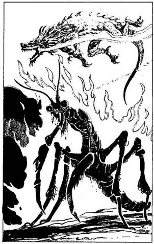
293.
A Tatsu a levegőbe emelkedik, és egyenesen K’rllknek ront. Amint a Sáska Démon hátralép, hogy támadjon, a Tatsu elsöprő lángtengert okád rá. A Sáska Démont elbontják a lángok, és pillanatokon belül porrá ég. A Tatsu hozzád fordul: - Ég áldjon, halandó, sok szerencsét. Most mennem kell. - Ezzel elszáll. A kísértetközönség mintha nagyon távolról tapsolna. A Dai-Oni tombol dühében. - Öld meg, Gargantusz, öld meg! - üvölti, erre a hatalmas bronz kecske-ember feléd indul. Ha nincs már több szövetségesed, lapozz a 364-re. Ha még van, melyiket küldöd ellene? Persze csak olyat küldhetsz, aki szerepel a Kalandlapodon! A Ki-Rint választod? Lapozz a 382-re. Vagy az Aranyszázadot? Lapozz a 198-ra.
294.
Ahogy fenyegetően megindulsz feléjük, néhány parasztnak mába száll a bátorsága, és az erdőbe menekül. Látva, hogy a társaik elfutottak, a többiek is ledobják botjaikat, és megfutamodnak. Ha úgy érzed, ennyi elég ahhoz, hogy megvédd urad jó hírnevét - lapozz a 195-re. Ha móresre akarod tanítani őket - lapozz a 331-re.

295.
Amikor eléred a dombtetőt, széles panoráma tárul eléd. Az alsó Hiang-Kiang folyó fennsíkja fekszik előtted. A távolban látod hatalmas deltáját a Kumói Póklápnál. Csak sejted, hogy arra van a Pókláp, mert párafelhő takarja. Tudod, hogy kerülő úton csak hetek múlva érnél célba, ezért egyenesen indulsz el, le a völgybe. Lapozz a 17-re.
296.
Figyelemre sem méltatja fájdalmas nyögéseidet, továbbmegy, felébreszti a többi rabot. Fekete kenyeret és poshadt vizet ad be nekik kis kémlelőablakon át. Kisvártatva visszajön, és kinyitja az ajtót. De ezúttal három katona is van vele. Ha úgy teszel, mintha megsérültél volna, aztán hirtelen megtámadod őket - lapozz a 370-re. Ha úgy teszel, mintha megsebesültél volna, majd amikor kivisznek a cellából, felkapsz egy fegyvert, és megpróbálsz elfutni - lapozz a 380-ra.
297.
Védekező állásba helyezkedsz a túlpart közelében, amikor még jó néhány zöld pikkelyes szörny emelkedik ki a vízből, és elindul feléd. Ha elsajátítottad a Karumidzsutszu tudományát, és át akarsz ugrani a fejük fölött a biztonságot jelentő szárazföldre - lapozz a 35- re. Ha inkább ottmaradsz, és megküzdesz velük - lapozz a 13-ra. Ha megadod magad - lapozz a 3-ra.
298.
Megkerülöd a vermet, és a Daloló Halált magad előtt tartva elindulsz a trón felé. Ahogy közelebb érsz, az árnyak visszahúzódnak, mert képtelenek
szembeszállni a kard hatalmával. Ha bármelyik mégis közel merészkedik hozzá, azonnal köddé válik. Lapozz a 121-re.
299.
A bíborpagoda belül tiszta, de üres. Csak egy bekeretezett tükör lóg az egyik falon. Megérinted, de mintha a tükör elnyelné a kezedet, aztán téged is. Mielőtt rádöbbennél, mi történt, a legpompásabb kertben találod magad, amit valaha is láttál. Közepén díszes medencét látsz, amelybe kristálytiszta víz folydogál. Arról a helyről, ahol állsz, több kanyargós ösvény vezet a tavacskához, de a színpompás virágokon és kúszónövényeken kívül a szobrok a legérdekesebbek. Összesen öt csodás szobor áll a kertben. Balra az első kőszobor egy ezüst Szamurájt formáz, jobbra az első egy rémes démont ábrázol, aki láncon tartja az előtte térdelő papnőt. A nőszobor csupasz vállán szitakötőt ábrázoló tetoválást látsz. Ezekhez a szobrokhoz külön utak vezetnek, és e szobrok mögött két, még félelmetesebb kőszobor áll. Az egyik kőszobor Hammurabi, a Legyek Ura, egy hatalmas szitakötő képében, a másik pedig a rettegett Tengeri Sárkánygyík, amely úgy áll talapzatán, mintha épp a vízből emelkedne ki. Lapozz a 137-re.
300.
Bátor döntésedért kapsz 1 Becsület pontot. Moichi megdöbben, mikor közlöd vele elhatározásodat, de aztán így szól: - Nos, uram, ez igen dicső tett lenne. Ismerek egy rejtett hátsó bejáratot a palotába, és tudom a jelszót is. Ott könnyen bejuthatunk, ha elfogadod egy magamfajta egyszerű harcos tanácsát, ó nagyuram! - Ezzel mélyen meghajol. Nem
tudod eldönteni, vajon Moichi gúnyt űz-e belőled vagy sem. Mindenesetre követed. Elmosolyodik, és körbevezet a hátsó falhoz, ahol a várfal a Shios’ii hegyek déli lábához ér. Megvárjátok, míg besötétedik, csak aztán közelítitek meg a kaput. Moichi odamegy a várfal egyik részéhez, és kopog rajta. A falon rés nyílik, és a holdfényben csillogó szempár jelenik meg. - Ki az? - kérdi egy suttogó hang. - Én vagyok, Moichi. Most tértünk vissza egy éjjeli őrjáratról Tsietsin nagyúr személyes parancsára. A jelszó „Cseresznyevirág”. Kisvártatva az ajtó kinyílik és ti beléptek. Egyetlen szó nélkül állon vágod a meglepett őrt, aki hangtalanul zuhan a földre. Lapozz a 136-ra.
301.
Ginsei lassan közeledik feléd. Behajlított térddel támadóállásba helyezkedik, és kardja hegyét a torkodnak irányozza. Párbajban kell megküzdened vele.
Ginsei, a ronin ÜGYESSÉG 10 ÉLETERŐ 16
Ha legyőzted, lapozz a 399-re.

302.
Mindkettőjükkel meg kell küzdened.
ÜGYESSÉG ÉLETERŐ
Első Szamuráj 7 9
Második Szamuráj 8 7
Ha mindkettőt megölted, lapozz a 310-re.
303.
Mindkét szemed kifordul, és átmenetileg teljesen megvakulsz, de aztán az egyik visszafordul a helyére, és látod, hogy egy rézkulcs meg egy zsíros, gyűrött pergamen van a bábu alatt. Mindkettőt kiveszed, aztán elhajítod a dobozt, és vakon tapogatózva elindulsz az ajtó felé, mivel a szemed időközben ismét kifordult. Lapozz a 287-re.
304.
Az Aranyszázad lovagjai hangos csatakiáltást hallatva, rendben indulnak rohamra. Egyenes kardjaik és buzogányaik azonban nem sok kárt tesznek a Sáska Démon kitinpáncéljában. K’rllk kegyetlen pontossággal csap le: minden egyes villámgyors mozdulatával kettéharap egy-egy lovagot. Perceken belül valamennyi lovag halott. Döbbenten állsz K’rllk hihetetlen ereje láttán. Húzd ki a lovagokat a Kalandlapodról. K’rllk feléd fordul, és lassan elindul. Ha nincs több szövetségesed, lapozz a 266-ra. Ha még van, kit küldesz ellene? Persze csak azt küldheted, aki szerepel a Kalandlapodon. Ha a Tatsut küldöd, lapozz a 294-re. Ha a Ki-Rint - lapozz a 278-ra.
305.
Elpusztítottad az Óriás Mormotát. Felpróbálod a vértet. Igen jól illik rád, nyersz 1 ÜGYESSÉG pontot, amikor viseled. Itt már nincs semmi érdekes, így hát továbbmászol a dombtetőre. Lapozz a 295-re.
306.
Tizenöt főből álló lovagcsapat tűnik fel előttetek az úton, Fényes, kék és zöld zománcozott páncélt viselnek. Egyikük egy zászlót visz, amit nyomban felismersz: ezek Tsietsin nagyúr Szamurájai. Amint megpillantanak, vágtára sarkallják lovaikat. - A Sógun talpnyalója! Kapjuk el! - kiáltja az egyik. Nem tudsz hova menekülni, és nemsokára elérnek. Hősiesen küzdesz, hármat a másvilágra küldesz, és többet megsebesítesz, de a túlerő végül is győzedelmeskedik. Megkötöznek, és egy ló hátára szíjaznak. - Tsietsin nagyúr elégedett lesz ezzel a fogással - mondja az egyik. Abba a nagy palotába visznek, amelyet az úton elhagytatok. A palota udvarára vezetnek, ahol Tsietsin nagyúr Szamuráj csatlósai közül sokan összegyűlnek, hogy gúnyoljanak és kinevessenek. Minden teketória nélkül a várbörtön egyik cellájába vetnek. A foglár, egy bivalytermetű férfi, viseltes bőrmellényben, kárörvendőn vigyorog rád. - Holnap majd Tsietsin Sógun elé visznek! - mondja, és rád csapja a nehéz, vasveretű tölgyfa ajtót.
Egyedül maradtál. Elvették a kardjaidat, de jobban sért a katonák gúnyolódása és megalázó elfogatásod. Veszítesz 1 Becsület pontot. Nem tehetsz mást, meg kell várnod a reggelt, így hát lefekszel a sarokban álló priccsre, és elalszol. Lapozz a 316-ra.
307.
A legbátrabb faszénégetők - négy keménykötésű, viharban edzett fickó - együtt rontanak rád, botjaikat lóbálva. Meg kell küzdened velük, de bölcsen egy fának veted a hátadat, s így egyszerre csak ketten férnek hozzád.
ÜGYESSÉG ÉLETERŐ
Első Faszénégető 6 10
Második Faszénégető 7 9
Ha megölöd az első támadódat, anélkül hogy te megsebesülnél - lapozz a 347-re. Ha megsebeznek, mielőtt az egyiket megölnéd - lapozz a 365-re.
308.
Utolsó csapásod leteríti a foglárt. Azonnal kirohansz a celládból. Hosszú, sötét folyosón állsz, csak a fáklyák fénye világítja meg valamennyire. Kétoldalt cellaajtók sorakoznak. Ha balra indulsz - lapozz a 344-re; ha jobbra mész lapozz a 356-ra.
309.
Újabb fél napi lassú, de kitartó gyaloglás után, mialatt csak elvétve léptél le az ösvényről a sárba, elered az eső. A köd ritkulni kezd, és néhány kilométerre keletre nemsokára egy dombot veszel észre a mocsár közepén. Keskenyebb ösvény vezet a dombhoz. Ha a domb felé indulsz - lapozz a 261-re. Ha folytatod utadat a lápon át - lapozz a 279-re.

310.
Kardodat hüvelyébe csúsztatva Tsietsin nagyúr után veted magad. Rövidesen utoléred, és még épp látod, amint eltűnik egy aranydíszes lakkfa ajtó mögött. Követed, és egy tágas, gazdagon díszített terembe jutsz. Az egyik sarokban aranybarnára és feketére festett lakkfa láda áll. Tsietsin a félelemtől remegve éppen kinyit egy rejtekajtót a szoba sarkában, de amikor látja, hogy már nem tudja hatalmas testét áttuszkolni a nyíláson, térdre esik előtted. Lapozz a 178-ra.
311.
Amikor még néhány pikkelyes zöld szörny emelkedik ki a vízből, és feléd indul, .a túlpart közelében fölmászol egy mohos földhányásra. Ha elsajátítottad a Karumidzsutszu tudományát, és át akarsz ugrani a fejük fölött a biztonságot jelentő szárazföldre - lapozz a 35-re. Ha inkább ott maradsz, és megküzdesz velük - lapozz a 13-ra. Ha megadod magad - lapozz a 3-ra.
312.
Előrelépsz, és a kardot a verembe hajítod. Ikiru felugrik és felsikolt: - Ne! - Hangja, akár a száraz falevelek zörgése. Amint a kard eltűnik a mélyben, a csarnok megrázkódik. Ikiru körül megremegnek az árnyak, és szertefoszlanak. Miközben a trón széthullik, süvöltő szél tör be a terembe, és széttépi Ikirut. Darabjai szétszóródnak, akár a pelyva. A barlang lassan omladozni kezd, a verem is beszakad, maga alá temetve a Daloló Halált. Bár sikerül megmenekülnöd és elpusztítottad Ikirut, a kard örökre elveszett az alvilágban.
Amikor visszatérsz Konichibe, a Sógun köszönetet
mond, de súlyos depresszió lesz úrrá rajta. A Daloló Halál nélkül Hachiman államszervezete összeomlik. A lázadó nagyurak hátat fordítanak neki, és barbárok fosztogatnak az országban, nemritkán szövetségre lépve az áruló nagyurakkal. Egy ilyen csatában esel el te is nemzeted védelmében. De minden hiábavaló; Hachiman sötét káoszba süllyed, mert küldetésed nem járt sikerrel.
313.
Lázasan téped le magadról mellvérted darabjait. A szíjak lassan engednek, és a részek egymás után a mélybe hullnak. Végre a felszínre vergődsz, és mielőtt kimásznál, kardjaidat a partra dobod. Szerencsédre a kút alján átúsztál egy természetes, vízzel teli barlangba, ahol nem sokkal a vízszint fölött egy párkányt találsz. Amikor körbetapogatózol a sötétben, egy alagútra lelsz, amelyben elindulsz. Mellvérted elveszett a föld alatti tó mélyén. Amíg nem találsz egy másik, rád illő páncélt, a fegyverek 4 ÉLETERŐ pontot sebeznek rajtad a szokásos 2 helyett. Lapozz a 363-ra.
314.
Ha továbbmész az úton, és megpróbálod észrevétlenül elkerülni Tsietsin palotáját - lapozz a 338-ra. Ha úgy gondolod, hogy meg kell védened a Sógun becsületét, és megpróbálsz behatolni a palotába, hogy megöld az árulót - lapozz a 350-re.
315.
Ha elsajátítottad a Kjudzsutszu tudományát, és rájuk akarsz ijeszteni a süvítő gömb nevű nyílvesszővel - lapozz a 21-re. Ha nem, nagyot suhintsz a kardoddal az első szörnyre, amely rád támad. Lapozz az 53-ra.
316.
Másnap reggel vékony fénysugár tűz be sötét celládba a kis ablakon át. Arra ébredsz, hogy a foglár zörget a rácson. - Ébredj kutya! - üvölti. - Nemsokára érted jövök, és Tsietsin elé viszlek! A foglár lassan továbbindul. Ha hangosan felnyögsz, mintha beteg vagy sebesült lennél, hátha az őr bejön, és megtámadhatod - lapozz a 20-ra. Ha megvárod, míg visszatér - lapozz a 40-re.
317.
A gát hosszú mérföldeken átvezet, egy olyan ősi civilizáció emlékeként, mely itt élt a deltában, mielőtt leszállt volna az örök köd. Kis Idő múltán, a térkép szerint, a tópartra vezető utat kell követned, amely azonban elágazik. Az egyik ága hatszögletű bazalt sziklakövekkel burkolt, sarló alakú út, mintha az óriások útja lenne, amely messze a ködbe vész. A másik ága a tőzeglápon át vezet, amit a térkép egy karddal átszúrt koponyával jelöl. Ha az óriások útján indulsz el - lapozz a 113-ra. Ha a lápon át mész - lapozz a 217-re. A térkép jelölése szerint a pagoda az egyik út végében áll, de nem világos, hogy melyik az az út.
318.
A kürt fülsértő hangja sokáig visszhangzik a bűzlő mocsárban, de a kígyó mintha meg sem hallaná. Lapozz a 246-ra.
319.
A tíz legöregebbnek látszó paraszt körbeüli az elöljáró háza előtt lévő kutat. Mikor odalépsz, tiszteletteljesen utat nyitnak, és maguk közé engednek. A falu elöljárója, akinek a mellét hivatásának
rangjelzése díszíti, szívélyesen invitál, hogy maradj velük, amíg az ügyeiket intézik. Aztán mintha ott se lennél, tovább csevegnek a falu dolgairól. Különös, de arról beszélnek, abbahagyják-e a földművelést. A nyugati horizonton vörösen nyugszik le a nap. Ha még napnyugta előtt elhagyod a falut - lapozz a 11-re. Ha megvárod, míg befejezik a tárgyalást - lapozz a 155-re,
320.
A Főnix a levegőbe emelkedik, és nekiront a Sáska Démonnak. Az utolsó pillanatban megáll K’rllk veszélyes állkapcsai előtt. Amint a Sáska Démon támadásba lendülne, a Főnix aranyló lángokba borul. A démon már nem tud megállni - egyenesen beveti magát a tűzbe, és azonnal lángra lobban. Elborítja a tűz, és pillanatokon belül porrá ég. A Főnix diadalmasan vijjog egyet, aztán elszáll. Húzd ki a nevét szövetségeseid listájáról! A Dai-Oni tombol dühében. - Öld meg! Gargantusz, öld meg! - üvölti erre a hatalmas bronz kecske-ember feléd indul. Ha már nincs több szövetségesed, lapozz a 364-re. Ha még van, melyiket küldöd ellene? Persze csak azt küldheted, aki szerepel a Kalandlapodon. Ha a Ki-Rint küldöd - lapozz a 382-re. Ha Eleonórát, a Boszorkányt - lapozz a 22-re.
321.
Visszautasítod az ezüst Szamuráj kihívását, aki így szól hozzád: - Becstelen ember vagy, rosszabb, mint az állat, mert az becsület nélkül születik, s így el sem vesztheti a becsületét. Csak gyalázatos halált érdemelsz. - Nem fogadtál el egy
becsületes kihívást urad, a Sógun nevében. Veszítesz 2 Becsület pontot! Az ezüst Szamuráj előrelép, hogy végezzen veled. A nap sugara vakítóan csillog a bőrén.
Ezüst Szamuráj ÜGYESSÉG 10 ÉLETERŐ 12
Ha háromszor eltalálod - lapozz a 291-re.
322.
Az áruló Tsietsin nagyúr halott. Megvédted a Sógun és Hachiman becsületét. Nyersz 1 Becsület pontot, mert megszabadítottad az országot a gonosz Tsietsin nagyúrtól, és saját palotájában ölted meg. Körbenézel a gazdagon díszített szobában. Leginkább a láda vonja magára a figyelmedet. Gyorsan kinyitod. Találsz benne 100 Aranytallért, egy nyílvesszőt és egy gyönyörűen megmunkált Szamurájpáncélt, amely nyilván túl szűk volt az elhízott Tsietsinnek. Felpróbálod a páncélt, és úgy találod, jobb, mint az eddigi, mert különösen könnyű fémből készült. Nyersz 1 ÜGYESSÉG pontot. Ha értesz a Kjudzsutszuhoz, rájössz, hogy a nyilat a legendás Kjudzsutszu-mester, Tsunevara készítette, akiről az a hír járja, hogy varázshatalma volt. A vessző végét sastollak díszítik, amelyek minden bizonnyal gonosz szellemek elűzésére szolgálnak. Jegyezd fel a Kalandlapodra. Kintről hirtelen kiáltásokat hallasz, és fegyvercsörgés zaját. Tsietsin emberei bármelyik pillanatban itt lehetnek. A nyitott rejtekajtóhoz rohansz, és becsukod magad mögött. Lépcsők vezetnek le a koromsötétbe. Óvatosan elindulsz. Lapozz a 122-re.
323.
A sziklagát szélén földet érsz, és menthetetlenül az alant tajtékozó fehér vízbe esel. Balszerencsédre a pikkelyes szörnyek kihegyezett karókkal tűzdelték tele a medret, s most fennakadtál rajtuk. Mellvértedet több helyen átszúrták. Veszítesz 5 ÉLETERŐ pontot. Ha még életben vagy, kiszabadítod magad a karók fogságából, és a víz a partra sodor, ahol a két szörny nem tud elérni. Lapozz a 311-re.
324.
Engedsz a csábításnak. - Hatalmam és vagyonom lesz - gondolod, miközben féltérdre ereszkedsz Ikiru előtt, és átnyújtod neki a kardodat. - Hű szolgád leszek, ó uram! - A megidézett démon eltűnik, és Ikiru felnevet - hangja akár a száraz falevelek zörgése. - Te bolond - suttogja, és rád parancsol, hogy öld meg magad. Nem tudsz ellenállni az akaratának. Szeppukut követsz el, és iszonyú kínok közt meghalsz.
325.
Mielőtt egy szót szólhatnál, az egyik Kappa egy szigonyt hajít ki a víz alól. Tedd próbára a SZERENCSÉDET! Ha SZERENCSÉD van - lapozz a 367-re. Ha nincs SZERENCSÉD - lapozz a 373-ra.

326.
Ha továbbmész az úton - lapozz a 362-re. Ha látogatást teszel Tsietsin nagyúrnál, és megkéred, hogy valami módon segítsen - lapozz a 376-ra.
327.
A láda darabokra törik, amikor leesik, és egy kis fémtárgy gurul ki belőle, de te egy szempillantás alatt kiugrasz a kunyhóból, és úgy döntesz, hogy inkább letáborozol valahol az erdőben. A szemed már nem fáj, nem viszket, de az egyik még ugrál egy kicsit, mintha kancsal lennél. Ilyenkor ezzel a szemeddel egyáltalán nem látsz. Ezt a vívótudományod igencsak megsínyli, amíg a sárkánybábu átka rajtad van. Veszítesz 1 ÜGYESSÉG pontot. Lapozz a 371-re.
328.
Magasra emeled a rubint, de az semmi hatással nincs rá. Továbbra is arra gondol, milyen finom falat leszel a számára. Lapozz a 246-ra.
329.
Amint elered a barlangot, a rengés abbamarad, de úgy döntesz, mégis bemész, hátha ez csak egy sokkal erősebb rengés előzménye volt. Fáklyát gyújtasz, és körülnézel. Mindenütt rózsaszín kalcitvirágok borítják a kicsiny barlang falait, mely olyan, mint egy korallzátony. A kővirágok közt egy csodás zománcozott mellvértet fedezel fel. Kissé poros és dohos de még mindig csillognak rajta a Hetedik Pecsét Seregének arany és kék színei. Ha elveszed a mellvértet - lapozz a 271-re. Ha rögtön továbbmész - lapozz a 375-re.
330.
Eleonóra előrelép. A Sáska Démon fölé tornyosul, de a nő összeszorítja a két kezét, és pusztító kék villámot lövell a sáskára. A villám azonban sziporkázva verődik vissza a kitinpáncélról, és elenyészik a levegőben. A Démon gyorsan előrenyújtja a nyakát, beleharap a nőbe, és fölfalja. Húzd ki Eleonóra nevét a Kalandlapodról. K’rllk nem habozik, feléd indul. Ha már nincs több szövetségesed, lapozz a 266-ra. Ha még van, melyiket küldöd ellene? Persze csak azt küldheted, aki szerepel a Kalandlapodon. Ha a Főnixet küldöd - lapozz a 320-ra. Ha a Ki-Rint - lapozz a 278-ra.

331.
Kardodat lóbálva berohansz az erdőbe a szemtelen ifjú után, aki közben kitör a rejtekétől, és átrohan a nyílt tisztáson. Ahogy utánaerednél, egy vascsapda csapódik a lábadra, és szilánkokra zúzza a sípcsontodat. Szorosan tart, akár egy satu. A földre rogysz, és elfojtasz egy nyögést. A csapda vasból van, így előbb halsz szomjan, semmint kiszabadulnál a fogságából. Veszítesz 3 ÉLETERŐ pontot. Ha még életben vagy, 5 segítségért kiáltasz a faszénégetőknek - lapozz a 37-re. Ha csöndben meglapulsz és vársz - lapozz a 65-re.
332.
A zajra őrök rontanak a cellába. Egyikük keresztüldöf a lándzsájával. A cella mocskos padlójára zuhansz, és néhány hörgés után kileheled a lelkedet.
333.
A szigony hegye átdöfi a vértedet, és eltöri az egyik bordádat. Elveszítesz 2 ÉLETERŐ pontot. Ha még életben vagy, és azonnal tovább akarsz állni - lapozz a 335-re. Ha kihúzod a szigonyt a hátadból, és megpróbálsz ráijeszteni vele a Kappákra - lapozz a 361-re.
334.
Nem sikerült elég magasra ugranod. Az élőholt Szamuráj elkapja a lábadat, és leránt a földre. Azonnal felpattansz, de a csontvázak már körülvettek. Lapozz a 358-ra.

335.
Senki sem üldöz, amint magad mögött hagyod a Kappák gázlóját, de nemsokára új veszélyek feledtetik a régiek emlékét. A felső Hiang-Kiang folyó völgyén túl egy palahegység emelkedik, gerince mint a fűrész mered az ég felé. Közeledsz a csúcshoz, amikor a lábad alatt remegni kezd a hegy. Egész Hachimant úgy rázza a földrengés,
mintha kocsonyává vált volna. Nem messze szűk barlangnyílást fedezel fel. Ha bemászol - lapozz a 205-re. Ha inkább a földre veted magad ott, ahol vagy - lapozz a 103-ra.
336.
Moichi megsebesült, de megölte ellenfelét. Megpihensz egy pillanatra. Moichi boldogan rád vigyorog. - Jó harcos vagy, uram. Dicsőség az oldaladon harcolni - mondja, és mélyen meghajol előtted. - Elég ebből a leplezett gúnyolódásból! - feleled. - Nyomás befelé!
Végigrohantok a palota egyik hosszú folyosóján, és csakhamar eltévedtek a folyosók és szobák útvesztőjében, melyek többsége most üres, csupán a szolgák és rabszolgák teszik dolgukat, és döbbenten merednek rátok. Amint az egyik sarkon befordultok, a földbe gyökerezik a lábad az elétek táruló látványtól. Egyenesen Tsietsin nagyúrba botlottatok, aki egy-egy Szamurájával az oldalán totyogva közeledik felétek a folyosón. Tsietsin nagy testű, kövér ember, dagadt, párnás pofazacskója, lefittyedő, hatalmas szája van. Két apró malacszemét felháborodottan mereszti rátok. Többrészes kimonó van rajta, fölötte hatalmas, arany- levelekkel díszített palást. Fején büszkén viseli a Sóguni rangot jelképező fejdíszt. Mikor felismer, ijedten zihálva jelt ad testőreinek, majd sarkon fordul, és eldübörög. A Szamurájok kardot rántanak, meghajolnak előttetek, és rátok támadnak. Moichi azonnal nekiugrik az egyiknek. Neked a másikkal kell megküzdened.
Tsietsin Testőre ÜGYESSÉG 9 ÉLETERŐ 8
Ha legyőzted, lapozz a 354-re.
337.
Az Óriás Mormota széles hátával és nyolc rövid lábával olyan, akár egy nagy, mozgó emelvény. A háta közepén lévő rés a szája, melynek szélei kezdenek szétnyílni, hogy bekapjon. Testén körben farkak lógnak, ezek végeit csontgolyók díszítik, mint megannyi élő buzogány. Kardot rántasz, hogy megküzdj vele, de egyensúlyoznod is kell a hátán, ezért erre a harcra vonj le 1 pontot az ÜGYESSÉGEDBŐL!
Óriás Mormota ÜGYESSÉG 8 ÉLETERŐ 22
Ha legyőzted, továbbmész a barlangba. Lapozz a 355-re.
338.
Továbbgyalogolsz. Errefelé már kevésbé művelik a földeket, sokkal több az ugar. Hamarosan két erdő borította domb között haladsz egy sekély völgyben. Tedd próbára a SZERENCSÉDET! Ha SZERENCSÉD van - lapozz a 386-ra. Ha nincs SZERENCSÉD - lapozz a 306-ra.

339.
Az ösvény sok más ösvényt keresztezve továbbkanyarog, míg végül teljesen eltévedsz a ködben. Megállsz, hagy tájékozódj, de elkezd esni az eső, és a pára még mindig nem oszlik. Két teljes napon át zuhog, és a vízszint mára fejed fölött van. A Póklápból nincs menekvés. Még hosszú kilométereket úszol, de a végén meg- halsz a kimerültségtől.
340.
A Ki-Rin jóságos tekintete békével és nyugalommal tölt el. - A te ügyed igazságos, halandó, és megérdemled, hagy sikerrel járj. Szíved nemes, ezért segíteni fogok neked. Ott leszek a Csata Színhelyén, és melletted fogok harcolni a Dai-Oni és gonosz csatlósai ellen. - Csodálatos hangját élvezettel hallgatod. Éppen köszönetet mondanál, amikor vad üvöltéssel a levegőbe emelkedik, és magadra hagy. Egy ajtó jelenik meg előtted a levegőben. Átlépsz rajta, és újra a Középpontban találod magad: a csillagok és a nyolc ajtó vesz körül. Jegyezd fel a Ki-Rint a Kalandlapodra, a szövetségeseid közé. Lapozz vissza a 8-ra, és válassz újra. Persze nem választhatsz olyasmit, amit már kipróbáltál!
341.
Az ezüst Szamuráj harcra készen lép előre. Vakítóan csillog a teste a napfényben.
Ezüst Szamuráj ÜGYESSÉG 10 ÉLETERŐ 12
Ha háromszor eltalálod - lapozz a 291-re.

342.
Messze jársz már, mire az őrök észbe kapnak, de amikor meglátják, hogy hova mész, nem üldöznek. Kisvártatva egy fegyverekkel, ruhákkal és hasonlókkal zsúfolt szobába érsz. Megtalálod a kardjaidat, de nincs más kijárat, csak az, amelyen bejöttél. Csapdába estél. Visszarohansz a folyosón, de ott már legalább tíz őr vár rád. Neked rontanak. Hősiesen harcolsz, jó néhányat megölsz közülük a szűk folyosón, de az egyik lándzsa gyomorszájon talál. Holtan esel össze.
343.
A puha anyag szinte súlytalan. Begyömöszölöd a hátizsákodba, és kilépsz a konyhából, hogy száraz táborhelyet keress az erdőben. Lapozz a 371-re.
344.
Balra rohansz, végigszáguldasz a nyirkos, büdös börtönfolyosón. Kiáltást hallasz elölről. - Hida, te vagy az? - kérdi valaki, aztán egy elnyomott szitok s lépések zaja hangzik fel. Egy őr közeledik feléd. Megpróbálsz beleolvadni az árnyékba, de ahhoz túl világos van a folyosón. Az őr meglepődik, amikor megpillant, és ekkor nagyot sújtasz rá. Hátratántorodik, de aztán kardot ránt, és rád ront, arcán a düh és a fájdalom kifejezése keveredik. Meg kell küzdened vele, de vonj le 2 pontot az ÜGYESSÉGEDBŐL, mert a kardjaid nélkül harcolsz.
Őr ÜGYESSÉG 7 ÉLETERŐ 9
Ha legyőzted, lapozz a 88-ra.
345.
A szemedet marja a gáz, amit az Elhagyott áraszt magából, ha a bőrét felsértik. Végigvonszolod magad a járaton, mely szerencsédre a falutól nem messze, a domboldalba nyílik. Úgy tűnik, hogy a Rokuro-Kubik megálltak az Elhagyott hullájánál, és így sikerül megmenekülnöd a falujukból. Kapsz 1 SZERENCSE pontot, amiért túlélted ezt a kalandot. Lapozz a 397-re.
346.
A Sáska Démon fekete vérébe fagyva, holtan fekszik előtted. A Dai-Oni dühödten üvölti: - Gargantusz! Pusztítsd el ezt a halandót! - és a Bronzember elindul feléd. Lapozz a 364-re.
347.
A faszénégetők látják, hogy sebezhetetlen vagy. Miután az egyiket megölted, a többiek a lábad elé vetik magukat, kegyelemért könyörögve. Közlöd velük, hogy bolondok, ha azt hiszik, árthatnak a Sógun bajnokának. A legöregebb azt mondja, ha megkíméled az életét, elvezet egy faluba, ahol biztonságban töltheted az éjszakát. Ha ráparancsolsz, hogy vezessen a faluba - lapozz a 179-re. Ha rákényszeríted őket, hogy esküdjenek hűséget a Sógunnak - lapozz a 163-ra.

348.
Amint a Főnix közelebb ér hozzád, furcsa meleget érzel a hátizsákodban. Belenyúlsz, és kiemeled a Főnixes Rubint. Egyre melegebb lesz, és halványvöröses fényt áraszt magából. Ösztönösen a magasba emeled. A Főnix újabb vad vijjogást hallat, és egy pillanatra aranyló lángokba borul, aztán nem messze tőled leszáll a földre. Különös tekintettel néz rád, vörösen izzó szeme meg-megvillan. Egyetlen szó nélkül agyadba vési az üzenetet: - Segítek neked, ó Rubinhordozó. Ott leszek a Csata Színhelyén. - Aztán elszáll. Jegyezd fel a nevét szövetségeseid közé. Megfordulsz, és belépsz az ajtón. Lapozz vissza a 8-ra, és válassz újra. Persze nem választhatod ugyanazt, amit már kipróbáltál.

349.
A démon és a papnő szobrához érsz. A varázsló újra megjelenik, és a két szobor; a fekete bőrű, vörös szarvú démon meg a sápadt papnő életre kel. A nő a lábaid elé veti magát, és térden állva könyörög, hogy mentsd meg őt a Démonok Vermétől, de fogvatartója durván megrántja a láncot, és a nő a földre zuhan. Aztán a démon hozzád vágja a láncot, és elmormolja a Kővé-változtatás varázslat igéit. Kővé dermedsz, és a helyébe kerülsz, ő pedig most már szabad. Kíváncsian nézel
a földön fekvő papnőre, aki újból szoborrá vált. Amíg be nem téved egy bátor utazó a bíborpagoda falai közé, nem lehet részed az életben.
350.
Bátor döntésedért nyersz 1 Becsület pontot. Határozott léptekkel indulsz el Tsietsin nagyúr palotája felé. Amint közelebb érsz, észreveszed a falat őrző katonák fegyvereinek csillogását. Ha egyenesen a kapuhoz mész, és megpróbálsz valamilyen csellel bejutni - lapozz a 374-re. Ha megkerülöd a palotát, és keresel egy alkalmas helyet, ahol belopózhatsz - lapozz a 388-ra.
351.
A nyilad célt téveszt, de a faszénégetők így is értenek belőle. Visszavonulnak az erdőbe, ahol a fákat vágják. Csak a legöregebb marad ott a fiával, és közli: ha meghagyod az életét, elvezet egy biztonságos helyre, ahol eltöltheted az éjszakát. Ne mondhassák, hogy az ő családja nem tisztel egy Szamurájt. Lapozz a 179-re.
352.
A Ki-Rin rosszallóan néz rád. Mielőtt elszállna, még egy utolsó, megvető pillantást vet rád, majd otthagy a hegy tetején a jeges szélben és esőben. Egy ajtó jelenik meg előtted, és te rögvest kihasználod a lehetőséget, hogy elhagyd ezt a barátságtalan helyet. Visszalépsz a Középpontba. Körülötted a csillagok látszanak, és a nyolc ajtó. Lapozz vissza a 8-ra, és válassz újra. De csak olyasmit választhatsz, amit eddig még nem próbáltál ki.
353.
Lázasan téped le magadról a mellvérted darabjait, de a hideg víz teljesen legyengített. Fuldokolsz, és elveszted az eszméletedet. Mire a Rokuro-Kubik odaérnek, hogy puha húsodból lakmározzanak, már megfulladtál.
354.
Moichi is megölte az ellenfelét, de megsebesült. Kardotokat a hüvelyükbe csúsztatva Tsietsin nagyúr után vetitek magatokat. Hamarosan beéritek, és még épp látjátok, amint eltűnik egy aranydíszes, fekete lakkfa ajtó mögött. Követitek őt Moichival, és egy tágas, gazdagon díszített terembe juttok. Az egyik sarokban egy aranydíszes, fekete lakkfa láda áll. Tsietsin a félelemtől remegve éppen kinyit egy rejtekajtót a szoba sarkában. Mikor látja, hogy már nem tudja átpréselni hatalmas testét a nyíláson, térdre esik előtted.
- Könyörülj rajtam, dicső harcos, könyörülj. Ikiru volt: ő kényszerített rá, hogy a törvényes Sógun ellen forduljak. Bocsáss meg nekem, mostantól fogva hűséges alattvalód leszek!- hadarja el átlátszó kis hazugságait. Amint lenézel rá, csak megvetést és undort érzel. Tsietsin szeme összeszűkül, arcára ravasz gonoszság ül ki. Jobb keze hirtelen meglendül, és tűhegyes tőrt röpít a combodba. Veszítesz 3 ÉLETERŐ pontot! Ha még életben vagy, meglepetten hőkölsz hátra, miközben ő talpra ugrik, és kardot ránt. - Légy átkozott, te disznó! - üvölti, és rád támad.
Moichi előreszökken, és perceken belül végeztek az árulóval. Lapozz a 366-ra.
355.
A fáklya fényénél látod, hogy egy színpompás barlangban állsz; mindenütt rózsaszín kalcitvirágok borítják a falat, mint egy korallzátonyt. A kővirágok között egy csodás páncélt fedezel fel. Kissé poros és dohos, de még mindig csillognak rajta a Hetedik Pecsét Seregének arany és kék színei. A Hetedik Pecsét Seregének tagjai az első Sógun dicső testőrei voltak. Mióta ötszáz évvel ezelőtt nem adták meg magukat a tízszeres túlerőnek, s mind egy szálig lemészárolták őket, senki sem hallott felőlük. A páncél ősrégi, de a minősége kitűnő. A kővirágok csörömpölve törnek le, ahogy kiemeled a páncélt, és elégedetten tapasztalod, hogy pontosan illik rád, és meglepően könnyű. Nyersz 1 ÜGYESSÉG pontot, míg ezt a vértet viseled, hála a benne rejlő varázserőnek. Mivel semmi más figyelemre méltó nincs a barlangban, úgy döntesz, hogy továbbmész és megmászod a gerincet. Lapozz a 295-re.
356.
Jobbra rohansz a cellaajtók mellett, de nem jutsz tovább a börtönfolyosón. A végében egy nagy, négyzet alakú szobába jutsz. A szoba tele van fegyverekkel, ruhákkal és más effélékkel, legnagyobb örömödre az egyik sarokban felfedezed a saját fegyvereidet. Gyorsan fölkapod őket, és újra
egész embernek érzed magad. Nyersz 1 SZERENCSE pontot kardjaid visszaszerzéséért. Sok nyílvessző is található itt - ha jártas vagy a Kjudzsutszu tudományában, összeszedhetsz néhányat közülük. Semmi más érdekes nincs itt, így hát megfordulsz, és a folyosón, régi cellád előtt elhaladva, a másik irányba indulsz. Lapozz a 132-re.

357.
Egy pillanattal azután, hogy kezed megragadta a katana markolatát, a hozzád legközelebb álló szörny lassan úszni kezd a túlpart felé. A fejetlen test, még mindig a hálót markolva, élettelenül hanyatlik a víz alá. A másik a gázló felé tart, és épp csak annyi időd van, hogy életedet kockáztatva, a csúszós zöld nyalkán egyensúlyozva elérd a túlpartot. Lapozz a 395-re.
358.
Az élőholt Szamuráj hat csontvázat keltett életre, de egyszerre csak három tud a közeledbe férkőzni. Egyszerre kell megküzdened velük.
ÜGYESSÉG ÉLETERŐ
Első Csontváz 6 7
Második Csontváz 7 6
Harmadik Csontváz 7 7
Ha mind a hármat legyőzted, meg kell küzdened a következő hárommal is.
ÜGYESSÉG ÉLETERŐ
Negyedik Csontváz 7 6
Ötödik Csontváz 6 7
Hatodik Csontváz 8 9
Ha ezeket is elpusztítottad - lapozz a 368-ra.
359.
Óvatosan kiveszed a ládikát a titkos rekeszből és a szalmával borított padlóra helyezed, aztán a wakizasid hegyével fölfeszíted a zárat, de közben kezeddel a szemedet véded egy esetleges tűzcsapda ellen. A láda kinyílik, és egy kis rugós sárkánybábu pattan ki belőle. Orrlyukaiból gőz csap ki, és narancssárga füst lepi el a fejedet. A füst a szemedbe száll, csípni kezd, hogy a szemed majd kifordul. Ha ledobod a ládát és távozol - lapozz a 327-re. Ha belesel a bábu alá - lapozza 303-ra.
360.
A Főnix veszélyesen közel száll el melletted. Hirtelen lángba borul, aranyló tűzlabdává válik, és megperzsel. Veszítesz 2 ÉLETERŐ pontot. Ha még életben vagy és harcolsz a Főnixszel - lapozz a 372-re. Ha megpróbálsz visszarohanni a mögötted lógó ajtón - lapozz a 390-re.
361.
Rájuk ijesztesz, hogy seregnyi Szamurájt hozol ellenük, akik mindenkit lemészárolnak, ha nem segítenek utadon. A sárga szemek megvillannak, aztán az egyik szörny hirtelen kiemelkedik a vízből, és egy csillogó vörös ékkövet hajít a lábad eléd - Ez a legnagyobb kincsünk - sziszegi. - Most pedig menj utadra. - Az ékkő egy Főnix alakú rubin. Valóban ritka kincs, egy gazdag kereskedőtől származik, aki valaha megpróbált átkelni a folyón. Jegyezd föl a Kalandlapodra! A Kappák eltűnnek, és te továbbindulsz. Lapozz a 335-re.
362.
Továbbgyalogolsz. A földet erre kevésbé művelik, sokkal több az ugar. Kis idő múltán két erdő borította domb közt húzódó sekély völgyben visz az utad. Tedd próbára a SZERENCSÉDET! Ha SZERENCSÉD van-lapozza 386-ra. Ha nincs SZERENCSÉD - lapozz a 396-ra.
363.
A hátborzongató, csattogó zajból tudod, hogy a Rokuro-Kubik a nyomodban vannak. Vakon tapogatózol tovább. Hirtelen valami nyálkás dolog ér az arcodhoz, és megéget. Sav mart beléd. Vesztesz
3 ÉLETERŐ pontot. Ha még életben vagy, riadtan hőkölsz hátra. A kénkőszag félreismerhetetlen. Ez egy Elhagyott, vagyis egy gonosz élőholt lélek, akinek a testét nem temették el tisztességgel, a lelkét pedig megátalkodott gonoszsága miatt nem fogadta be a túlvilág. Meg kell küzdened vele a koromsötétben. Vonj le 2 pontot az ÜGYESSÉGEDBŐL erre a harcra, mert csak egy halvány, sárgán izzó, kísérteties körvonalat látsz.
Elhagyott ÜGYESSÉG 7 ÉLETERŐ 9
Ha legyőzted, lapozz a 345-re.
364.
A szeme fellángol, és két vörös fénycsíkot lövell feléd, amelyeket éppen csak sikerül elkerülnöd. Meg kell küzdened a Gargantusszal, a bronzóriással. Minden harmadik Fordulóban vöröslő villámot lövell a szeméből. Ilyenkor dobj egy kockával. Ha a dobott szám páros, elkerülted a villámot, de ha páratlan, eltalált, és veszítesz 4 ÉLETERŐ pontot.
Gargantusz ÜGYESSÉG 9 ÉLETERŐ 12
Ha legyőzted, a Dai-Oni mérgében morogva felkap egy tüskés vasbuzogányt, egy Tetsubót, és elindul feléd. Lapozz a 292-re.
365.
Első támadód vérbe fagyva fekszik előtted, de a te véred is kicsordult és a zöld gyepre csorog. A parasztok látják, hogy nem vagy sebezhetetlen. Újabb faszénégető támad rád, egy hatalmas, nagy
darab ember, akinek a kezében meglendül az egyik boksából kihúzott, égő husáng.
Tüzes husánggal ÜGYESSÉG 10 ÉLETERŐ 10
támadó
Ha öt Forduló után még életben vagy - lapozz a 377-re. Ha addig megölöd - lapozz a 389-re.

366.
Az áruló Tsietsin nagyúr halott. Megvédted a Sógun és Hachiman becsületét. Nyersz 1 Becsület pontot, mert megszabadítottad az országot a gonosz Tsietsintől, és saját palotájában ölted meg. - Most már bosszút álltál a Sógunért és a falusiakért - mondja Moichi, aki leült pihenni, és tétlenül nézi, hogy átkutatod a szobát.
Mindenütt gazdag díszeket látsz, de főleg a láda vonja magára a figyelmedet. Gyorsan kinyitod. Találsz benne 100 Aranytallért, egy nyílvesszőt és egy csodásan megmunkált Szamurájpáncélt, amely nyilván szűk volt az elhízott Tsietsinnek. Felpróbálod a páncélt, és sokkal jobbnak találod az eddiginél, főleg azért, mert különösen könnyű fémből készült. Nyersz 1 SZERENCSE pontot. Ha értesz a Kjudzsutszuhoz, azonnal felismered, hogy a vesszőt a legendás Kjudzsutszu-mester,
Tsunevara készítette, akiről azt beszélik, varázshatalma volt. A nyílvessző végét sastollak díszítik, amelyek minden bizonnyal a gonosz lelkek elűzésére szolgálnak. Jegyezd fel a Kalandlapodra!
Kintről hirtelen kiáltozás és fegyvercsörgés hallatszik. Tsietsin emberei bármelyik pillanatban itt lehetnek. A nyitott rejtekajtóhoz ugrotok, bemásztok rajta, és az ajtót magatokra zárjátok. Óvatosan elindultok lefelé a lépcsőkön a koromsötétben. Lapozz a 378-ra.
367.
A szigony egy alacsony faágba áll bele. Kihúzod, és ráijesztesz a Kappákra, amelyek lemerülnek a zöld mélységbe, csak sárgán csillogó szemük látszik ki. Ha otthagyod őket - lapozz a 335-re. Ha beszélni akarsz velük - lapozz a 361-re.

368.
A csontvázak szétszórt szilánkjai körülötted hevernek. Az élőholt Szamuráj síri csöndben közelít meg, hogy utoljára küzdjön meg veled.
Élőholt Szamuráj ÜGYESSÉG 9 ÉLETERŐ 3
Ha legyőzted, a földre zuhan, és lassan szétporlad. Az ég kivilágosodik, és a vörös szín eltűnik a folyóból.
A Szamuráj maradványai közt találsz egy gyönyörűen megmunkált elefántcsont kürtöt, amelynek az oldalát ezüst kardfogú tigris díszíti. Fölemeled, és továbbindulsz. Lapozz a 211-re.
369.
Kitartásod nem volt hiábavaló. Hihetetlen látvány tárul eléd a ködben. A bíborpagoda fölött mintha megállt volna az idő. Nincs dohszag, korhadás nyomát sem látod, a festés is hibátlan. Amint odaérsz, a vörös kapu kitárul, szinte hív, hogy lépj be. Ha vállalod a kockázatot, és belépsz, lapozz a 299-re. Ha inkább visszamész, és az Óriások útjával próbálkozol - lapozz a 113-ra.
370.
Elég meggyőzően nyögsz a fájdalomtól, és amikor az egyik katona föléd hajol, hirtelen rátámadsz. Mivel nincs kardod, csakhamar sarokba szorítanak. A dulakodás zajára még több őr rohan be a cellába. Egyikük a lándzsájával keresztülszúrja a mellkasodat. Holtan zuhansz a cella mocskos padlójára.
371.
Ginsei kunyhója közelében az erdő csendes és száraz. Pihenésedet nem zavarja semmi, felfrissülve ébredsz. Visszakapsz 3 ÉLETERŐ pontot. Amint a nap narancs korongja lassan kiemelkedik a hajnali párából, eldöntöd, merre menj. Ha folytatod az utat északnak, a Hosszú dombokon át - lapozz a 237-re. Ha északnyugatnak mész, Kanshuro falvai és völgyei felé - lapozz a 219-re.
372.
A Főnix nem a csőrével vagy a karmaival támad, hanem megpróbál elég közel repülni hozzád, hogy megperzselhessen. Valahányszor eltalál, dobj egy kockával, és vonj le 1 pontot a dobott értékből: ennyi ÉLETERŐ pontot sebzett rajtad a tűz. (Ha szerencsés vagy, nem vesztesz ÉLETERŐ pontot!)
Főnix ÜGYESSÉG 9 ÉLETERŐ 7
Ha legyőzted, lapozz a 36-ra.
373.
A szigony hegye a mellkasodba fűződik. Ha van rajtad mellvért - lapozz a 333-ra. Ha nincs - lapozz a 39-re.
374.
Úgy közeledsz az úton, mintha te lennél a palota tulajdonosa. A kapuban álló két őr közönyösen néz rád. Közlöd velük, hogy ronin vagy, magányos Szamuráj és szeretnél Tsietsin nagyúrhoz csatlakozni. Bólintanak, az egyik odalép a vastag kapuhoz, bekopog, majd belép. Kisvártatva egy kimonós ember jön ki. - Ieratsu vagyok, Tsietsin nagyúr hadnagya. Gyere velem. - Az ajtóra mutat, és te belépsz a tágas palotaudvarra. Ieratsu hirtelen felkiált. - Ha valóban ronin vagy, miért támadtad meg az embereimet a faluban? Besétáltál a kelepcébe, Sógun bajnokai - Egy csapat harcos rohan ki az udvarra, annyian vannak, mint a patkányok, és szorosan körülfognak. Túl sokan vannak, nem kell
hozzá sok idő, legyőznek és elfognak. Belöknek a várbörtön egyik cellájába. A foglár, egy bivalytermetű férfi viseltes bőrmellényben, gúnyosan így szól:
- Holnap reggel Tsietsin Sógun elé visznek! - Ezzel rád csapja a nehéz, vasveretű tölgyfa ajtót.
Egyedül maradtál! Elverték a kardjaidat, de jobban sért a katonák gúnyolódása és megalázó elfogatásod. Veszítesz 1 Becsület pontot! Nincs mit tenned, meg kell várnod a reggelt. Lefekszel a sarokban álló priccsre, és elalszol. Lapozz a 316-ra.
375.
Amint megfordulsz, hogy kimenj, látod, hagy a bejárat előtt egy hatalmas, mozgó sziklaszerű valami áll. Ez egy Óriás Mormota: akkora, akár egy hatalmas szikla, és nyolc rövid, vaskos lábon jár. A testéből körben farkak lógnak, végükön csontgolyó, mint megannyi élő buzogány. A háta közepén hatalmas rés tátong, ez a szája. Nincs hova bújnod a barlangban, meg kell küzdened veje.
Óriás Mormota ÜGYESSÉG 8 ÉLETERŐ 22
Ha legyőzted, lapozz a 305-re.
376.
Követed Tsietsin nagyúr palotájához vezető utat, amely szántóföldeken visz keresztül, ahol parasztok dolgoznak. A palota tölgyfa kapuja előtt két őr áll, Tsietsin nagyúr katonáinak egyenruhájában. Ahogy közelebb érsz, a kapu kitárul, és egy kimonós ember lép ki rajta, övébe tűzött két karddal. Mélyen meghajol előtted. - Légy üdvözölve, Sógun
bajnoka! Ieratsu vagyok, Tsietsin nagyúr hadnagya. Fáradj be! - Amint belépsz a kapun, az becsukódik mögötted. Odabent húsznál is több, felfegyverzett Szamuráj vár. - Sajnos - mondja Ieratsu - Tsietsin nagyúr kikiáltotta magát az új Sógunnak. Kihei Hasekawa sültbolond, és azok is, akik még vele tartanak. - Int a katonáknak, és azok neked rontanak. Hősiesen küzdesz, de túl sokán vannak, és nemsokára felülkerekednek. Belöknek a várbörtön egyik cellájába. A foglár, egy bivalytermetű férfi viseltes bőrmellényben, gúnyosan így szól: - Holnap majd Tsietsin Sógun elé visznek! - ezzel rád csapja a nehéz, vasveretű tölgyfa ajtót. Egyedül maradtál. Elvették a kardjaidat, de jobban sért a katonák gúnyolódása és megalázó elfogatásod. Veszítesz 1 Becsület pontot. Nincs mit tenned, meg kell várnod a reggelt, így hát lefekszel a sarokban álló priccsre és elalszol. Lapozz a 316-ra.
377.
A csata tovább dúl és a faszénégetők égő fáklyák özönét akarják rád zúdítani. Tedd próbára a SZERENCSÉDET! Ha SZERENCSÉD van - lapozz a 7-re. Ha nincs SZERENCSÉD - lapozz a 23-ra.

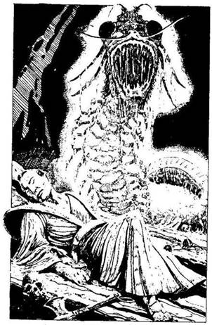
378.
A lépcső egy csupasz falig vezet. Mikor nekidőltök, hatalmas csattanás kíséretében elmozdul a helyéből. Egy nyirkos és büdös folyosóra léptek. Balra vasrács zárja el a felfelé vezető lépcsőket. Nincs más választásotok, elindultok a folyosón, amelynek a végében tejfehér fény dereng.
Ahogy közeledtek, a bűz egyre elviselhetetlenebb. Egy hatalmas barlangba juttok, ahonnan a halvány fény kiszüremlett, de a fény forrását nem látjátok. Csontok, régi rongyok és rozsdás fegyverek hevernek szanaszét a földön. Ekkor hirtelen megpillantod a fény forrását, egy hatalmas izzó alakot, mely felétek közeleg. Irdatlan nagy, fogakkal szegélyezett szája kinyílik, és be akar kapni. Két óriási, kimondhatatlanul sötét korong formájú szeme rátok mered, - ősi gonoszság tükröződik benne. Csontos, szelvényes testét több száz fürge láb tartja. Ennek a testnek a piszkosfehér színe bocsátja ki magából a halvány fényt. Ez egy Mukade, vagyis egy körülbelül négy méter hosszú, óriás százlábú.

Moichi felsikolt rémületében, te pedig döbbenten lépsz hátra. A szörny egy kígyó gyorsaságával csap le Moichira, és egyből leharapja a fél kezét meg a vállát. A szerencsétlen fickó egy halk nyögéssel összeesik. A látvány sajnálattal és dühvel tölt el, de a szörny közben feléd fordult, hogy téged is felfaljon. Ha értesz a Kjudzsutszuhoz, és még megvan az íjad meg a nyilaid, kettőt belelőhetsz, mielőtt megtámadhatna. Ha legyőzöd, ezeket a
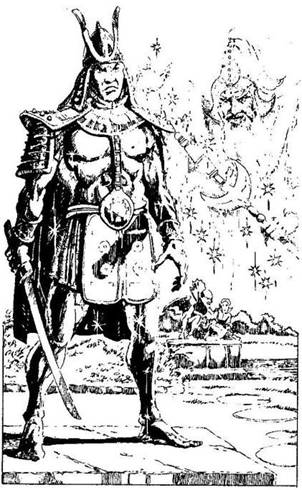
vesszőket akkor sem tudod majd újra felhasználni. Meg kell küzdened vele.
Mukade ÜGYESSÉG 7 ÉLETERŐ 20
Ha legyőzted, lapozz a 384-re.

379.
Ahogy óvatosan közeledsz az ezüst Szamuráj felé, az udvari varázstó mellette terem, és finom kék port hint rá. - Aha, vállalkozó szellemű barátom, másodjára is találkozunk - mondja, és újra eltűnik egy füstfelhőben. A Szamuráj továbbra is ezüstösen csillog, de most mozog és beszél: - Kihívlak párbajra, urad becsületéért. - Ha elfogadod - lapozz a 341-re. Ha visszautasítod a kihívást - lapozz a 321
380.
Fájdalmas nyögéseket hallatsz. - Biztosan tegnap sebesült meg - mondja a foglár. Két őr durván felemel, és a talpadra állít. A karjukba rogysz, mintha félholt lennél, erre kivonszolnak a cellából. Sötét cellaajtókat látsz a folyosó mindkét oldalán. Hirtelen felpattansz, és megragadod a közelebb álló őr kardját, mielőtt az bármit is tehetne. Ha balra futsz - lapozz a 392-re. Ha jobbra - lapozz a 342-re.
381.
Nemsokára dombok között vezet az utad. Gyorsan haladsz, míg egy sziklafal utadat nem állja. A fal magas, és hosszan elnyúlik, ameddig a szem ellát. Rádöbbensz, hogy rossz irányba jöttél. Vissza kell menned a felső Hiang-Kiang folyóig, és arra kell továbbindulnod. Újabb két nap után visszatalálsz a helyes útra, és északnak fordulsz. A Hiang-Kiang folyó egyik mellékfolyóját pillantod meg a távolban. Madárdaltól hangos a környék. Ahogy leereszkedsz a lankás, füves domboldalon a folyóhoz, rábukkansz egy útra, melyet fehérre meszelt mérföldkövek szegélyeznek. Ezen folytatod utadat. Lapozz a 227-re.

382.
A Ki-Rin a levegőbe szökken, patája lángot vet, és Gargantusz felé száll. Gargantusz rápillant, és két, vörösen izzó villám lövell ki a szeméből. A sugarak eltalálják a Ki-Rint, és azonnal végeznek vele. Ha már nincs több szövetségesed, egyedül kell megküzdened Gargantusszal - lapozz a 364-re. Ha Eleonóra, a Boszorkány a szövetségesed - lapozz a 22-re. Ha az Aranyszázad Lovagjai a szövetségeseid - lapozz a 198-ra.
383.
A kis kunyhó belseje tiszta, berendezése egyszerű. Két selyemtekercs-kép lóg a falon. Az egyik Toda nagyurat ábrázolja, a másik meg egy kis falut és egy nagy házat - talán Ginseié lehetett, amikor még Toda kapitánya volt. A képen két gyerek is van; a verandán játszanak, és nagyon hasonlítanak Ginseire. Végighúzod a selymen az ujjadat, és meglepetten fedezel föl mögötte egy titkos rekeszt a falban. A rekeszben egy ládika van, melyre vörös és arany betűkkel a következőt írták: „Óvakodj a sárkány leheletétől!” Ha kinyitod a ládát - lapozz a 359-re. Ha fogod a selyemképeket, és továbbmész - lapozz a 343-ra.
384.
Mélyen beledöföd a kardodat az egyik fekete szemébe. A szörny hátborzongató halálsikolyt hallat. Haláltusájában összevissza csapkod, félre kell ugranod. Végül elnémul, és holtan esik össze. Gyorsan Moichihoz rohansz - még életben van. Tátongó sebéből patakokban ömlik a vér, az arca fakó, a szeme üveges. - De legalább becsületben halok meg, uram, nemes cél érdekében - suttogja, aztán kileheli a lelkét. Egy percig néma gyászban állsz fölötte, tisztelettel adózva emlékének, de tudod, hogy folytatnod kell a küldetésedet. Átkutatod a barlangot, és találsz egy másik kijáratot meg egy halom „kincset”: főleg csontokat és régi, használhatatlan fegyvereket. Találsz 15 Aranytallért is, meg egy díszesen megmunkált, fényesen csillogó ezüstsisakot, továbbá egy üvegcsében valami zöldesfekete színű, gusztustalan folyadékot, valamint egy vasból készült csodálatos harci legyezőt,
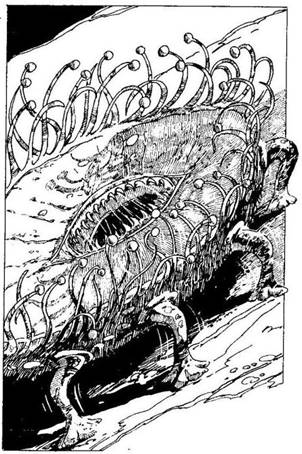
amelyet a csatában a seregek jeleként használtak. A legyezőben olyan csontberakás van, amelytől majd kifordul a gyomrod. Mit teszel?
Felveszed a harci legyezőt, és
kinyitod? Lapozz a 182-re.
Iszol egy keveset a folyadék-
ból? Lapozz a 196-ra.
A fejedre teszed a sisakot? Lapozz a 210-re.
Nem nyúlsz semmihez, és kimész
a barlangból Lapozz a 222-re.
385.
A remegés tovább fokozódik, míg maga a szikla is rázkódni kezd körülötted. Későn kapsz észbe, hogy az egy Mormota, vagyis egy hatalmas szörny, amely pontosan úgy néz ki, mint a szikla, amelyen fekszik. Ha értesz a Karumidzsutszuhoz, és használni kívánod - lapozz a 197-re. Ha nem - lapozz a 337-re.
386.
Amikor kiérsz a völgyből, hatalmas területet beborító erdőhöz érsz, Az út elvész benne, mint kő a vízben. Felismered az Árnyak Erdejét. Keresztül kell menned rajta. Lapozz a 112-re.
387.
Kisvártatva egy ösvényhez érsz, amely a vízpartra vezet, ahol egymáshoz illesztett hatalmas bazalttömbök sorakoznak. Ez az Óriások átkelőhelye. Egyik kőről a másikra ugorva haladsz előre. Lapozz a 113-ra.
388.
Anélkül hogy bárki is meglátna, lopva megkerülöd a palotát, aztán odaugrasz a pontosan egymáshoz illesztett kőtömbökből épült fal tövébe, de sehol sem látsz alkalmas helyet, ahol átmászhatnál rajta. Azonban ha elsajátítottad a Karumidzsutszu tudományát, felugorhatsz a várfal tetejére. Ha megpróbálod - lapozz a 284-re. Ha nem, odamehetsz a kapuhoz, és megpróbálhatsz csellel bejutni - lapozz a 374-re. Ha lemondasz a tervedről, hogy megöld Tsietsin nagyurat - lapozz a 338-ra. Ha a kapu közelében várakozol, hátba bejuthatsz valahogyan - lapozz a 398-ra.
389.
Kardforgató tudományod megrémíti a faszénégetőket. A tüzes husánggal rád támadó férfi teste összekaszabolva hever előtted, a többiek pedig bemenekültek az erdőbe. Megvédted urad becsületét, ezért kapsz 1 Becsület pontit. Folytatod az utat. Lapozz a 195-re.
390.
Visszarohansz, föltéped az ajtót, berohansz rajta. A Főnix nem állja utadat. Újra a Középpontban vagy, a csillagok és a nyolc ajtó között. Lapozz vissza a 8-ra, és válassz újra, de ne feledd, hogy csak olyasmit választhatsz, amit eddig még nem próbáltál ki.
391.
A hatalmas pompás vad alatt megremeg a föld, amikor elterül. Kardoddal levágod fekete agancsának egy darabját. A Fekete Szarvas több tonnát nyom, és túl nagy ahhoz, hogy gyorsan megnyúzd,
de a húsából kihasítasz egy nagyobb részt. Növeled 2 adaggal Élelmiszerkészletedet. A levágott agancsot furcsa, fehér kanyargós csík díszíti: olyan, mint egy csontkígyó. Úgy döntesz, megtartod az agancsdarabot, hátha szerencsét hoz. Jegyezd fel a Kalandlapodra, és lapozz a 381-re.
392.
Mielőtt még az őrök észbe kapnának, elrohansz. Végre van egy kardod! Amíg nem szerzel egy másikat is, nem használhatod Ni-to-Kendzsutszu tudományodat, sem Kjudzsutszu tudományodat, amíg nem szerzel egy íjat és hozzá nyílvesszőket. A folyosó egy lépcsőfordulónál ér véget. Ha felfelé indulsz - lapozz a 18-ra. Ha lefelé - lapozz a 4-re.
393.
A Kappák - mert így hívják a pikkelyes zöld szörnyeket - baljós pillantással néznek rád a víz felszíne alól. A legendák szerint igen ravaszok, és beszélik az emberi nyelvet. Ha azonnal elmész, amíg lehet - lapozz a 335- re. Ha megpróbálsz beszélni velük - lapozz a 325-re.

394.
A Ki-Rin felszáll, és körözni kezd a Dai-Oni körül. A Dai-Oni felésújt a buzogányával, de a Ki-Rin elugrik előle. Aztán a Ki-Rin kimond egy szót, amelytől a Dai-Oni felsikolt fájdalmában. - Megfosztottál a varázserőmtől, te átkozott bestia! - süvölti. A Ki-Rin feljebb száll, és hozzád fordul: - Ennyit tehetek érted, halandó. A többi már csak rajtad múlik. Sok szerencsét! - Aztán a Ki-Rin eltűnik. A Dai-Oni buzogányát magasra tartva előrelép, de most félelem tükröződik a szemében. Meg kell küzdened vele.
Dai-Oni ÜGYESSÉG 10 ÉLETERŐ 10
Ha legyőzted lapozz az 54-re.
395.
A túlpart közelében felmászol egy mohos földhányásra, s ekkor még néhány pikkelyes zöld szörny emelkedik ki a vízből, és feléd indul. Ha elsajátítottad a Karumidzsutszu tudományát, és át akarsz ugrani a fejük fölött, a biztonságot jelentő szárazföldre - lapozz a 35-re. Ha ott maradsz, és megküzdesz velük - lapozz a 13-ra. Ha megadod magad - lapozz a 3-ra.
396.
Tizenöt főből álló lovascsapat tűnik fel a távolban. Fényes, kékeszöld zománcozott páncélt viselnek egyikük kezében zászló. Fölismered Tsietsin nagyúr Szamurájait. Vezetőjük így üdvözöl - Isten hozott Tsietsin nagyúr földjén. Te a Sógun bajnoka vagy, ugye? Mosolyogva bólintasz. Az egyik hirtelen felkiált. - De Tsietsin nagyúr kikiáltotta magát
az új Sógunnak! - Amint ezt kimondja, váratlanul rád vetik magukat. Dicső módon küzdesz, hármat megölsz közülük és néhányat megsebesítesz, de végül győz a túlerő. Megkötöznek, és egy ló hátára szíjaznak. - Tsietsin nagyúr örülni fog ennek a fogásnak! - mondja az egyik. Abba a palotába visznek, amely mellett már egyszer elhaladtál. Bevisznek az udvarra, ahol Tsietsin Szamuráj csatlósai gúnyolódva, nevetgélve fogadnak. Bezárnak a várbörtön egyik cellájába. A foglár, egy bivaly termetű pasas viseltes bőrmellényben, gúnyosan így szól: - Holnap reggel Tsietsin Sógun elé visznek! - Ezzel rád csapja a nehéz, vasveretű tölgyfa ajtót.
Egyedül maradtál. Elvették a kardjaidat, de jobban sért a katonák gúnyolódása és megalázó elfogatásod. Veszítesz 1 Becsület pontot. Nincs mit tenned, meg kell várnod a reggelt. Lefekszel s sarokban álló priccsre, és elalszol. Lapozza 316-ra.

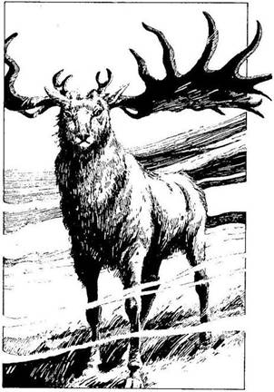
397.
Amikor felkel a nap, a völgyek felé haladsz egy olyan területen, amely még a Sógun birtokában van. Ösztövér barna fák tarkítják a síkságot, és megtörik a ködöt. Mielőtt továbbindulnál, kipihened magad ezen a sivár határvidéken. Nyersz 4 ÉLETERŐ pontot. Másnap a ködben haladsz előre, amikor dübörgő paták zaját hozza feléd a szél. Hatalmas, pompás fekete vadállat bukkan fel előtted a ködből. Ez a Határvidék Fekete Szarvasa, amelyről azt hitték, hogy hetven éve eltűnt. Sajnos úgy látszik, hogy most visszatért. Legalább hat méter hosszú, ébenfeketén csillogó agancsai vannak, a szeme olyan, mint két vörösen izzó drágakő. Meg kell küzdened vele.
Fekete Szarvas ÜGYESSÉG 9 ÉLETERŐ 18
Ha legyőzted - lapozz a 391-re.
398.
A kaputól nem messze várakozol, hátha észrevétlenül bejuthatsz a palotába. Kisvártatva egy szénásszekeret pillantasz meg, mely épp feléd tart - valószínűleg a palotába igyekszik. Elbújsz a bokorban, és megvárod, míg elmegy. Magasra halmozták rajta a szénát, elég helyed lenne, hogy elbújj. Ha a szekér után osonsz, és elbújsz a széna közt - lapozz a 6-ra. Ha elveted ezt az ötletet és folytatod eredeti küldetésedet - lapozz a 338-ra. Ha megpróbálsz csellel bejutni - lapozz 374-re.

399.
Ginsei holtan hever a lábad előtt, csillogó kék páncélján rés tátong, amelyen át vörös vér szivárog. Soha többé nem mocskolja be a Sógun nevét. Még mindig füst száll föl a kis kunyhóból, ahonnan előbújt. Ha bemész és átkutatod a kunyhót - lapozz a 383-ra. Ha táborhelyet keresel az erdőben - lapozz a 371-re.

400.
Az Árnyak Urának fekete csuklyás palástja a földre hullik. Ikiru nincs többé. A sötét csarnok falai megremegnek, Ikiru trónja darabokra törik, és a verem beomlik. Repedések jelennek meg a padlón. Kétségbeesetten keresed a kijáratot, mikor az egyik fal kidől, és mindent eláraszt a napfény. Hunyorogva rohansz ki a nagy fényességből, és a Shios’ii hegyekben találod magad. A hatalmas, ellenséges palota - Ikiru palotája - összeomlik mögötted.
A Shikomék táborának közepén vagy, de rád se hederítenek. Néhányan rémülten merednek a palotára, mások fejvesztetten menekülnek. Kihasználod az alkalmat, és te is elmenekülsz.
Néhány nappal később épségben térsz vissza Konichiba, a fővárosba, ahol a Sógun fogadást ad a tiszteletedre. Most, hogy a Daloló Halál újra az övé, hatalma a régi, és Hachiman urai a zászlaja alá sereglenek, hogy kiűzzék a barbár betolakodókat- Ikiru halálhírére a Shikomék serege szétszéled, többé nem jelentenek veszélyt. Béke és gazdagság vár rád és Hachimanra!